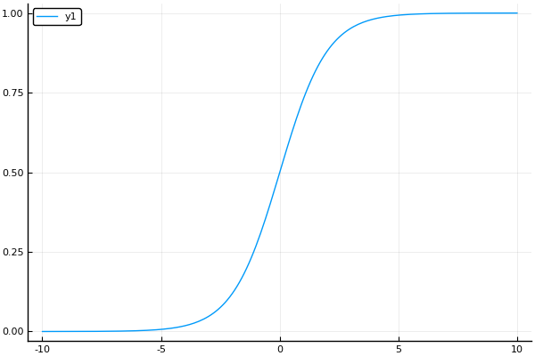
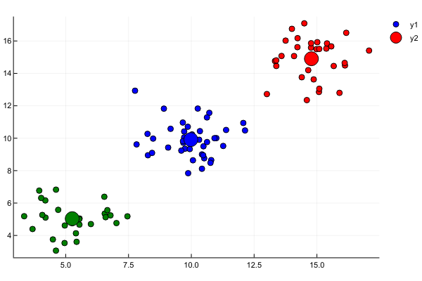
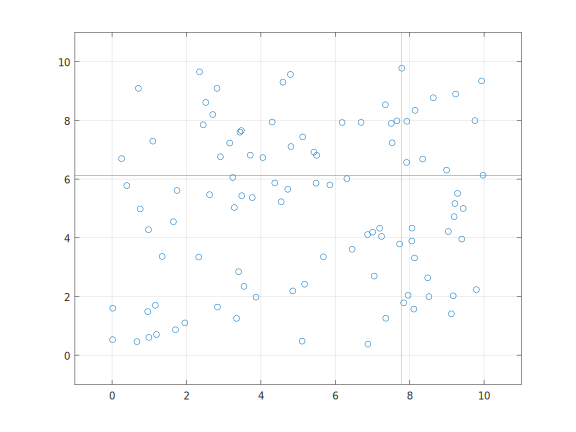

软件构造基础
本章主要记录软件构造过程中的过程、质量指标和版本控制。
软件构造的多维度视图
| 维度 | 属性 | 属性 |
|---|---|---|
| 阶段 | 编译期(Built-Time) | 运行期(Run-Time) |
| 层次 | 代码层次(Code-Level) | 组件层次(Component-Level) |
| 跨度 | 时刻(Moment) | 时期(Period) |
源代码的逻辑组织结构，函数(Function)、类(Class)、方法(Method)、接口(Interface)等等以及他们的相互依赖关系。
源代码在物理上的组织结构，文件(File)、目录(Directory)、包(Package)、库(Library)等等以及他们的相互依赖关系。
软件构造的质量目标
软件系统的质量属性：
- 内部质量因素/外部质量因素
- 重要的外部质量因素
- 质量因素之间的权衡
软件构造过程中的五个质量目标：
- 代码可读性
- 代码可维护性和适应性
- 复用性
- 健壮性
- 高性能
开发者需要在各种因素之间权衡
完整性 与 易用性 经济性 与 功能性 效率 与 可移植性 效率 与 可重用性 经济性 与 可重用性 时效性 与 可扩展性
外部质量因素
正确性：确保正确性的方法当然是进行测试和Debug。另一种方案是进行防御式编程，这样可以从一开始就保证正确性。
鲁棒性：在遇到错误的时候，不会造成灾难性的后果，而是给出友好的提示，即合理的处理错误的输入的能力。
扩展性：通常来说，软件会不断的进化和发展，会不断的加入新的功能，良好的设计可以使得这些变化的加入变得容易。
- 简单的设计会更容易适应新的变化
- 分离的模块设计可以最大可能的避免连锁反应，即将代码变动带来的影响局限到一个小范围内
复用性：即同一套模式和组件可以用于构建许多不同的软件，这是由于不同软件之间的共同性决定的。
兼容性：不同平台的支持、不同版本之间文件的支持、不同的文件格式的支持、不同软件之间的支持（使用其他软件的输出）。需要进行标准的制定，比如文件格式、菜单、图标等等方面，给用户一致性的体验。
效率：效率总是要让步与正确性。对效率的追求需要与别的方面诸如可扩展性、可重用性的目标的权衡。
可移植性：便于将软件部署到其他设备和平台上的能力。
易用性：对于新手有详细的帮助和指导，又不会对专家造成困扰。清晰的结构和设计是重要因素，特别的，要尽可能的了解它的最终使用者。
功能性：向用户提供他们真正需要的功能，而不是一味的添加新功能，避免由于新功能而影响到一致性和整体质量。
时效性：推出产品过慢可能会错失良机。
可验证性：准备验证程序，特别是测试数据，以及检测故障和跟踪的程序他们在验证和操作阶段发生错误。
完整性：是软件系统保护其各种功能的能力组件（程序，数据）防止未经授权的访问和修改的能力。
可修复性：是促进修复缺陷的能力。
经济性：在限定时间内，按其分配的预算或低于其预算完成。
内部质量因素
源代码相关的因素：代码行数（LOC），循环复杂性等等。
结构相关：耦合、內聚等。
可读性、可理解性和清晰度。
复杂度和尺寸。
内部质量因素通常用作外部质量因素的一部分。
传统软件开发模型
软件生命周期（SDLC）：
| 序号 | 步骤 | 详解 |
|---|---|---|
| 1 | 问题定义与规划 | 此阶段是软件开发方与需求方共同讨论，主要确定软件的开发目标及其可行性。 |
| 2 | 需求分析 | 在确定软件开发可行的情况下，对软件需要实现的各个功能进行详细分析。需求分析阶段是一个很重要的阶段，这一阶段做得好，将为整个软件开发项目的成功打下良好的基础。“唯一不变的是变化本身。”，同样需求也是在整个软件开发过程中不断变化和深入的，因此我们必须制定需求变更计划来应付这种变化，以保护整个项目的顺利进行。 |
| 3 | 软件设计 | 此阶段主要根据需求分析的结果，对整个软件系统进行设计，如系统框架设计，数据库设计等等。软件设计一般分为总体设计和详细设计。好的软件设计将为软件程序编写打下良好的基础。 |
| 4 | 程序编码 | 此阶段是将软件设计的结果转换成计算机可运行的程序代码。在程序编码中必须要制定统一，符合标准的编写规范。以保证程序的可读性，易维护性，提高程序的运行效率。 |
| 5 | 软件测试 | 在软件设计完成后要经过严密的测试，以发现软件在整个设计过程中存在的问题并加以纠正。整个测试过程分单元测试、组装测试以及系统测试三个阶段进行。测试的方法主要有白盒测试和黑盒测试两种。在测试过程中需要建立详细的测试计划并严格按照测试计划进行测试，以减少测试的随意性。 |
| 6 | 运行维护 | 软件维护是软件生命周期中持续时间最长的阶段。在软件开发完成并投入使用后，由于多方面的原因，软件不能继续适应用户的要求。要延续软件的使用寿命，就必须对软件进行维护。软件的维护包括纠错性维护和改进性维护两个方面。 |
瀑布模型
瀑布模型（Waterfall Model）首先由Royce提出。该模型由于酷似瀑布闻名。在该模型中，首先确定需求，并接受客户和SQA小组的验证。然后拟定规格说明，同样通过验证后，进入计划阶段…可以看出，瀑布模型中至关重要的一点是只有当一个阶段的文档已经编制好并获得SQA小组的认可才可以进入下一个阶段。这样，瀑布模型通过强制性的要求提供规约文档来确保每个阶段都能很好的完成任务。但是实际上往往难以办到，因为整个的模型几乎都是以文档驱动的，这对于非专业的用户来说是难以阅读和理解的。想象一下，你去买衣服的时候，售货员给你出示的是一本厚厚的服装规格说明，你会有什么样的感触。虽然瀑布模型有很多很好的思想可以借鉴，但是在过程能力上有天生的缺陷。
增量模型
增量模型又称为渐增模型，也称为有计划的产品改进模型，它从一组给定的需求开始，通过构造一系列可执行中间版本来实施开发活动。第一个版本纳入一部分需求，下一个版本纳入更多的需求，依此类推，直到系统完成。每个中间版本都要执行必需的过程、活动和任务。 增量模型是瀑布模型和原型进化模型的综合，它对软件过程的考虑是：在整体上按照瀑布模型的流程实施项目开发，以方便对项目的管理；但在软件的实际创建中，则将软件系统按功能分解为许多增量构件，并以构件为单位逐个地创建与交付，直到全部增量构件创建完毕，并都被集成到系统之中交付用户使用。
V模型
V模型列出了在产品开发时需进行的各个阶段，以及各阶段对应的产出。V模型描述了产品开发中需进行的活动，以及各活动产出的资料或是文件。而这些文件也是后面阶段需要的资料输入。
V模型的左侧是需求的分解，并且产生系统的规格，V模型的右侧是各部分的整合以及确认（validation）[3][4][5][6][7] 。不过，需求需要先根据更高层次的需求文件或是客户需要来确认，而且，也可能需要有系统模型的确认（例如FEM），也可能在V模型的左侧就先进行了一部分。因此确认步骤主要是在V模型的右侧，但不是全部。V模型的左侧除了确认以外，也包括验证（verification）。最简单区分验证及确认的方式是验证永远是根据需求文件（技术层面），而确认是根据真实世界的情形或是客户的需要。
确认可以说是在问“做的是正确的东西吗？”，而验证可以说是在问“做的方式正确吗？”
原型模型
原型模型指的是在执行实际软件的开发之前，应当建立系统的一个工作原型。一个原型是系统的一个模拟执行，和实际的软件相比，通常功能有限、可靠性较低及性能不充分。通常使用几个捷径来建设原型，这些捷径可能包括使用低效率的、不精确的和虚拟的函数，一个原型通常是实际系统的一个比较粗糙的版本。
螺旋模型
螺旋模型是一种演化软件开发过程模型，它兼顾了快速原型的迭代的特征以及瀑布模型的系统化与严格监控。 螺旋模型最大的特点在于引入了其他模型不具备的风险分析，使软件在无法排除重大风险时有机会停止，以减小损失。 同时，在每个迭代阶段构建原型是螺旋模型用以减小风险的途径。 螺旋模型更适合大型的昂贵的系统级的软件应用。
协作式的软件开发
开源
软件配置管理（SCM）
SCM是对软件的追踪和控制软件变更的任务。它包括版本修订和基准控制。
版本控制：是对计算机软件的不同状态分配一个独特的版本号，通常用于追踪不同版本的电子信息。
Reverting：回退到过去的版本。 Comparing：比较两个不同的版本。 Pushing：推送版本历史到另一个位置。 Pulling：从别的位置拉取版本历史。 Mergeing：合并 早期版本的衍生版本。
git指令问题
有三个开发者参与一个项目，A负责开发初始代码，B负责修复bug和优化代码，C负责测试并报告bug。项目的Git服务器为S，三人的本地Git仓库已经配置好远程服务器（名字均为origin）。项目的Git版本状态如图所示，三人的本地Git仓库的状态也是如此，其中包含主分支master，当前工作分支是master。

此时他们三人开展了以下工作：
- A开发了某项新功能，他创建了分支b1并在该分支上提交新代码，推送至服务器S；
- C获取了A的提交，并在其上开辟了新分支b2，在b2上撰写测试程序并提交和推送至服务器S；
- C在执行测试程序过程中发现了A的代码存在问题，C将bug信息报告给B；
- B获取了C推送的包含测试程序的版本，在其基础上开辟了一个新分支b3用于bug修复，当B确认修改后的代码可通过所有测试用例之后，向Git做了一次提交，将b3合并到b2上并推送至服务器S
- C获取B的修复代码并重新执行其中包含的测试程序，确认bug已被修复，故将其合并到主分支master上，推送至服务器S，对外发布。
题目：
- 在图上补全上述活动结束后服务器S上的版本状态图（需注明各分支的名字与位置）；
- 写出B为完成步骤d所需的全部Git指令，指令需包含完整的参数。
gitGraph:
options
{
"nodeSpacing": 100,
"nodeRadius": 10
}
end
commit
commit
branch b1
checkout b1
commit
branch b2
checkout b2
commit
branch b3
checkout b3
commit
checkout b2
merge b3
checkout master
merge b2
git pull
git checkout b2
git checkout -b b3
# fix bugs
git add ./
git commit -m "fix bugs"
git checkout b2
git merge b3
git push
概念辨析
在课程的学习中，有一些概念难以理解，以下进行记录。
静态检查、动态检查、无检查
个人认为静态检查是编译期的检查、动态检查是运行期所做的检查、无检查是指虽然没有编译时或者运行时错误，但是有语义错误，也就是没有得到期望的结果。
静态检查：通常是语法错误的检查，包括标点错误、关键词错误、名字错误、参数数目或者类型错误、返回类型错误。
动态检查：指程序运行期间的检查，我更倾向于称之为错误，比如除零错误、数组越界、空指针解引用访问等等。
无检查：这些一般是由于程序员不了解语言的特性产生的错误或者语义错误。
// expect 2.5 but get 2
float a = 5/2;
// the num overflow
int big = 200000 * 200000;
// want n*n*n but get n*n*n*n
int n3(int n){
return n*n*n*n;
}
可变性(Mutability) VS 不可变性(Immutability)
Note：Java是传值还是传引用？这个问题个人认为是传值，而不是传引用，但是很多时候，Java表现出了传引用的一些表现。比如说：
static void change(StringBuilder b) {
b.append("a");
}
public static void main(String[] args) {
StringBuilder builder = new StringBuilder("a");
System.out.println(builder); "a"
change(builder);
System.out.println(builder); "b"
}
看上去是引用传递，但实际上不是，如果说是引用传递的话，这段代码的行为就不对了：
static void swap(String a, String b) {
String c = a;
a = b;
b = c;
}
public static void main(String[] args) {
String a = "A";
String b = "B";
swap(a, b);
System.out.println("a:" + a); // "A"
System.out.println("b:" + b); // "B"
}
这段代码的执行结果并没有起到交换的效果，那为什么会在这样呢？我认为Java传入的是对象的引用地址，也就是说，形参和实参的地址是相同的，所以当我们在函数里面改变对象的值也会连带者改变外面的对象的值，但是我们想要改变它所引用的对象确实不可能了。
得出结论：Java中的非原始类型都是指针。
变量的可变性
一种是值可变，一种是引用可变。值的变化是指名字所引用的内存空间里面的数据发生改变，引用的变化则是指名字的内存指向发生了变化，从一个位置指向了另一个位置。
使用两种语言做实例：
int a1 = 5; // 值可变
const int a2 = 5; // 值不可变
char s = 'a';
const char* p1 = &s; // 引用可变，值不可变，可以指向别的位置，但是不能修改其中的内容
char* const p2 = &s; // 引用不可变，值可变，可以修改其中的值，但是不能指向别的位置
const char* const p3 = &s; // 引用不可变，值也不可变
int a1 = 5; // 值可变
final int a2 = 5; // 值不可变
String s1 = "a"; // 值不可变，引用可变
final String s2 = s1; // 值不可变，引用可变
final StringBuilder s3 = s1; // 引用不可变，值可变
类型的可变性
可变类型：该类型的对象创建之后，仍然可以修改所创建的对象的值，如StringBuilder、List等。
不可变类型：该类型的对象一旦创建，里面的值就不再变化，如String。
不变量(Invariants)
不变量是一种属性,它在程序运行的时候总是一种状态,而不变性就是其中的一种:一旦一个不可变类型的对象被创建，它总是代表一个不变的值。当一个ADT能够确保它内部的不变量恒定不变(不受使用者/外部影响),我们就说这个ADT保护/保留自己的不变量。
表示暴露(Representation Exposure)
如果类外部的代码可以直接修改类内部存储的数据,那么我们就称之为表示暴露。避免标识暴露的几个方法：
- 使用final关键字，将内部的数据表示为final，可以避免对象引用的更改。
- 将变量声明为private的，这样就只给了外部有限的访问能力，单这里需要注意的是，对外暴露的是内部对象的引用还是拷贝，如果内部对象是可变的，那么仍然是隐患。
- 创建对象时的引用，如果创建对象的时候引用的是一个可变对象，那么外部对象的更改仍然对类有影响，可以考虑防御式复制或者使用不可变对象。
表示不变量(Representation Invariants)和抽象函数(abstraction function)
抽象域：类型设计时需要被支持的值，使用者所关心的抽象类型。
表示域：抽象域的具体实现，实现者在对抽象域的对象进行实现的时候的具体表示。
表示不变量：示值到布尔值的映射:RI : R → boolean。对于表示值r,当且仅当r被AF映射到了A,RI(r)为真。换句话说,RI告诉了我们哪些表示值是“良好组织”的，即是否为合法的表示值。
抽象函数：是表示值到其对应的抽象值的映射:AF : R → A。这种映射是满射,但不一定是单射(不一定是双射)。对于AF(抽象函数) 来说,仅仅宽泛的说抽象域表示了什么并不够。抽象函数的作用是规定合法的表示值会如何被解释到抽象域。作为一个函数,我们应该清晰的知道从一个输入到一个输入是怎么对应的。
比如大数的实现，对于使用者来说，抽象域集合就是所有可能的整数，而对于实现者来说，既可以用整数数组来表示也可以用字符串来进行表示，那么整数数组或者字符串就是表示域。
例子
// Immutable type representing a tweet.
// 不可变类型表示的tweet
public class Tweet {
private final String author;
private final String text;
private final Date timestamp;
// Rep invariant:
// 所谓的表示不变量，其实就是内部的数据结构的组成部分都表示了tweet的什么部分
// author is a Twitter username (a nonempty string of letters, digits, underscores)
// text.length <= 140
// Abstraction function:
// 所谓的抽象函数，就是这个类型所表示的是个什么东西，当然，要给出类型的哪些东西表示的
// AF(author, text, timestamp) = a tweet posted by author, with content text, at time timestamp
// Safety from rep exposure:
// 表示暴露安全，有这个的东西就是安全的，对象一旦产生，内部表示不会发生任何改变
// 下面需要对内部的所有表示进行说明，以证明确实是表示暴露安全的
// All fields are private;
// 内部都是私有属性，那么引用的修改就不可能了
// author and text are Strings, so are guaranteed immutable;
// 不可变类型，这说明外部不可能对他进行修改
// timestamp is a mutable Date, so Tweet() constructor and getTimestamp()
// 可变类型需要做防御性的复制，避免外部变量引用内部变量，修改造成泄漏
// make defensive copies to avoid sharing the rep's Date object with clients.
// Operations (specs and method bodies omitted to save space)
public Tweet(String author, String text, Date timestamp) { ...}
public String getAuthor() { ...}
public String getText() { ...}
public Date getTimestamp() { ...}
}
逻辑回归
Logistic Regression虽然名字里带“回归”，但是它实际上是一种分类方法，用于两分类问题（即输出只有两种）。需要先找到一个预测函数（h），显然，该函数的输出必须是两个值（分别代表两个类别），所以利用了Logistic函数（或称为Sigmoid函数），函数形式为：

逻辑回归的优缺点
优点：
- 速度快，适合二分类问题
- 简单易于理解，直接看到各个特征的权重
- 能容易地更新模型吸收新的数据
缺点： 对数据和场景的适应能力有局限性，不如决策树算法适应性那么强
逻辑回归和多重线性回归的区别
Logistic回归与多重线性回归实际上有很多相同之处，最大的区别就在于它们的因变量不同，其他的基本都差不多。正是因为如此，这两种回归可以归于同一个家族，即广义线性模型（generalizedlinear model）。 这一家族中的模型形式基本上都差不多，不同的就是因变量不同。这一家族中的模型形式基本上都差不多，不同的就是因变量不同。
- 如果是连续的，就是多重线性回归
- 如果是二项分布，就是Logistic回归
- 如果是Poisson分布，就是Poisson回归
- 如果是负二项分布，就是负二项回归
逻辑回归用途
- 寻找危险因素：寻找某一疾病的危险因素等；
- 预测：根据模型，预测在不同的自变量情况下，发生某病或某种情况的概率有多大；
- 判别：实际上跟预测有些类似，也是根据模型，判断某人属于某病或属于某种情况的概率有多大，也就是看一下这个人有多大的可能性是属于某病。
Regression 常规步骤
- 寻找h函数（即预测函数）
- 构造J函数（损失函数）
- 想办法使得J函数最小并求得回归参数（θ）
构造预测函数h(x)
函数h(x)的值有特殊的含义，它表示结果取1的概率，因此对于输入x分类结果为类别1和类别0的概率分别为：
构造损失函数J
由于我们知道y只能取0或者1,我们可以把概率写成如下形式：
取似然对数为：
取对数似然有：
梯度下降法
求导：
牛顿法
考虑牛顿法在求解方程时的用法。牛顿法在求解方程根时，主要是根据泰勒展示式进行迭代求解的。 假设 有近似根，那么 在点 处的泰勒展开式表示为，
令有，，求解得到
类似的，我们求解
其中位
向量化
机器学习数学预备知识
- 高等数学
- 线性代数
- 概率论
- 信息论
最大似然估计
最大似然估计是一种“模型已定，参数未知”的方法，一些复杂的条件下，是很难通过直观的方式获得答案的，这时候理论分析就尤为重要了，这也是学者们为何要提出最大似然估计的原因。
假设一个袋子装有白球与红球，比例未知，现在抽取10次（每次抽完都放回，保证事件独立性），假设抽到了7次白球和3次红球，在此数据样本条件下，可以采用最大似然估计法求解袋子中白球的比例。
当然，这种数据情况下很明显，白球的比例是70%，但如何通过理论的方法得到这个答案呢？我们可以定义从袋子中抽取白球和红球的概率如下：
其中x1为第一次采样，x2为第二次采样，f为模型,为模型参数。其中未知，因此，我们定义似然L为：
两边取自然对数，将乘号变为加号，便于求导：
下面是平均对数似然：
最大似然估计的过程，就是赵一个合适的使得平均对数似然的值为最大。因此，可以得出下列公式。
上述情况为二次采样，扩展到多次采样则有：
我们定义M为模型（也就是之前公式中的f），表示抽到白球的概率为theta，而抽到红球的概率为，因此10次抽取抽到白球7次的概率可以表示为：
将其描述为平均似然可得：
那么最大似然就是找到一个合适的，获得最大的平均似然。因此我们可以对平均似然的公式对求导，并令导数为0。
求解过程
- 写出似然函数
- 如果无法直接求导的话，对似然函数取对数
- 求导数
- 求解模型中参数的最优值
信息论
信息熵
熵是信息的关键度量，通常指一条信息中需要传输或者存储一个信号的平均比特数。熵衡量了预测随机变量的不确定度，不确定性越大熵越大。
- 热力学中的热熵是表示分子状态混乱程度的物理量。香农用信息熵的概念来描述信源的不确定度。
- 两个独立符号所产生的不确定性应等于各自不确定性之和。
- 在信源中，考虑的不是某一单个符号发生的不确定性，而是要考虑这个信源所有可能发生情况的平均不确定性。
对于当个符号，它的概率为p时，用这个公式衡量它的不确定性：
而信源的平均不确定性，称为信息熵，针对随机变量X，其信息熵的定义如下：
信息熵是信源编码中，压缩率的下限。当我们使用少于信息熵的信息量做编码，那么一定有信息的损失。
注意：
- 当式中的对数的底为2时，信息熵的单位为比特。它底数为其它时，它对应的单位也不一样。
- 信息熵是信息论中用于度量信息量的一个概念。一个系统越是有序，信息熵就越低；反之，一个系统越是混乱，信息熵就越高。所以，信息熵也可以说是系统有序化程度的一个度量。
条件熵
设X,Y是两个离散型随机变量，随机变量X给定的条件下随机变量Y的条件熵H（Y|X）表示在已知随机变量X的条件下随机变量Y的不确定性。
公式推导如下：
注意：
- 这个条件熵，不是指在给定某个数（某个变量为某个值）的情况下，另一个变量的熵是多少，而是期望！因为条件熵中X也是一个变量，意思是在一个变量X的条件下（变量X的每个值都会取），另一个变量Y熵对X的期望。
- 在计算信息增益的时候，经常需要用到条件熵。信息增益（information gain）是指期望信息或者信息熵的有效减少量（通常用“字节”衡量）。通常表示为：信息熵 - 条件熵；在决策树中就是根据信息增益选择特征的。
联合熵
联合熵是一集变量之间不确定的衡量手段。
联合熵和条件熵的关系是：
自信息
自信息表示概率空间中与单一事件或离散变量的值相关的信息量的量度。
平均的自信息就是信息熵。
互信息
两个随机变量的互信息，是变量间相互依赖性的量度，不同于相关系数，互信息不限于实值随机变量，其更加一般。
其意义为，若我们想知道Y包含多少X的信息，在尚未得到 Y之前，我们的不确定性是 H(X)，得到Y后，不确定性是H(X|Y)。所以一旦得到Y后，我们消除了 H(X)-H(X|Y)的不确定量，这就是Y对X的信息量。
KL散度(信息增益)
KL散度，又称为相对熵（relative entropy）、信息散度（information divergence）、信息增益（information gain）。
KL散度是两个概率分布P和Q差别非对称性的度量。KL散度用来度量基于Q的编码来编码来自P的样本平均所需的额外的位元数。典型情况下，P表示数据的真实分布，Q表述数据的模型分布。
注意：
-
KL散度不是对称的，即：
-
相对熵的值为非负值。可以从一个很重要的不等式中推论出来，即吉布斯不等式：若且，则有：，等号成立当且仅当，在信息论和概率论中，它能应用在Fano不等式和讯号源编码定理的证明。
交叉熵
交叉熵衡量了在真实分布是P的情况的情况下，使用分布Q去编码数据，需要的平均比特。
交叉熵与逻辑回归的关系如下：
逻辑回归中：
数据的真实分布中：
因此，可以用交叉熵去衡量估计分布q与真实分布p的相似性，交叉熵越小那么越相似。
因此，损失函数为，得到了和最大似然推导相同的结果：
链式求导法则
使在t处可微，并且有在点处也可微，那么在t处就是可微的，且t处的微分为
使在点(u,v)处可微，并且有在点处也可微，那么在(u,v)处就是可微的，且t处的微分为
矩阵、向量求导法则
矢量对元素求导
矢量对元素求导，相当于把矢量里的每一个元素对元素求导，结果的形式还是矢量的形式。
行向量对元素求导
设 是维行向量， 是元素。 则
列向量对元素求导
设 是维列向量， 是元素。 则
矩阵对元素求导
设
是矩阵， 是元素。 则
元素对矢量求导
元素对矢量求导，相当于元素和矢量里的每一个元素求一次导，结果的形式和矩阵的形式相同。
元素对行向量求导
设 是元素, 是维行向量。 则
元素对列向量求导
设 是元素, 是维行向量。 则
元素对矩阵求导
设 是元素， 是矩阵。 则
矢量对矢量求导
矢量对矢量的求导要采用逐层展开的方式。先将一个矢量看成一个元素，然后采用前面元素和矢量的运算法则。
行向量对列向量求导
设 是p维行向量， 是 q 维列向量。则
列向量对行向量求导
设 是p维列向量， 是 q 维列向量。则
行向量对行向量求导
设 是p维行向量， 是 q 维行向量。则
列向量对列向量求导
设 是p维行向量， 是 q 维列向量。则
矩阵对行向量求导
设 是矩阵，是q维行向量，则
矩阵对列向量求导
设 是矩阵。p维维列向量，则
行向量对矩阵求导
设 是维行向量。 是矩阵，则
列向量对矩阵求导
设 是维列向量。 是矩阵，则
矩阵对矩阵求导
设 是矩阵。 是矩阵，则
常用矩阵求导公式
PCA（主成分分析）
PCA，Principle Component Analysis，即主成分分析法，是特征降维的最常用手段。顾名思义，PCA 能从冗余特征中提取主要成分，在不太损失模型质量的情况下，提升了模型训练速度。
PCA诞生的需求
PCA(Principal Component Analysis) ，即主成分分析方法，是一种使用最广泛的数据降维算法。我们很希望有足够多的特征（知识）来保准学习模型的训练效果，尤其在图像处理这类的任务中，高维特征是在所难免的，但是，高维的特征也有几个如下不好的地方：
- 学习性能下降，知识越多，吸收知识（输入），并且精通知识（学习）的速度就越慢。
- 过多的特征难于分辨，你很难第一时间认识某个特征代表的意义。
- 特征冗余，比如厘米和英尺就是一对冗余特征，他们本身代表的意义是一样的，并且能够相互转换。
特征降维的一般手段就是将高维特征投影到低维空间。
PCA原理
PCA的主要思想是将n维特征映射到k维上，这k维是全新的正交特征也被称为主成分，是在原有n维特征的基础上重新构造出来的k维特征。
PCA的工作就是从原始的空间中顺序地找一组相互正交的坐标轴，新的坐标轴的选择与数据本身是密切相关的。其中，第一个新坐标轴选择是原始数据中方差最大的方向，第二个新坐标轴选取是与第一个坐标轴正交的平面中使得方差最大的，第三个轴是与第1,2个轴正交的平面中方差最大的。依次类推，可以得到n个这样的坐标轴。
通过这种方式获得的新的坐标轴，我们发现，大部分方差都包含在前面k个坐标轴中，后面的坐标轴所含的方差几乎为0。于是，我们可以忽略余下的坐标轴，只保留前面k个含有绝大部分方差的坐标轴。
事实上，这相当于只保留包含绝大部分方差的维度特征，而忽略包含方差几乎为0的特征维度，实现对数据特征的降维处理。
而通过计算数据矩阵的协方差矩阵，然后得到协方差矩阵的特征值特征向量，选择特征值最大(即方差最大)的k个特征所对应的特征向量组成的矩阵。这样就可以将数据矩阵转换到新的空间当中，实现数据特征的降维。
PCA推导
PCA的构建：PCA需要构建一个编码器，由输入得到一个最优编码（若，则做了降维编码）；同时有一个解码器，解码后的输出尽可能地与相近。
PCA由我们所选择的解码器决定，在数学上，我们使用矩阵将映射回，即，其中定义解码的矩阵。
为了限制PCA的唯一性，我们限制中所有列向量彼此正交且均有单位范数（否则、同比例增加、减少会产生无数个解）。
在数学上，为了满足PCA构建中的条件，我们利用范数来衡量与的相近程度。即，也就是
该最小化函数可以简化为
因而，优化目标变为，再带入，
再求偏导
于是我们可以得到编码函数，PCA的重构操作也就可以定义为。问题接着就转化成如何求编码矩阵。由于PCA算法是在整个数据矩阵上进行编码，因而也要用对所有数据进行解码，所以需要最小化所有维上的误差矩阵的Frobenius范数：
我们考虑的情况，则是一个单一向量，则上式可以转化为
而为标量，转置与自身相等，上式通常写作
再将每一个输入点叠加起来，我们得到
Frobenius范数简化成（考虑约束条件）
最后的优化目标可以利用以及拉格朗日乘数法来求解，可得最优的是的最大特征值对应的特征向量。
上面的推导特定于的情况，仅有一个主成分。一般来说，矩阵D由X^TX的前l个最大的特征值对应的特征向量组成（利用归纳法，将表示为的函数即可，需要两个辅助矩阵：单位对角矩阵以及，省去证明过程）。
算法流程
由于得到协方差矩阵的特征值特征向量有两种方法：特征值分解协方差矩阵、奇异值分解协方差矩阵，所以PCA算法有两种实现方法：基于特征值分解协方差矩阵实现PCA算法、基于SVD分解协方差矩阵实现PCA算法。
基于特征值分解协方差矩阵实现PCA算法
-
去平均值(即去中心化)，即每一位特征减去各自的平均值。
-
计算协方差矩阵:注：这里除或不除样本数量或,其实对求出的特征向量没有影响。
-
用特征值分解方法求协方差矩阵的特征值与特征向量。
-
对特征值从大到小排序，选择其中最大的个。然后将其对应的个特征向量分别作为行向量组成特征向量矩阵。
-
将数据转换到个特征向量构建的新空间中，即：
基于SVD分解协方差矩阵实现PCA算法
输入：数据集 ，需要降到k维。
-
去平均值(即去中心化)，即每一位特征减去各自的平均值。
-
计算协方差矩阵：
-
通过奇异值分解（SVD），求取 的特征向量（eigenvectors）：
-
从中取出前个左奇异向量(事实上已经从大到小排好序了)，构成一个约减矩阵:
-
将数据转换到个特征向量构建的新空间中。计算新的特征向量：
特征还原
因为PCA仅保留了特征的主成分，所以PCA是一种有损的压缩方式，假定我们获得新特征向量为：
那么，还原后的特征 为：
降到多少维才合适？
从 PCA 的执行流程中，我们知道，需要为 PCA 指定目的维度 。如果降维不多，则性能提升不大；如果目标维度太小，则又丢失了许多信息。通常，使用如下的流程的来评估 值选取优异：
求各样本的投影均方误差:
求数据的总变差：
评估下式是否成立:
其中， 的取值可以为 ，假设 ，我们就说“特征间 99% 的差异性得到保留”。
不要提前优化
由于 PCA 减小了特征维度，因而也有可能带来过拟合的问题。PCA 不是必须的，在机器学习中，一定谨记不要提前优化，只有当算法运行效率不尽如如人意时，再考虑使用 PCA 或者其他特征降维手段来提升训练速度。
机器学习之决策树
决策树（decision tree）是一种基本的分类与回归方法，此处主要讨论分类的决策树。
在分类问题中，表示基于特征对实例进行分类的过程，可以认为是if-then的集合，也可以认为是定义在特征空间与类空间上的条件概率分布。
决策树的特点
-
优点：计算复杂度不高，输出结果易于理解，对中间值的缺失不敏感，可以处理不相关特征数据。
-
缺点：可能会产生过度匹配的问题
-
适用数据类型：数值型和标称型
-
决策树学习的目标：根据给定的训练数据集构建一个决策树模型，使它能够对实例进行正确的分类。
-
决策树学习的本质：从训练集中归纳出一组分类规则，或者说是由训练数据集估计条件概率模型。
-
决策树学习的损失函数：正则化的极大似然函数
-
决策树学习的测试：最小化损失函数
-
决策树学习的目标：在损失函数的意义下，选择最优决策树的问题。
-
决策树原理和问答猜测结果游戏相似，根据一系列数据，然后给出游戏的答案。
决策树的建立过程
决策树通常有三个步骤：特征选择、决策树的生成、决策树的修剪。
用决策树分类：从根节点开始，对实例的某一特征进行测试，根据测试结果将实例分配到其子节点，此时每个子节点对应着该特征的一个取值，如此递归的对实例进行测试并分配，直到到达叶节点，最后将实例分到叶节点的类中。
使用决策树做预测
- 收集数据：可以使用任何方法。比如想构建一个相亲系统，我们可以从媒婆那里，或者通过参访相亲对象获取数据。根据他们考虑的因素和最终的选择结果，就可以得到一些供我们利用的数据了。
- 准备数据：收集完的数据，我们要进行整理，将这些所有收集的信息按照一定规则整理出来，并排版，方便我们进行后续处理。
- 分析数据：可以使用任何方法，决策树构造完成之后，我们可以检查决策树图形是否符合预期。
- 训练算法：这个过程也就是构造决策树，同样也可以说是决策树学习，就是构造一个决策树的数据结构。
- 测试算法：使用经验树计算错误率。当错误率达到了可接收范围，这个决策树就可以投放使用了。
- 使用算法：此步骤可以使用适用于任何监督学习算法，而使用决策树可以更好地理解数据的内在含义。
数学知识储备
请参考机器学习数学预备知识。
决策树的构造
决策树学习的算法通常是一个递归地选择最优特征，并根据该特征对训练数据进行分割，使得各个子数据集有一个最好的分类的过程。这一过程对应着对特征空间的划分，也对应着决策树的构建。
- 开始：构建根节点，将所有训练数据都放在根节点，选择一个最优特征，按着这一特征将训练数据集分割成子集，使得各个子集有一个在当前条件下最好的分类。
- 如果这些子集已经能够被基本正确分类，那么构建叶节点，并将这些子集分到所对应的叶节点去。
- 如果还有子集不能够被正确的分类，那么就对这些子集选择新的最优特征，继续对其进行分割，构建相应的节点，如果递归进行，直至所有训练数据子集被基本正确的分类，或者没有合适的特征为止。
- 每个子集都被分到叶节点上，即都有了明确的类，这样就生成了一颗决策树。
没有代码的说教都是耍流氓！！！
下面给出具体实现(以信息增益作为划分标准)：
using DataFrames, CSV;
function calcEnt(datasets)
num_samples = size(datasets,1)
label_counts = Dict()
for label in datasets[end]
if label in keys(label_counts)
label_counts[label] += 1
else
label_counts[label] = 1
end
end
# <span class="katex"><span class="katex-html" aria-hidden="true"><span class="base"><span class="strut" style="height:1em;vertical-align:-0.25em;"></span><span class="mord mathnormal" style="margin-right:0.05764em;">E</span><span class="mord mathnormal">n</span><span class="mord mathnormal">t</span><span class="mopen">(</span><span class="mord mathnormal" style="margin-right:0.02778em;">D</span><span class="mclose">)</span><span class="mspace" style="margin-right:0.2777777777777778em;"></span><span class="mrel">=</span><span class="mspace" style="margin-right:0.2777777777777778em;"></span></span><span class="base"><span class="strut" style="height:1.185818em;vertical-align:-0.43581800000000004em;"></span><span class="mord">−</span><span class="mspace" style="margin-right:0.16666666666666666em;"></span><span class="mop"><span class="mop op-symbol small-op" style="position:relative;top:-0.0000050000000000050004em;">∑</span><span class="msupsub"><span class="vlist-t vlist-t2"><span class="vlist-r"><span class="vlist" style="height:0.17862099999999992em;"><span style="top:-2.40029em;margin-left:0em;margin-right:0.05em;"><span class="pstrut" style="height:2.7em;"></span><span class="sizing reset-size6 size3 mtight"><span class="mord mtight"><span class="mord mathnormal mtight">p</span><span class="mrel mtight">∈</span><span class="mord mathnormal mtight" style="margin-right:0.13889em;">P</span></span></span></span></span><span class="vlist-s"></span></span><span class="vlist-r"><span class="vlist" style="height:0.43581800000000004em;"><span></span></span></span></span></span></span><span class="mspace" style="margin-right:0.16666666666666666em;"></span><span class="mord mathnormal">p</span><span class="mord mathnormal" style="margin-right:0.01968em;">l</span><span class="mord mathnormal">o</span><span class="mord"><span class="mord mathnormal" style="margin-right:0.03588em;">g</span><span class="msupsub"><span class="vlist-t vlist-t2"><span class="vlist-r"><span class="vlist" style="height:0.30110799999999993em;"><span style="top:-2.5500000000000003em;margin-left:-0.03588em;margin-right:0.05em;"><span class="pstrut" style="height:2.7em;"></span><span class="sizing reset-size6 size3 mtight"><span class="mord mtight">2</span></span></span></span><span class="vlist-s"></span></span><span class="vlist-r"><span class="vlist" style="height:0.15em;"><span></span></span></span></span></span></span><span class="mopen">(</span><span class="mord mathnormal">p</span><span class="mclose">)</span></span></span></span>
return - sum([p * log2(p) for p in values(label_counts) ./ num_samples ])
end
function calcGain(datasets,class,ent = calcEnt(datasets))
num_samples = size(datasets,1)
groups = groupby(datasets, class)
entries = [(size(subsets,1),calcEnt(subsets)) for subsets in groups]
# <span class="katex"><span class="katex-html" aria-hidden="true"><span class="base"><span class="strut" style="height:1em;vertical-align:-0.25em;"></span><span class="mord mathnormal">G</span><span class="mord mathnormal">a</span><span class="mord mathnormal">i</span><span class="mord mathnormal">n</span><span class="mopen">(</span><span class="mord mathnormal" style="margin-right:0.02778em;">D</span><span class="mpunct">,</span><span class="mspace" style="margin-right:0.16666666666666666em;"></span><span class="mord mathnormal">a</span><span class="mclose">)</span><span class="mspace" style="margin-right:0.2777777777777778em;"></span><span class="mrel">=</span><span class="mspace" style="margin-right:0.2777777777777778em;"></span></span><span class="base"><span class="strut" style="height:1em;vertical-align:-0.25em;"></span><span class="mord mathnormal" style="margin-right:0.05764em;">E</span><span class="mord mathnormal">n</span><span class="mord mathnormal">t</span><span class="mopen">(</span><span class="mord mathnormal" style="margin-right:0.02778em;">D</span><span class="mclose">)</span><span class="mspace" style="margin-right:0.2222222222222222em;"></span><span class="mbin">−</span><span class="mspace" style="margin-right:0.2222222222222222em;"></span></span><span class="base"><span class="strut" style="height:1.53em;vertical-align:-0.52em;"></span><span class="mop"><span class="mop op-symbol small-op" style="position:relative;top:-0.0000050000000000050004em;">∑</span><span class="msupsub"><span class="vlist-t vlist-t2"><span class="vlist-r"><span class="vlist" style="height:0.17862099999999992em;"><span style="top:-2.40029em;margin-left:0em;margin-right:0.05em;"><span class="pstrut" style="height:2.7em;"></span><span class="sizing reset-size6 size3 mtight"><span class="mord mtight"><span class="mord mathnormal mtight" style="margin-right:0.03588em;">v</span><span class="mrel mtight">∈</span><span class="mord mathnormal mtight" style="margin-right:0.22222em;">V</span></span></span></span></span><span class="vlist-s"></span></span><span class="vlist-r"><span class="vlist" style="height:0.32708000000000004em;"><span></span></span></span></span></span></span><span class="mspace" style="margin-right:0.16666666666666666em;"></span><span class="mord"><span class="mopen nulldelimiter"></span><span class="mfrac"><span class="vlist-t vlist-t2"><span class="vlist-r"><span class="vlist" style="height:1.01em;"><span style="top:-2.655em;"><span class="pstrut" style="height:3em;"></span><span class="sizing reset-size6 size3 mtight"><span class="mord mtight"><span class="mord mtight">∣</span><span class="mord mathnormal mtight" style="margin-right:0.02778em;">D</span><span class="mord mtight">∣</span></span></span></span><span style="top:-3.23em;"><span class="pstrut" style="height:3em;"></span><span class="frac-line" style="border-bottom-width:0.04em;"></span></span><span style="top:-3.485em;"><span class="pstrut" style="height:3em;"></span><span class="sizing reset-size6 size3 mtight"><span class="mord mtight"><span class="mord mtight">∣</span><span class="mord mtight"><span class="mord mathnormal mtight" style="margin-right:0.02778em;">D</span><span class="msupsub"><span class="vlist-t"><span class="vlist-r"><span class="vlist" style="height:0.7385428571428572em;"><span style="top:-2.931em;margin-right:0.07142857142857144em;"><span class="pstrut" style="height:2.5em;"></span><span class="sizing reset-size3 size1 mtight"><span class="mord mathnormal mtight" style="margin-right:0.03588em;">v</span></span></span></span></span></span></span></span><span class="mord mtight">∣</span></span></span></span></span><span class="vlist-s"></span></span><span class="vlist-r"><span class="vlist" style="height:0.52em;"><span></span></span></span></span></span><span class="mclose nulldelimiter"></span></span><span class="mord mathnormal" style="margin-right:0.05764em;">E</span><span class="mord mathnormal">n</span><span class="mord mathnormal">t</span><span class="mopen">(</span><span class="mord"><span class="mord mathnormal" style="margin-right:0.02778em;">D</span><span class="msupsub"><span class="vlist-t"><span class="vlist-r"><span class="vlist" style="height:0.664392em;"><span style="top:-3.063em;margin-right:0.05em;"><span class="pstrut" style="height:2.7em;"></span><span class="sizing reset-size6 size3 mtight"><span class="mord mathnormal mtight" style="margin-right:0.03588em;">v</span></span></span></span></span></span></span></span><span class="mclose">)</span></span></span></span>
return ent - sum([group_size / num_samples * grout_ent for (group_size,grout_ent) in entries])
end
function createTree(datasets,classes = names(datasets))
groups = groupby(datasets,classes[end])
if length(groups) == 1 # 取出分类标签（好瓜/坏瓜），如果只有一种，不需要继续分割
return groups[end][end][end]
end
if length(classes) == 1 # 没有别的类别可以用来分割，取概率最大的分类标签
max_group = groups[1]
for group in groups[2:end-1]
if length(group) > length(max_group)
max_group = group
end
end
return max_group[end][end]
end
best_class = classes[1] # 取出最好的分类类别，即信息增益最大的类别
best_gain = calcGain(datasets,best_class)
for class in classes[1:end-1]
curr_gain = calcGain(datasets,class)
if curr_gain > best_gain
best_class = class
best_gain = curr_gain
end
end
new_classes = copy(classes) # 递归调用，下一个分支需要用到的分类标签
filter!(x->x!=best_class, new_classes) # 由于julia传引用，需要拷贝一份
best_class_label = Set(datasets[best_class])
tree = Dict(best_class => Dict())
# 遍历该类别标准下所有子分类，递归求解
for group in groupby(datasets,best_class)
tree[best_class][group[best_class][1]] = createTree(group,new_classes)
end
return tree
end
# 这里使用的是西瓜书 西瓜数据集2.0
datasets = CSV.read("2.0.csv");
tree = createTree(datasets)
决策树的存储
using Serialization;
# 保存
stream = open("Work/ML/tree.data","w")
serialize(stream,tree)
close(stream)
# 读取
stream = open("Work/ML/tree.data","r")
read_tree = deserialize(stream)
Todo List:
- 决策树的剪枝
- 决策树的使用
Change List:
- 2018/9/12 : 补充了代码实现
- 2018/9/13 : 添加了决策树的存储
GMM模型与EM算法
混合模型是一个可以用来表示在总体分布（distribution）中含有 K 个子分布的概率模型，换句话说，混合模型表示了观测数据在总体中的概率分布，它是一个由 K 个子分布组成的混合分布。混合模型不要求观测数据提供关于子分布的信息，来计算观测数据在总体分布中的概率。
高斯分布与多元高斯分布

接下来看下严格的高斯公式定义，高斯分布的概率密度函数公式如下：
高斯混合模型可以看作是由 K 个单高斯模型组合而成的模型，这 K 个子模型是混合模型的隐变量（Hidden variable）。一般来说，一个混合模型可以使用任何概率分布，这里使用高斯混合模型是因为高斯分布具备很好的数学性质以及良好的计算性能。
向量化之后我们得到的公式如下：
其中， μ为数据均值（期望），Σ为协方差（Covariance），D为数据维度。
GMM模型定义
首先定义如下信息：
-
表示第 个观测数据，
-
是混合模型中子高斯模型的数量，
-
是观测数据属于第 个子模型的概率， ，
-
是第 个子模型的高斯分布密度函数， , 。其展开形式与上面介绍的单高斯模型相同
-
表示第 个观测数据属于第 个子模型的概率
高斯混合模型的概率分布为：
对于这个模型而言，参数 , , ，也就是每个子模型的期望、方差（或协方差）、在混合模型中发生的概率。
用于高斯模型的EM算法
模型参数优化
对于单高斯模型，我们可以用最大似然法（Maximum likelihood）估算参数 的值，
这里我们假设了每个数据点都是独立的（Independent），似然函数由概率密度函数（PDF）给出。
由于每个点发生的概率都很小，乘积会变得极其小，不利于计算和观察，因此通常我们用 Maximum Log-Likelihood 来计算（因为 Log 函数具备单调性，不会改变极值的位置，同时在 0-1 之间输入值很小的变化可以引起输出值相对较大的变动）：

对于高斯混合模型，Log-Likelihood 函数是：
如何计算高斯混合模型的参数呢？这里我们无法像单高斯模型那样使用最大似然法来求导求得使 likelihood 最大的参数，因为对于每个观测数据点来说，事先并不知道它是属于哪个子分布的（hidden variable），因此
里面还有求和， 个高斯模型的和不是一个高斯模型，对于每个子模型都有未知的 , , ，直接求导无法计算。需要通过迭代的方法求解。
EM算法实现
EM 算法是一种迭代算法，1977 年由 Dempster 等人总结提出，用于含有隐变量（Hidden variable）的概率模型参数的最大似然估计。
每次迭代包含两个步骤：
-
E-step：求期望
-
M-step：求极大，计算新一轮迭代的模型参数
这里不具体介绍一般性的 EM 算法（通过 Jensen 不等式得出似然函数的下界 Lower bound，通过极大化下界做到极大化似然函数），只介绍怎么在高斯混合模型里应用从来推算出模型参数。
通过 EM 迭代更新高斯混合模型参数的方法（我们有样本数据 和一个有 个子模型的高斯混合模型，想要推算出这个高斯混合模型的最佳参数）：
首先初始化参数
-
E-step：依据当前参数，计算每个数据 j 来自子模型 k 的可能性
-
M-step：计算新一轮迭代的模型参数
-
-
（用这一轮更新后的 ）
-
-
重复计算 E-step 和 M-step 直至收敛 （ , 是一个很小的正数，表示经过一次迭代之后参数变化非常小）
至此，我们就找到了高斯混合模型的参数。需要注意的是，EM 算法具备收敛性，但并不保证找到全局最大值，有可能找到局部最大值。解决方法是初始化几次不同的参数进行迭代，取结果最好的那次。
K-Means算法
平均聚类的目的是：把个点（可以是样本的一次观察或一个实例）划分到k个聚类中，使得每个点都属于离他最近的均值（此即聚类中心）对应的聚类，以之作为聚类的标准。
K-Means算法思想
已知观测集 ，其中每个观测都是一个 维实向量，平均聚类要把这个观测划分到k个集合中,使得组内平方和（WCSS within-cluster sum of squares）最小。换句话说，它的目标是找到使得下式满足的聚类 ，
其中 是 中所有点的均值。
K-Means算法步骤
已知初始的k个均值点,算法的按照下面两个步骤交替进行：
-
分配(Assignment)：将每个观测分配到聚类中，使得组内平方和达到最小。因为这一平方和就是平方后的欧氏距离，所以很直观地把观测分配到离它最近得均值点即可其中每个
都只被分配到一个确定的聚类 中，尽管在理论上它可能被分配到2个或者更多的聚类。
-
更新(Update)：对于上一步得到的每一个聚类，以聚类中观测值的图心，作为新的均值点。因为算术平均是最小二乘估计，所以这一步同样减小了目标函数组内平方和的值。
这一算法将在对于观测的分配不再变化时收敛。由于交替进行的两个步骤都会减小目标函数WCSS的值，并且分配方案只有有限种，所以算法一定会收敛于某一（局部）最优解。
注意：使用这一算法无法保证得到全局最优解。
线性模型
线性模型（linear model）试图学得一个通过属性的线性组合来进行预测的函数。其形式简单、易于建模，许多功能更为强大的非线性模型可在线性模型的基础上通过引入层级结构或高维映射而得。
基本形式
给定由d个属性描述的示例，即：
一般用向量形式写成：
其中是样本的第i个属性的属性值，是线性模型对第i个属性的权重，b是模型的线性偏移量。此外，由于ω直观表达了各属性在预测中的重要性，因此线性模型有很好的可解释性。
回归
- 回归分析：确定两种或两种以上变量间相互依赖的定量关系的一种统计分析方法。
- 回归与分类在本质上是一样的，都是在拟合数据集的函数基础上对新样本进行预测。
- 回归与分类的最大不同仅在于预测值范围不同，分类问题预测离散值，回归预测连续值。
线性回归的分类
-
一元线性回归：只包括一个自变量和一个因变量，且二者的关系可用一条直线近似表示。
-
一元线性模型:
-
试图学得:,使得
-
-
多元线性回归：回归分析中包括两个或两个以上的自变量，且因变量和自变量之间是线性关系。
- 多元线性模型:
-
广义线性模型：
- g(⋅) 为联系函数，将线性模型与特定目标联系起来
- 亦可视之为激活函数，可以解决非线性问题
符号表
| 符号 | 释义 | 注释 |
|---|---|---|
| 样本集 | ||
| 样本属性集 | 通常会包含b | |
| 标签集 | ||
| 依赖关系描述集 | ||
| 学习率 | ||
| 动量系数 | ||
| 正则项系数 | 权值衰减系数 | |
| 学习率衰减系数 |
线性回归
最小二乘法
我们当然希望我们得到的线性模型，通过计算得到的与实际的比较相近，那么我们可以设置一个量来表示和的相近程度。
即：
无正则项
我们已知数据集
那么我们就可以设置误差函数(这里使用的是均方误差)，来描述我们的预测值与实际值的偏差情况，则有：
把他们换成矩阵的形式：
那么我们就有了
我们的目标是找到一个合适的使得误差函数值最小，那么我们用误差函数对求导：
既然是要求最小值，那么我们令导数为零，则有：
加入正则项
在数据量很小的时候，我们的估计函数能力过于强大，使得在训练集上的误差极小，但是得到的模型也是异常复杂，使得我们模型的泛化能力极低，在测试集上的误差又极大，通俗来说，就是只学会了学过的东西，但是对新的东西不能很好的处理。
那么我们希望可以限制模型的复杂度，当然，首先我们需要知道什么量和模型的复杂度相关，在实验过程中，我们会发现的值越大，模型越复杂，那么我们就可以对此加以限制，使得不能取这么大的值，于是我们就有：
其中λ为正则项在进行拟合过程中占得比重，类似的，我们可以得到：
梯度下降
梯度下降
随机梯度下降是梯度下降的一种特例，即使用数据集中的某一部分数据进行训练，可以大大减少内存的需求。
共轭梯度下降
无约束凸二次规划问题1：，其中为对称正定矩阵，。
凸函数条件：设是定义在维向量空间内的凸集上的函数，且可以二次微分。当且仅当其 Hessian 矩阵正定，即，则称为严格凸函数。
正交：设和是维欧式空间中的两个向量，若有，就说X和Y正交。
共轭：设为对称正定矩阵，如果，则称和关于共轭。
定理一：为对称正定矩阵，为共轭的非零向量，则这一组向量线性独立。
证明如下：设有一组实数使得。用左乘上式，得到个等式。又，得到。由于正定矩阵的二次型大于0，故有，则，由线性五官向量组的定义，找不到一组非零实数使得，则为线性无关方向组。
定理二 ：为对称正定矩阵，为共轭的非零向量，则从任意一点出发，相继以为搜索方向进行一次一维搜索，则经过次搜索后收敛于正定二次函数极小值问退的极小值点。
证明如下：在以共轭方向组为更新方向时，与更新方向均共轭正交。从出发，依次沿着进行一维搜索，点的更新步长为最优步长。
我们每次都优化到当前行进方向的最优点，则有，而后我们可以得到。由
为共轭组我们得到。所以我们有。
即对于共轭组来说，和是正交的。当的时候， 2与正交，而之间是线性无关的。那么与个线性向量无关，则有，所以是该无约束凸二次规划问题的最优解。
计算方法
看一下我们上边的公式，我们需要得到每一步需要更新的步长和方向。我们引入残差，它描述了我们在第k步优化的方向。由于之前提到我们每次更新的方向之间都是共轭的，在该方向上，我们同样直接一次优化到位，那么下一次优化的方向与之前优化的方向都是共轭的，那么即是说，我们这次优化的方向需要从当前残差与之前优化过的方向中构建，我们使用当前残差减去之前优化方向的分量：
在这个方向上取，可以得出：
对于 而言，，已知为正定矩阵，则为严格凸函数。
最终算法
对无约束凸二次规划问题 ，其中 为对称正定矩阵， ，，求解
- 任意选择初始点，初始更新方向；
- 如果，说明已找到最优解，返回；
- 如果，进行点的更新：。其中：，，这里 ；
至多经过 轮迭代之后可以找到最优解。
一些优化方案
动量(Momentum)
动量来源于牛顿定律，基本思想是为了找到最优加入“惯性”的影响，当误差曲面中存在平坦区域，SGD就可以更快的学习。
权值衰减(Weight Decay)
在实际应用中，为了避免网络的过拟合，必须对价值函数（Cost function）加入一些正则项，在SGD中加入 这一正则项对这个Cost function进行规范化：
权值衰减的使用既不是为了提高收敛精确度也不是为了提高收敛速度，其最终目的是防止过拟合。在损失函数中，weight decay是放在正则项（regularization）前面的一个系数，正则项一般指示模型的复杂度，所以weight decay的作用是调节模型复杂度对损失函数的影响，若weight decay很大，则复杂的模型损失函数的值也就大。
上面这个公式基本思想就是减小不重要的参数对最后结果的影响，网络中有用的权重则不会收到Weight decay影响。
退火(leanrning Rate Decay)
在极值点附近，求解会由于学习率过大，导致解在极值点两侧摇摆，收敛速度变慢，很自然的想法是在极值点附近自动降低学习率。
在使用梯度下降法求解目标函数的极小值时，更新公式为，其中每次的更新量为，为目标函数对的一阶导数。可以想到，如果能够让学习率随着迭代周期不断衰减变小，那么搜索时迈的步长就能不断减少以减缓震荡。学习率衰减因子由此诞生：
上面的公式即为学习率衰减公式，其中为第i次迭代时的学习率，为原始学习率，为一个介于[0.0, 1.0]的小数。 从公式上可看出：
- 越小，学习率衰减地越慢，当时，学习率保持不变。
- 越大，学习率衰减地越快，当时，学习率衰减最快。
Change list:
- 2018/9/23 增补了一些线性模型的定义并丰富了推导过程。
- 2018/9/24 重新修订符号表并重写优化方案，修补了一些不够严谨的地方
题外话
我想大多数人学习编程的时候都是从一门高级语言开始的，比如C，比如Java，但是当我们需要更进一步，去了解操作系统，了解CPU，这些知识就不够了，所以我们还是需要简单学一下汇编的。
所有的代码可以在代码仓库中找到。
运行环境
- Archlinux/Manjaro x86_64
- NASM
第一个汇编程序
我们将字符串保存到msg中，调用SYS_WRITE（操作数为4）将其写入到标准输出（stdout估计大家都很熟悉吧）里面去，而后我们调用SYS_EXIT （操作数为1）使得程序正常退出，就和C语言中的exit函数一样，它也只接收一个参数。
中断简介
中断是指计算机运行过程中，出现某些意外情况需主机干预时，机器能自动停止正在运行的程序并转入处理新情况的程序，处理完毕后又返回原被暂停的程序继续运行。 中断又分为硬件中断和软件中断两种：
- 硬件中断：使用硬件中断发出信号，表示硬件层发生的事件（比如I/O端口接收到输入信号时）
- 软件中断：由软件发出的把控制交给另一个程序的信号，另一个程序执行完后返回状态寄存器
接下来我们就要用到由Linux内核为我们提供的两个中断: SYS_EXIT：
| 寄存器 | 参数说明 |
|---|---|
| EBX | 返回值 |
SYS_WRITE：
| 寄存器 | 参数说明 |
|---|---|
| EDX | 字符串长度 |
| ECX | 数据的内存地址 |
| EBX | 写入位置 |
代码
;----------------------Hello World Program--------------------------
; by alongwy
; 编译： nasm -f elf helloworld.asm
; 链接： ld -m elf_i386 helloworld.o -o helloworld
; 64位系统需要 elf_i386 选项
; 运行： ./helloworld
;-------------------------------------------------------------------
SECTION .data ; 数据段
msg db 'Hello World!', 0Ah ; 创建字符串，0Ah是换行符
SECTION .text ; 代码段
global _start
_start:
mov edx, 13 ; 字符串长度
mov ecx, msg ; 字符串地址
mov ebx, 1 ; 写入到标准输出
mov eax, 4 ; SYS_WRITE 中断操作数 4
int 80h ; 调用系统中断
mov ebx, 0 ; 返回值
mov eax, 1 ; SYS_EXIT 中断操作数 1
int 80h ; 调用系统中断
编译运行
在命令行下输入如下命令编译并运行它：
nasm -f elf helloworld.asm
ld -m elf_i386 helloworld.o -o helloworld
./helloworld
一些可能让你感到疑惑的地方
- .text 部分是处理器开始执行代码的地方,指定了后续编译出来的内容放在代码段【可执行】,是NASM编译器的关键词。
- .global关键字用来让一个符号对链接器可见，可以供其他链接对象模块使用;告诉编译器后续跟的是一个全局可见的名字【可能是变量，也可以是函数名】
- .global _start 让 _start 符号成为可见的标识符，这样链接器就知道跳转到程序中的什么地方并开始执行。
- _start是一个函数的起始地址，也是编译、链接后程序的起始地址。由于程序是通过加载器来加载的，必须要找到 start名字的函数，因此 start必须定义成全局的，以便存在于编译后的全局符合表中，供其它程序【如加载器】寻找到。linux寻找这个 _start 标签作为程序的默认进入点。
动态解析字符串长度
上述代码中字符串的长度是写死的，字符串如果变动的话，这个长度就不对了，下面改造一下我们的程序，使得它自动计算字符串的长度。
状态寄存器简介
状态寄存器又被称为标志寄存器。 PSW(Program Status Word)程序状态字寄存器,是一个16位寄存器,由条件码标志(flag)和控制标志构成,跳转指令或者其它的一些指令会修改或者读取其中的值来判定操作后的状态。
下面介绍状态寄存器的内部情况：
| 标志位（外语缩写） | 标志位名称及外语全称 | =1 | =0 |
|---|---|---|---|
| CF | 进位标志/Carry Flag | CY/Carry/进位 | NC/No Carry/无进位 |
| PF | 奇偶标志/Parity Flag | PE/Parity Even/偶 | PO/Parity Odd/奇 |
| AF | 辅助进位标志/Auxiliary Carry Flag | AC/Auxiliary Carry/进位 | NA/No Auxiliary Carry/无进位 |
| ZF | 零标志/Zero Flag | ZR/Zero/等于零 | NZ/Not Zero/不等于零 |
| SF | 符号标志/Sign Flag | NG/Negative/负 | PL/Positive/非负 |
| TF | 跟踪标志/Trace Flag | ||
| IF | 中断标志/Interrupt Flag | EI/Enable Interrupt/允许 | DI/Disable Interrupt/禁止 |
| DF | 方向标志/Direction Flag | DN/Down/减少 | UP/增加 |
| OF | 溢出标志/Overflow Flag | OV/Overflow/溢出 | NV/Not Overflow/未溢出 |
代码
;----------Hello World Program(Calculating string length)-----------
; by alongwy
; 编译： nasm -f elf helloworld-len.asm
; 链接： ld -m elf_i386 helloworld-len.o -o helloworld-len
; 64位系统需要 elf_i386 选项
; 运行： ./helloworld-len
;-------------------------------------------------------------------
SECTION .data ; 数据段
msg db 'Hello World!', 0Ah ; 创建字符串，0Ah是换行符
SECTION .text ; 代码段
global _start
_start:
mov ebx,msg ; 将字符串初始地址存入EBX寄存器
mov eax,ebx ; 同上
nextchar: ; 计算字符串长度
cmp byte [eax], 0 ; 将eax储存地址指向的数据与0进行比对（字符串以0结尾）
jz finished ; 若标志位被设置为0，则跳转至finished
inc eax ; 递加eax
jmp nextchar ; 跳转至nextchar
finished:
sub eax, ebx ; eax = eax - ebx
mov edx, eax ; eax中存储的即为字符串
mov ecx, msg ; 字符串地址
mov ebx, 1 ; 写入到标准输出
mov eax, 4 ; SYS_WRITE 中断操作数 4
int 80h ; 调用系统中断
mov ebx, 0 ; 返回值
mov eax, 1 ; SYS_EXIT 中断操作数 1
int 80h ; 调用系统中断
函数
显然，我们上面写的程序可以自动判断字符串的长度，而后返回，就像C语言中我们会做的那样，我们也可以把这段代码封装成一个函数，而后去调用它。
CALL和RET
你可能会想到使用JMP来达到我们的目标，然而这会带来一个问题，那就是这个函数必须不停的修改，否则无法返回到调用它的地方，幸运的是，机器中给我们提供了CALL和RET解决了这个问题。 使用CALL，就会跳转到函数的部分执行，使用RET就会回到调用CALL的地方。 CALL和RET的功能是由栈来完成的，当你调用CALL的时候，CPU会讲当前的地址入栈，而后跳转到函数的位置开始执行，调用RET的时候，CPU从栈顶取出之前保存的地址，而后返回。所以 在你使用栈的时候，一定要小心。
代码
;--------------------Hello World Program(func)----------------------
; by alongwy
; 编译： nasm -f elf helloworld-func.asm
; 链接： ld -m elf_i386 helloworld-func.o -o helloworld-func
; 64位系统需要 elf_i386 选项
; 运行： ./helloworld-func
;-------------------------------------------------------------------
SECTION .data ; 数据段
msg db 'Hello World!', 0Ah ; 创建字符串，0Ah是换行符
SECTION .text ; 代码段
global _start
_start:
mov eax, msg ; 将字符串初始地址存入EAX寄存器
call strlen ; 调用我们编写的函数
mov edx, eax ; 我们的函数将结果存入EAX，所以这里把它的值传到EDX中去
mov ecx, msg ; 字符串地址
mov ebx, 1 ; 写入到标准输出
mov eax, 4 ; SYS_WRITE 中断操作数 4
int 80h ; 调用系统中断
mov ebx, 0 ; 返回值
mov eax, 1 ; SYS_EXIT 中断操作数 1
int 80h ; 调用系统中断
strlen: ; 这是我们编写的第一个函数的声明
push ebx ; 接下来会用到EBX，所以将EBX中的值入栈，之后我们再把它取出来
mov ebx, eax ; 将EAX中的值存入EBX
nextchar: ; 计算字符串长度
cmp byte [eax], 0 ; 将eax储存地址指向的数据与0进行比对（字符串以0结尾）
jz finished ; 若标志位被设置为0，则跳转至finished
inc eax ; 递加eax
jmp nextchar ; 跳转至nextchar
finished:
sub eax, ebx ; eax = eax - ebx
pop ebx ; 将之前存入的值取出来
ret ; 返回到调用CALL的地方
分离式编译
和C语言一样，汇编程序也是可以进行分离式编译的，你可以把自己的函数写到一个文件里，而另一的文件把它包含进去，然后就可以调用它。
头文件代码
;-------------------Hello World Program(include)--------------------
; 函数头文件
; by alongwy
;-------------------------------------------------------------------
;------------------------------------------
; int slen(String message)
; 计算字符串的长度
slen:
push ebx
mov ebx, eax
nextchar:
cmp byte [eax], 0
jz finished
inc eax
jmp nextchar
finished:
sub eax, ebx
pop ebx
ret
;------------------------------------------
; void sprint(String message)
; 打印字符串
sprint:
push edx
push ecx
push ebx
push eax
call slen ;调用slen计算字符串长度
mov edx, eax
pop eax
mov ecx, eax
mov ebx, 1
mov eax, 4
int 80h
pop ebx
pop ecx
pop edx
ret
;------------------------------------------
; void exit()
; 退出程序
quit:
mov ebx, 0
mov eax, 1
int 80h
ret
主文件
;-------------------Hello World Program(include)--------------------
; by alongwy
; 编译： nasm -f elf helloworld-inc.asm
; 链接： ld -m elf_i386 helloworld-inc.o -o helloworld-inc
; 64位系统需要 elf_i386 选项
; 运行： ./helloworld-inc
;-------------------------------------------------------------------
%include 'functions.asm' ; 包含头文件
SECTION .data ; 数据段
msg1 db 'Hello World!', 0Ah, 0h ; 创建字符串，0Ah是换行符
msg2 db 'Hello NASM!', 0Ah, 0h ; 后面添加了一个0
SECTION .text ; 代码段
global _start
_start:
mov eax, msg1 ; 存入mag1的地址
call sprint ; 调用sprint打印
mov eax, msg1
call sprint
call exit ; 退出
你可能会感到疑惑的地方
你会发现我们在msg的后面添加了一个0,为什么呢？ 汇编器在生成二进制文件的时候，同一个段内的信息是连续存放的，而我们的slen函数是通过0来判断字符串的结束的，如果不添加这个零，就会导致msg2重复打印，有兴趣可以自己尝试一下。
Latex 和 Circuitikz 简介
Circuitikz 是Latex的一个宏包,可以非常方便的绘制电路图， Circuitikz 基于 Tikz 宏包，为我们提供了更多的电学图形，供我们插入到图形中去。
使用 Circuitikz
引入 Circuitikz 包
\documentclass{ctexart}
\usepackage{tikz}
\usepackage{circuitikz}
\begin{document}
% 一些代码
\end{document}
使用Circuitikz
\begin{circuitikz}
\draw (0,0)
to[V,v=<span class="katex"><span class="katex-html" aria-hidden="true"><span class="base"><span class="strut" style="height:0.969438em;vertical-align:-0.286108em;"></span><span class="mord"><span class="mord mathnormal" style="margin-right:0.10903em;">U</span><span class="msupsub"><span class="vlist-t vlist-t2"><span class="vlist-r"><span class="vlist" style="height:0.15139200000000003em;"><span style="top:-2.5500000000000003em;margin-left:-0.10903em;margin-right:0.05em;"><span class="pstrut" style="height:2.7em;"></span><span class="sizing reset-size6 size3 mtight"><span class="mord mathnormal mtight" style="margin-right:0.03588em;">q</span></span></span></span><span class="vlist-s"></span></span><span class="vlist-r"><span class="vlist" style="height:0.286108em;"><span></span></span></span></span></span></span></span></span></span>] (0,2) % 电压源
to[short] (2,2)
to[R=<span class="katex"><span class="katex-html" aria-hidden="true"><span class="base"><span class="strut" style="height:0.83333em;vertical-align:-0.15em;"></span><span class="mord"><span class="mord mathnormal" style="margin-right:0.00773em;">R</span><span class="msupsub"><span class="vlist-t vlist-t2"><span class="vlist-r"><span class="vlist" style="height:0.30110799999999993em;"><span style="top:-2.5500000000000003em;margin-left:-0.00773em;margin-right:0.05em;"><span class="pstrut" style="height:2.7em;"></span><span class="sizing reset-size6 size3 mtight"><span class="mord mtight">1</span></span></span></span><span class="vlist-s"></span></span><span class="vlist-r"><span class="vlist" style="height:0.15em;"><span></span></span></span></span></span></span></span></span></span>] (2,0) % 电阻
to[short] (0,0);
\end{circuitikz}
分析代码
\begin{circuitikz}
% 绘制命令
\end{circuitikz}
这两行代码是创建了 Circuitikz 环境，之后我们才能在这个环境中绘制图形。
\draw (0,0)
to[V,v=<span class="katex"><span class="katex-html" aria-hidden="true"><span class="base"><span class="strut" style="height:0.969438em;vertical-align:-0.286108em;"></span><span class="mord"><span class="mord mathnormal" style="margin-right:0.10903em;">U</span><span class="msupsub"><span class="vlist-t vlist-t2"><span class="vlist-r"><span class="vlist" style="height:0.15139200000000003em;"><span style="top:-2.5500000000000003em;margin-left:-0.10903em;margin-right:0.05em;"><span class="pstrut" style="height:2.7em;"></span><span class="sizing reset-size6 size3 mtight"><span class="mord mathnormal mtight" style="margin-right:0.03588em;">q</span></span></span></span><span class="vlist-s"></span></span><span class="vlist-r"><span class="vlist" style="height:0.286108em;"><span></span></span></span></span></span></span></span></span></span>] (0,2) % 电压源
这段代码是说在(0,0)到(0,2)之间绘制一条直线，并且在中间加上一个电压源的图形。
其余的部分也是一样，值得注意的是，绘制时总是以 \draw 开始，以;结束，在中间别的位置开始绘制不需要重新使用\draw命令，只需要这样使用
\draw (0,0)
to[V,v=<span class="katex"><span class="katex-html" aria-hidden="true"><span class="base"><span class="strut" style="height:0.969438em;vertical-align:-0.286108em;"></span><span class="mord"><span class="mord mathnormal" style="margin-right:0.10903em;">U</span><span class="msupsub"><span class="vlist-t vlist-t2"><span class="vlist-r"><span class="vlist" style="height:0.15139200000000003em;"><span style="top:-2.5500000000000003em;margin-left:-0.10903em;margin-right:0.05em;"><span class="pstrut" style="height:2.7em;"></span><span class="sizing reset-size6 size3 mtight"><span class="mord mathnormal mtight" style="margin-right:0.03588em;">q</span></span></span></span><span class="vlist-s"></span></span><span class="vlist-r"><span class="vlist" style="height:0.286108em;"><span></span></span></span></span></span></span></span></span></span>] (0,2) % 电压源
(0,0) to [short] (2,0);
绘制标准
在使用过程中可能会需要调整绘制方案，使用不同的绘制标准所得到的图形是有差异的。
\begin{circuitikz}[american] % 修改绘制国家标准
% 绘制命令
\end{circuitikz}
调整元件符号位置
在绘制过程中，可能需要调整所显示文字的方位，选择在电路元件的内侧还是外侧，电路的参考方向如何：
\begin{circuitikz}
\draw (0,0)
to[V,v<=<span class="katex"><span class="katex-html" aria-hidden="true"><span class="base"><span class="strut" style="height:0.83333em;vertical-align:-0.15em;"></span><span class="mord"><span class="mord mathnormal" style="margin-right:0.10903em;">U</span><span class="msupsub"><span class="vlist-t vlist-t2"><span class="vlist-r"><span class="vlist" style="height:0.30110799999999993em;"><span style="top:-2.5500000000000003em;margin-left:-0.10903em;margin-right:0.05em;"><span class="pstrut" style="height:2.7em;"></span><span class="sizing reset-size6 size3 mtight"><span class="mord mtight">1</span></span></span></span><span class="vlist-s"></span></span><span class="vlist-r"><span class="vlist" style="height:0.15em;"><span></span></span></span></span></span></span></span></span></span>] (0,2) % 电压源
to[V,v>=<span class="katex"><span class="katex-html" aria-hidden="true"><span class="base"><span class="strut" style="height:0.83333em;vertical-align:-0.15em;"></span><span class="mord"><span class="mord mathnormal" style="margin-right:0.10903em;">U</span><span class="msupsub"><span class="vlist-t vlist-t2"><span class="vlist-r"><span class="vlist" style="height:0.30110799999999993em;"><span style="top:-2.5500000000000003em;margin-left:-0.10903em;margin-right:0.05em;"><span class="pstrut" style="height:2.7em;"></span><span class="sizing reset-size6 size3 mtight"><span class="mord mtight">2</span></span></span></span><span class="vlist-s"></span></span><span class="vlist-r"><span class="vlist" style="height:0.15em;"><span></span></span></span></span></span></span></span></span></span>] (2,2)
to[R^=<span class="katex"><span class="katex-html" aria-hidden="true"><span class="base"><span class="strut" style="height:0.83333em;vertical-align:-0.15em;"></span><span class="mord"><span class="mord mathnormal" style="margin-right:0.00773em;">R</span><span class="msupsub"><span class="vlist-t vlist-t2"><span class="vlist-r"><span class="vlist" style="height:0.30110799999999993em;"><span style="top:-2.5500000000000003em;margin-left:-0.00773em;margin-right:0.05em;"><span class="pstrut" style="height:2.7em;"></span><span class="sizing reset-size6 size3 mtight"><span class="mord mtight">1</span></span></span></span><span class="vlist-s"></span></span><span class="vlist-r"><span class="vlist" style="height:0.15em;"><span></span></span></span></span></span></span></span></span></span>] (2,0) % 电阻
to[R_=<span class="katex"><span class="katex-html" aria-hidden="true"><span class="base"><span class="strut" style="height:0.83333em;vertical-align:-0.15em;"></span><span class="mord"><span class="mord mathnormal" style="margin-right:0.00773em;">R</span><span class="msupsub"><span class="vlist-t vlist-t2"><span class="vlist-r"><span class="vlist" style="height:0.30110799999999993em;"><span style="top:-2.5500000000000003em;margin-left:-0.00773em;margin-right:0.05em;"><span class="pstrut" style="height:2.7em;"></span><span class="sizing reset-size6 size3 mtight"><span class="mord mtight">2</span></span></span></span><span class="vlist-s"></span></span><span class="vlist-r"><span class="vlist" style="height:0.15em;"><span></span></span></span></span></span></span></span></span></span>] (0,0);
\end{circuitikz}
显示元件端电压
电路元件外面还可以使用v(注意是小v)来显示元件的端电压:
\begin{circuitikz}
\draw (0,0)
to[R=<span class="katex"><span class="katex-html" aria-hidden="true"><span class="base"><span class="strut" style="height:0.83333em;vertical-align:-0.15em;"></span><span class="mord"><span class="mord mathnormal" style="margin-right:0.00773em;">R</span><span class="msupsub"><span class="vlist-t vlist-t2"><span class="vlist-r"><span class="vlist" style="height:0.30110799999999993em;"><span style="top:-2.5500000000000003em;margin-left:-0.00773em;margin-right:0.05em;"><span class="pstrut" style="height:2.7em;"></span><span class="sizing reset-size6 size3 mtight"><span class="mord mtight">1</span></span></span></span><span class="vlist-s"></span></span><span class="vlist-r"><span class="vlist" style="height:0.15em;"><span></span></span></span></span></span></span></span></span></span>,v<=<span class="katex"><span class="katex-html" aria-hidden="true"><span class="base"><span class="strut" style="height:0.83333em;vertical-align:-0.15em;"></span><span class="mord"><span class="mord mathnormal" style="margin-right:0.10903em;">U</span><span class="msupsub"><span class="vlist-t vlist-t2"><span class="vlist-r"><span class="vlist" style="height:0.30110799999999993em;"><span style="top:-2.5500000000000003em;margin-left:-0.10903em;margin-right:0.05em;"><span class="pstrut" style="height:2.7em;"></span><span class="sizing reset-size6 size3 mtight"><span class="mord mtight">1</span></span></span></span><span class="vlist-s"></span></span><span class="vlist-r"><span class="vlist" style="height:0.15em;"><span></span></span></span></span></span></span></span></span></span>] (0,2); % 电阻
\end{circuitikz}
标识中不能出现等号
\begin{circuitikz}
\draw (0,0)
to[R=<span class="katex"><span class="katex-html" aria-hidden="true"><span class="base"><span class="strut" style="height:0.83333em;vertical-align:-0.15em;"></span><span class="mord"><span class="mord mathnormal" style="margin-right:0.00773em;">R</span><span class="msupsub"><span class="vlist-t vlist-t2"><span class="vlist-r"><span class="vlist" style="height:0.30110799999999993em;"><span style="top:-2.5500000000000003em;margin-left:-0.00773em;margin-right:0.05em;"><span class="pstrut" style="height:2.7em;"></span><span class="sizing reset-size6 size3 mtight"><span class="mord mtight">1</span></span></span></span><span class="vlist-s"></span></span><span class="vlist-r"><span class="vlist" style="height:0.15em;"><span></span></span></span></span></span></span><span class="mspace" style="margin-right:0.2777777777777778em;"></span><span class="mrel">=</span><span class="mspace" style="margin-right:0.2777777777777778em;"></span></span><span class="base"><span class="strut" style="height:0.68333em;vertical-align:0em;"></span><span class="mord">2</span><span class="mord">Ω</span></span></span></span>,v<=<span class="katex"><span class="katex-html" aria-hidden="true"><span class="base"><span class="strut" style="height:0.83333em;vertical-align:-0.15em;"></span><span class="mord"><span class="mord mathnormal" style="margin-right:0.10903em;">U</span><span class="msupsub"><span class="vlist-t vlist-t2"><span class="vlist-r"><span class="vlist" style="height:0.30110799999999993em;"><span style="top:-2.5500000000000003em;margin-left:-0.10903em;margin-right:0.05em;"><span class="pstrut" style="height:2.7em;"></span><span class="sizing reset-size6 size3 mtight"><span class="mord mtight">1</span></span></span></span><span class="vlist-s"></span></span><span class="vlist-r"><span class="vlist" style="height:0.15em;"><span></span></span></span></span></span></span></span></span></span>] (0,2); % 电阻
\end{circuitikz}
这段代码是无法通过编译的，你可以看到在\Omega之前有一个=这会出现问题，Latex会把=前面的部分当作一个元件，导致出现错误，暂时没有找到解决方案，可以考虑用:或者-代替。
总结
- Circuitikz为我们提供了绘制电路图的环境
- 所用的命令方式与Tikz极为相似
- 几乎所有种类的电路元件图
Boost::Python 教程
简介
Boost.Python 是 Boost 中的一个组件，使用它能够大大简化用 C++ 与 Python 交互的步骤，提高开发效率。
C++很快，Python很方便，在我们的编程过程中，有两种方式可以实现这一目标：
- 使用C++扩展Python
- 使用Python扩展C++
解释一下，使用C++扩展Python就是说，用C++写Python的模块供Python调用，最终我们 使用的语言是Python，而使用Python扩展就是说，我们将Python作为C++程序里面的 脚本语言，使用C++调用Python里面的库来使用，这样就可以在C++里面享受到Python包罗万象 的库了。
CMake
在配置编译环境方面，我想最容易使用的还是CMake了吧，使用CMake可以很容易的的将项目的配置跨平台。
本项目的CMakeLists.txt如下：
cmake_minimum_required(VERSION 3.9) # CMake版本
project(BoostLearn) # 项目名称
set(CMAKE_CXX_STANDARD 11) # C++标准
# 我们需要将C++代码导出成动态链接库供Python使用
#---------------库名称-----库类型-----库源代码文件----
add_library(py_ext_greet SHARED py_ext_greet.cpp)
add_library(py_ext_class SHARED py_ext_class.cpp)
# 搜索Python3的解释器和库
find_package(PythonInterp 3 REQUIRED)
find_package(PythonLibs 3 REQUIRED)
IF (PYTHONLIBS_FOUND)
# 导入Python库的头文件
INCLUDE_DIRECTORIES({PYTHON_INCLUDE_DIR})
# 将Python库链接到我们的项目中去
TARGET_LINK_LIBRARIES(py_ext_greet {PYTHON_LIBRARY})
TARGET_LINK_LIBRARIES(py_ext_class {PYTHON_LIBRARY})
ENDIF ()
# Boost库设置，使用动态链接库
SET(Boost_USE_STATIC_LIBS OFF)
SET(Boost_USE_MULTITHREADED ON)
SET(Boost_USE_STATIC_RUNTIME OFF)
# 搜索Boost库Python模块
FIND_PACKAGE(Boost REQUIRED COMPONENTS python3)
IF (Boost_FOUND)
# 导入Boost库的头文件
INCLUDE_DIRECTORIES({Boost_INCLUDE_DIRS})
# 链接Boost库代码
TARGET_LINK_LIBRARIES(py_ext_greet <span class="katex"><span class="katex-html" aria-hidden="true"><span class="base"><span class="strut" style="height:1em;vertical-align:-0.25em;"></span><span class="mord"><span class="mord mathnormal" style="margin-right:0.05017em;">B</span><span class="mord mathnormal">o</span><span class="mord mathnormal">o</span><span class="mord mathnormal">s</span><span class="mord"><span class="mord mathnormal">t</span><span class="msupsub"><span class="vlist-t vlist-t2"><span class="vlist-r"><span class="vlist" style="height:0.32833099999999993em;"><span style="top:-2.5500000000000003em;margin-left:0em;margin-right:0.05em;"><span class="pstrut" style="height:2.7em;"></span><span class="sizing reset-size6 size3 mtight"><span class="mord mathnormal mtight">L</span></span></span></span><span class="vlist-s"></span></span><span class="vlist-r"><span class="vlist" style="height:0.15em;"><span></span></span></span></span></span></span><span class="mord mathnormal" style="margin-right:0.07847em;">I</span><span class="mord mathnormal" style="margin-right:0.05017em;">B</span><span class="mord mathnormal" style="margin-right:0.00773em;">R</span><span class="mord mathnormal">A</span><span class="mord mathnormal" style="margin-right:0.00773em;">R</span><span class="mord mathnormal" style="margin-right:0.07847em;">I</span><span class="mord mathnormal" style="margin-right:0.05764em;">E</span><span class="mord mathnormal" style="margin-right:0.05764em;">S</span></span><span class="mclose">)</span><span class="mord mathnormal" style="margin-right:0.13889em;">T</span><span class="mord mathnormal">A</span><span class="mord mathnormal" style="margin-right:0.00773em;">R</span><span class="mord mathnormal">G</span><span class="mord mathnormal" style="margin-right:0.05764em;">E</span><span class="mord"><span class="mord mathnormal" style="margin-right:0.13889em;">T</span><span class="msupsub"><span class="vlist-t vlist-t2"><span class="vlist-r"><span class="vlist" style="height:0.32833099999999993em;"><span style="top:-2.5500000000000003em;margin-left:-0.13889em;margin-right:0.05em;"><span class="pstrut" style="height:2.7em;"></span><span class="sizing reset-size6 size3 mtight"><span class="mord mathnormal mtight">L</span></span></span></span><span class="vlist-s"></span></span><span class="vlist-r"><span class="vlist" style="height:0.15em;"><span></span></span></span></span></span></span><span class="mord mathnormal" style="margin-right:0.07847em;">I</span><span class="mord mathnormal" style="margin-right:0.10903em;">N</span><span class="mord"><span class="mord mathnormal" style="margin-right:0.07153em;">K</span><span class="msupsub"><span class="vlist-t vlist-t2"><span class="vlist-r"><span class="vlist" style="height:0.32833099999999993em;"><span style="top:-2.5500000000000003em;margin-left:-0.07153em;margin-right:0.05em;"><span class="pstrut" style="height:2.7em;"></span><span class="sizing reset-size6 size3 mtight"><span class="mord mathnormal mtight">L</span></span></span></span><span class="vlist-s"></span></span><span class="vlist-r"><span class="vlist" style="height:0.15em;"><span></span></span></span></span></span></span><span class="mord mathnormal" style="margin-right:0.07847em;">I</span><span class="mord mathnormal" style="margin-right:0.05017em;">B</span><span class="mord mathnormal" style="margin-right:0.00773em;">R</span><span class="mord mathnormal">A</span><span class="mord mathnormal" style="margin-right:0.00773em;">R</span><span class="mord mathnormal" style="margin-right:0.07847em;">I</span><span class="mord mathnormal" style="margin-right:0.05764em;">E</span><span class="mord mathnormal" style="margin-right:0.05764em;">S</span><span class="mopen">(</span><span class="mord mathnormal">p</span><span class="mord"><span class="mord mathnormal" style="margin-right:0.03588em;">y</span><span class="msupsub"><span class="vlist-t vlist-t2"><span class="vlist-r"><span class="vlist" style="height:0.151392em;"><span style="top:-2.5500000000000003em;margin-left:-0.03588em;margin-right:0.05em;"><span class="pstrut" style="height:2.7em;"></span><span class="sizing reset-size6 size3 mtight"><span class="mord mathnormal mtight">e</span></span></span></span><span class="vlist-s"></span></span><span class="vlist-r"><span class="vlist" style="height:0.15em;"><span></span></span></span></span></span></span><span class="mord mathnormal">x</span><span class="mord"><span class="mord mathnormal">t</span><span class="msupsub"><span class="vlist-t vlist-t2"><span class="vlist-r"><span class="vlist" style="height:0.151392em;"><span style="top:-2.5500000000000003em;margin-left:0em;margin-right:0.05em;"><span class="pstrut" style="height:2.7em;"></span><span class="sizing reset-size6 size3 mtight"><span class="mord mathnormal mtight">c</span></span></span></span><span class="vlist-s"></span></span><span class="vlist-r"><span class="vlist" style="height:0.15em;"><span></span></span></span></span></span></span><span class="mord mathnormal" style="margin-right:0.01968em;">l</span><span class="mord mathnormal">a</span><span class="mord mathnormal">s</span><span class="mord mathnormal">s</span></span></span></span>{Boost_LIBRARIES})
ENDIF ()
# 去掉默认的lib前缀
set_target_properties(py_ext_greet PROPERTIES PREFIX "")
set_target_properties(py_ext_class PROPERTIES PREFIX "")
# 拷贝python文件到输出文件夹
file(COPY "py_ext_greet.py" DESTINATION "./")
file(COPY "py_ext_class.py" DESTINATION "./")
C++扩展Python
在这里，我们将会用到Boost库，使用Boost库的python模块，可以很方便的用C++来扩展Python。
C++导出类
导出类成员函数
Boost库已经给我们封装的很好了，只要照着套路一步步操作即可。
#include <boost/python.hpp>
#include <string>
using namespace boost::python;
struct Student {
Student(std::string name) : name(name) {}
// 公开成员函数
void set_name(std::string name) { this->name = name; }
std::string get_name() { return name; }
std::string name;
};
// 注意，这里并没有导出成员变量name
BOOST_PYTHON_MODULE (py_ext_class) {
class_<Student>("Student", init<std::string>())
.def("set_name", &Student::set_name)
.def("get_name", &Student::get_name);
}
# 导入我们在C++里面实现的类
from py_ext_class import Student, Var, Num, Pos
if __name__ == "__main__":
# 初始化
along = Student("along")
print(along.get_name())
导出类公开成员变量
我们也经常会使用一些类仅仅有属性，而没有行为，比如长方形的宽和高之类，下面给出了一个实例： 分别导出了一个类的可变属性和一个常量属性，在Python里面我们可以尝试，name确实是无法被修改的。
#include <boost/python.hpp>
#include <string>
using namespace boost::python;
struct Var {
Var(std::string name) : name(name), value() {};
// 公开成员变量
const std::string name;
float value;
};
BOOST_PYTHON_MODULE (py_ext_class) {
class_<Var>("Var", init<std::string>())
.def_readonly("name", &Var::name) // 常量属性
.def_readwrite("value", &Var::value); // 可变属性
}
# 导入我们在C++里面实现的类
from py_ext_class import Var
if __name__ == "__main__":
# Var实例
x = Var("pi")
x.value = 3.14
# this is wrong, name is const
# x.name = "hello"
导出类私有成员变量
有的时候，我们会把某些成员设置为私有成员，防止其封装性被破坏，如果对外get，set方法，那么也可以导出为Python的一个成员变量。
#include <boost/python.hpp>
#include <string>
using namespace boost::python;
struct Num {
Num() : value() {}
// 私有成员的get，set方法
float get() const { return value; }
void set(float value) { this->value = value; };
private:
// 私有成员变量
float value;
};
BOOST_PYTHON_MODULE (py_ext_class) {
class_<Num>("Num")
.add_property("rovalue", &Num::get) // 只有get方法，无法修改
.add_property("value", &Num::get, &Num::set); // 和直接访问value基本一样
}
# 导入我们在C++里面实现的类
from py_ext_class import Num
if __name__ == "__main__":
# Num实例
y = Num()
y.value = 3.14
print(y.value)
导出类运算符重载
和C++类似，Python也可以对不同的运算符进行重载，有了Boost的帮助，这一操作是非常简单的：
#include <boost/python.hpp>
#include <string>
using namespace boost::python;
class Pos {
public:
Pos(int pos) : pos(pos) {}
// 重载 + 运算符
Pos operator+(int bias) {
pos += bias;
return *this;
}
int const get() { return pos; }
private:
int pos;
};
BOOST_PYTHON_MODULE (py_ext_class) {
class_<Pos>("Pos", init<int>())
.add_property("pos", &Pos::get)
.def(self + int());
}
# 导入我们在C++里面实现的类
from py_ext_class import Pos
if __name__ == "__main__":
# Pos运算符重载实例
z = Pos(0)
z = z + 5
print(z.pos)
C++导出函数
C++导出静态函数
#include <boost/python.hpp>
// C函数导出
char const *greet() {
return "Hello,Boost!";
}
// Boost模块 py_ext
BOOST_PYTHON_MODULE (py_ext_greet) {
using namespace boost::python;
def("greet", greet);
}
from py_ext_greet import greet
if __name__ == "__main__":
print(greet())
C++导出默认参数(类初始化optional)
在C++中有些函数是带有默认参数的，如何将默认参数也导入到Python中呢？ 参照如下实例:
#include <boost/python.hpp>
#include <string>
using namespace boost::python;
class Employee {
public:
explicit Employee(std::string name, int wage = 3000) : name(name), wage(wage) {}
int wage;
std::string name;
};
BOOST_PYTHON_MODULE (py_ext_class) {
class_<Employee>("Employee", init<std::string, optional<int>>()) // 注意optional中的是参数列表
.def_readwrite("wage", &Employee::wage)
.def_readwrite("name", &Employee::name);
}
# 导入我们在C++里面实现的类
from py_ext_class import Employee
if __name__ == "__main__":
# 默认初始化参数测试
along = Employee("along")
print(along.wage)
C++导出默认参数(BOOST_PYTHON_FUNCTION_OVERLOADS)
对于如下普通的带有默认参数的函数，可以用如下宏进行导出包装：
int add(int a, int b, int c = 0, int d = 0) {
return a + b + c + d;
}
// Boost会创建u一个新的包装类foo_overloads用于def,第三、四个参数是最小和最大参数数目，之后我们传入def就可以了。
BOOST_PYTHON_FUNCTION_OVERLOADS(add_overloads, add, 2, 4)
// Boost模块 py_ext_func
BOOST_PYTHON_MODULE (py_ext_func) {
using namespace boost::python;
def("greet", greet);
def("add", add, add_overloads());
}
Python代码如下:
from py_ext_func import add
if __name__ == "__main__":
print(add(1, 2))
print(add(1, 2, 3))
print(add(1, 2, 3, 4))
C++导出默认参数(BOOST_PYTHON_MEMBER_FUNCTION_OVERLOADS)
对于类内成员函数来说，我们要使用另外的宏进行包装，类似的：
struct george {
void wack_em(int a, int b = 0, char c = 'x') {
/*...*/
}
};
使用如下：
BOOST_PYTHON_MEMBER_FUNCTION_OVERLOADS(george_overloads, wack_em, 1, 3)
// ...
.def("wack_em", &george::wack_em, george_overloads());
Python扩展C++
TODO
NASM 简介
NASM 是一个为可移植性与模块化而设计的一个 80x86 的汇编器。
它支持相当多的目标文件格式：
- ELF
- COFF
- Linux
- NetBSD/FreeBSD
- 纯二进制文件
- 微软16位的"OBJ"和"Win32"
NASM的安装
Windows/DOS 下的安装
- 获取安装包nasmXXX.zip
该包中会包含有四个可执行文件：
- NASM可执行文件"nasm.exe"和"nasmw.exe"
- NDISASM可执行文件"ndisasm.exe"和"ndisasmw.exe"
- NASM运行时需要的唯一文件就是它自己的可执行文件，所以可以拷贝"nasm.exe"和"nasmw.exe"的其中一个到你自己的路径下，或者把nasm的路径加到你的"PATH"环境变量中去。
文件名以"w"结尾的是"Win32"可执行格式，是运行在"Windows 95/Windows NT"的Intel处理器上的，另外的是16位的"DOS"可执行文件。
Linux 下安装
- 下载源代码(nasm-XXX.tar.gz)
- 解压源代码：
tar zxvf nasm-XXX.tar.gz #解压 cd nasm-XXX #进入源码目录 - 安装
./configure #生成makefile make #编译 sudo make install #安装
NASM的使用
要汇编一个文件,你可以以下面的格式执行一个命令:nasm -f <format> <filename> [-o <output>]
| 命令参数 | 作用 |
|---|---|
| -o | 指定输出文件的文件名 |
| -f | 指定输出文件的格式 |
| -l | 产生列表文件 |
| -M | 产生 Makefile 依赖关系 |
| -F | 选择一个调试格式 |
| -g | 使调试信息有效 |
| -E | 把错误信息输入到文件 |
| -s | 把错误信息输出到"stdout" |
| -i | 包含文件搜索路径 |
| -p | 预包含一个文件 |
| -d | 预定义一个宏 |
| -u | 取消一个宏定义 |
| -e | 仅预处理 |
| -a | 不需要预处理 |
| -On | 指定多遍优化 |
| -t | 使用 TASM 兼容模式 |
| -w | 使汇编警告信息有效或无效 |
NASM指令表
操作指令
| 指令 | 作用 |
|---|---|
| MOV dst, src | 把src 的内容 复制到 dst中，操作字长由参数字长决定 |
| push | 把参数入栈 |
| pop | 从栈顶弹出数据，存入给定参数中 |
| PUSHA | 把AX,CX,DX,BX,SP,BP,SI,DI依次压入堆栈.（在不同模式下面，对应不同的寄存器，如32bit模式，对应32位寄存器） |
| POPA | 把DI,SI,BP,SP,BX,DX,CX,AX依次弹出堆栈. （同上） |
| cmp arg1, arg2 | 比较两个参数的大小(arg1 - arg2), 根据结果修改标志位 |
| xchg arg1, arg2 | 交换两个参数的内容 |
算术指令
| 指令 | 作用 |
|---|---|
| add dst, src | 加法，dst = dst + src |
| sub arg1, arg2 | 减法，arg1 = arg1 - arg2 |
字符串指令
| 指令 | 作用 |
|---|---|
| DS:SI | 源串段寄存器 :源串变址. |
| ES:DI | 目标串段寄存器:目标串变址 |
| CX | 重复次数计数器. |
| AL/AX | 扫描值 |
| SCASB | 串扫描. 把AL的内容与目标串作比较(AL - [ES:DI]),比较结果反映在标志位. |
| LODS | 装入串. 把源串中的元素(字或字节)逐一装入AL或AX,EAX中. ( LODSB 传送字符. LODSW 传送字. LODSD 传送双字. ) |
| STOS | 保存串. LODS的逆过程。把AL或AX或EAX中的数据装入目标串中。(STOSB, STOSW, STOSD) |
| REP | 当CX/ECX<>0时重复 |
| REPE/REPZ | 当ZF=1或比较结果相等,且CX/ECX<>0时重复 |
| REPNE/REPNZ | 当ZF=0或比较结果不相等,且CX/ECX<>0时重复. |
| REPC | 当CF=1且CX/ECX<>0时重复. |
| REPNC | 当CF=0且CX/ECX<>0时重复 |
程序转移指令
无条件转移指令
| 指令 | 作用 |
|---|---|
| JMP | 无条件转移指令 |
| CALL | 过程调用 |
| RET/RETF | 过程返回 |
条件转移指令
| 指令 | 作用 |
|---|---|
| JA/JNBE | 大于时转移 |
| JAE/JNB | 大于或等于转移 |
| JB/JNAE | 小于转移 |
| JBE/JNA | 小于或等于转移 |
以上四条,测试无符号整数运算的结果(标志C和Z)
| 指令 | 作用 |
|---|---|
| JG/JNLE | 大于转移 |
| JGE/JNL | 大于或等于转移 |
| JL/JNGE | 小于转移 |
| JLE/JNG | 小于或等于转移 |
以上四条,测试带符号整数运算的结果(标志S,O和Z)
| 指令 | 作用 |
|---|---|
| JE/JZ | 等于转移 |
| JNE/JNZ | 不等于时转移 |
| JC | 有进位时转移 |
| JNC | 无进位时转移 |
| JNO | 不溢出时转移 |
| JNP/JPO | 奇偶性为奇数时转移 |
| JNS | 符号位为 "0" 时转移 |
| JO | 溢出转移 |
| JP/JPE | 奇偶性为偶数时转移 |
| JS | 符号位为 "1" 时转移 |
循环控制指令(短转移)
| 指令 | 作用 |
|---|---|
| LOOP | CX不为零时循环 |
| LOOPE/LOOPZ | CX不为零且标志Z=1时循环 |
| LOOPNE/LOOPNZ | CX不为零且标志Z=0时循环 |
| JCXZ | CX为零时转移 |
| JECXZ | ECX为零时转移 |
中断指令
| 指令 | 作用 |
|---|---|
| INT | 中断指令 |
| INTO | 溢出中断 |
| IRET | 中断返回 |
处理机控制指令
| 指令 | 作用 |
|---|---|
| NOP | 无操 |
| HLT | 停机 |
| WAIT | 等待 |
| ESC | 换码 |
| LOCK | 封锁 |
标志处理指令
| 指令 | 作用 |
|---|---|
| CLC | 进位位置0指令 |
| CMC | 进位位求反指令 |
| STC | 进位位置为1指令 |
| CLD | 方向标志置1指令 |
| STD | 方向标志位置1指令 |
| CLI | 中断标志置0指令 |
| STI | 中断标志置1指令 |
状态寄存器
| 标志位（外语缩写） | 标志位名称及外语全称 | =1 | =0 |
|---|---|---|---|
| CF | 进位标志/Carry Flag | CY/Carry/进位 | NC/No Carry/无进位 |
| PF | 奇偶标志/Parity Flag | PE/Parity Even/偶 | PO/Parity Odd/奇 |
| AF | 辅助进位标志/Auxiliary Carry Flag | AC/Auxiliary Carry/进位 | NA/No Auxiliary Carry/无进位 |
| ZF | 零标志/Zero Flag | ZR/Zero/等于零 | NZ/Not Zero/不等于零 |
| SF | 符号标志/Sign Flag | NG/Negative/负 | PL/Positive/非负 |
| TF | 跟踪标志/Trace Flag | ||
| IF | 中断标志/Interrupt Flag | EI/Enable Interrupt/允许 | DI/Disable Interrupt/禁止 |
| DF | 方向标志/Direction Flag | DN/Down/减少 | UP/增加 |
| OF | 溢出标志/Overflow Flag | OV/Overflow/溢出 | NV/Not Overflow/未溢出 |
前言
这份文件是 Pandoc 版本 Markdown 语法的中文翻译。Pandoc 本身是由 John MacFarlane 所开发的文件转换工具，可以在 HTML, Markdown, PDF, TeX...等等格式之间进行转换。
有许多喜欢纯文本编辑的人，利用 Pandoc 来进行论文的撰写或投影片制作。
但除了转换的功能外，Pandoc 所定义的 Markdown 扩充语法也是这套工具的一大亮点，在 Pandoc 的官方使用说明文件中，光是其针对 Markdown 格式的扩充就占了整整一半左右的篇幅。
Writed by John MacFarlane; Translated by Tzeng Yuxio
本文件翻译自 Pandoc - Pandoc User’s Guide 中的 "Pandoc's markdown" 一节。你可以看看这份文件的原始档 、产生文件所使用的 HTML 模板，以及转换时的命令参数。
以下翻译开始。
Pandoc's markdown
与 John Gruber 的 原始 markdown 相比，Pandoc 版本的 markdown 在语法上有额外的扩充与些许的修正。这份文件解释了这些语法，并指出其与原始 markdown
的差异所在。除非特别提到，不然这些差异均可藉由使用 markdown_strict 而非 markdown 的格式来关闭。单独一项扩充也可透过 +EXTENSION 或 -EXTENSION
的方式来开启或关闭。例如，markdown_strict+footnotes 表示加上脚注扩充的原始 markdown，而 markdown-footnotes-pipe_tables 则是拿掉了脚注与管线表格扩充的 pandoc
markdown。
哲学
Markdown 是针对易于书写与阅读的目标而设计的，特别是在易于阅读这点上尤为重要：
一份 Markdown 格式的文件应该要能以纯文本形式直接发表，并且一眼看过去不存在任何标记用的卷标或格式指令。 John Gruber
这项原则同样也是 pandoc 在制订表格、脚注以及其他扩充的语法时，所依循的规范。
然而，pandoc 的目标与原始 markdown 的最初目标有着方向性的不同。在 markdown 原本的设计中，HTML 是其主要输出对象；然而 pandoc 则是针对多种输出格式而设计。因此，虽然 pandoc 同样也允许直接嵌入 HTML 标签，但并不鼓励这样的作法，取而代之的是 pandoc 提供了许多非 HTML 的方式，来让用户输入像是定义列表、表格、数学公式以及脚注等诸如此类的重要文件元素。
段落
一个段落指的是一行以上的文字，跟在一行以上的空白行之后。换行字符会被当作是空白处理，因此你可以依自己喜好排列段落文字。如果你需要硬回车，在行尾放上两个以上的空格符即可。
Extension: escaped_line_breaks
一个反斜杠后跟着一个换行字符，同样也有硬回车的效果。
标题
有两种不同形式的标题语法，Setext 以及 atx。
Setext 风格标题
Setext 风格的标题是由一行文字底下接着一行 = 符号（用于一阶标题）或 - 符号（用于二阶标题）所构成：
A level-one header
==================
A level-two header
------------------
标题的文字可以包含行内格式，例如强调（见下方 [行内格式] 一节）。
Atx 风格标题
Atx 风格的标题是由一到六个 # 符号以及一行文字所组成，你可以在文字后面加上任意数量的 # 符号。由行首起算的 # 符号数量决定了标题的阶层：
## A level-two header
### A level-three header ###
如同 setext 风格标题，这里的标题文字同样可包含行内格式：
# A level-one header with a [link](/url) and *emphasis*
Extension: blank_before_header
原始 markdown 语法在标题之前并不需要预留空白行。Pandoc 则需要（除非标题位于文件最开始的地方）。这是因为以 # 符号开头的情况在一般文字段落中相当常见，这会导致非预期的标题。例如下面的例子：
I like several of their flavors of ice cream:
#22, for example, and #5.
HTML, LaTeX 与 ConTeXt 的标题识别符
Extension: header_attributes
在标题文字所在行的行尾，可以使用以下语法为标题加上属性：
{#identifier .class .class key=value key=value}
虽然这个语法也包含加入类别 (class) 以及键／值形式的属性 (attribute)，但目前只有识别符 (identifier/ID) 在输出时有实际作用（且只在部分格式的输出，包括：HTML, LaTeX, ConTeXt,
Textile, AsciiDoc）。举例来说，下面是将标题加上 foo 识别符的几种方法：
# My header {#foo}
## My header ## {#foo}
My other header {#foo}
---------------
（此语法与 PHP Markdown Extra 兼容。）
具有 unnumbered 类别的标题将不会被编号，即使 --number-sections 的选项是开启的。单一连字符号 (-) 等同于 .unnumbered，且更适用于非英文文件中。因此，
# My header {-}
与下面这行是等价的
# My header {.unnumbered}
Extension: auto_identifiers
没有明确指定 ID（识别符）的标题将会依据其标题文字，自动指派一个独一无二的 ID。由标题文字推导 ID 的规则如下：
- 移除所有格式，连结等。
- 移除所有标点符号，除了底线、连字符号与句号。
- 以连字符号取代所有空白与换行字符。
- 将所有英文字母转为小写。
- 移除第一个字符前的所有内容（ID 不能以数字或标点符号开头）。
- 如果剩下为空字符串，则使用
section作为 ID。
以下是一些范例，
Header Identifier
Header identifiers in HTML header-identifiers-in-html
Dogs?--in my house? dogs--in-my-house
[HTML], [S5], or [RTF]? html-s5-or-rtf
- Applications
applications33section
在大多数情况下，这些规则应该让人能够直接从标题文字推导出 ID。唯一的例外是当有多个标题具有同样文字的情况；在这情况下，第一个标题的 ID 仍旧是透过以上规则推导而得；第二个则是在同样 ID 后加上 -1；第三个加上 -2
；以此类推。
在开启 --toc|--table-of-contents 的选项时，这些 ID 是用来产生目录 (Table of Contents) 所需的页面连结。此外，这些 ID 也提供了一个简便的方式来输入跳到指定章节的连结。一个以 ID
产生的链接，其使用的语法看起来就像下面的例子：
See the section on
[header identifiers](#header-identifiers-in-html-latex-and-context).
然而要注意的一点是，只有在以 HTML、LaTeX 与 ConTeXt 格式输出时，才能以这种方式产生对应的章节连结。
如果指定了 --section-divs 选项，则每一个小节都会以 div 标签包住（或是 section 标签，如果有指定 --html5 选项的话），并且 ID 会被附加在用来包住小节的 <div>
（或是 <section>）标签，而非附加在标题上。这使得整个小节都可以透过 javascript 来操作，或是采用不同的 CSS 设定。
Extension: implicit_header_references
Pandoc 假设每个标题都定义了其参考连结，因此，相较于以下的链接语法
[header identifiers](#header-identifiers-in-html)
你也可以单纯只写
[header identifiers]
或
[header identifiers][]
或
[the section on header identifiers][header identifiers]
如果有多个标题具有同样文字，对应的参考只会连结到第一个符合的标题，这时若要连结到其他符合的标题，就必须以先前提到的方式，明确指定连结到该标题的 ID。
与其他一般参考连结不同的是，这些参考连结是大小写有别的。
注意：如果你有明确定义了任何一个标题的标示符，那么选项 implicit_header_references 就没有作用。
区块引言
Markdown 使用 email 的习惯来建立引言区块。一个引言区块可以由一或多个段落或其他的区块元素（如列表或标题）组成，并且其行首均是由一个 > 符号加上一个空白作为开头。（>
符号不一定要位在该行最左边，但也不能缩进超过三个空白）。
> This is a block quote. This
> paragraph has two lines.
>
> 1. This is a list inside a block quote.
> 2. Second item.
有一个「偷懒」的形式：你只需要在引言区块的第一行行首输入 > 即可，后面的行首可以省略号：
> This is a block quote. This
paragraph has two lines.
> 1. This is a list inside a block quote.
2. Second item.
由于区块引言可包含其他区块元素，而区块引言本身也是区块元素，所以，引言是可以嵌套入其他引言的。
> This is a block quote.
>
> > A block quote within a block quote.
Extension: blank_before_blockquote
原始 markdown 语法在区块引言之前并不需要预留空白行。Pandoc 则需要（除非区块引言位于文件最开始的地方）。这是因为以 >
符号开头的情况在一般文字段落中相当常见（也许由于断行所致），这会导致非预期的格式。因此，除非是指定为 markdown_strict 格式，不然以下的语法在 pandoc 中将不会产生出嵌套区块引言：
> This is a block quote.
>> Nested.
字面（代码）区块
缩进代码区块
一段以四个空白（或一个 tab）缩进的文本块会被视为字面区块 (Verbatim Block)：换句话说，特殊字符并不会转换为任何格式，单纯只以字面形式呈现，而所有的空白与换行也都会被保留。例如，
if (a > 3) {
moveShip(5 * gravity, DOWN);
}
位于行首的缩排（四个空白或一个 tab）并不会被视为字面区块的一部分，因此在输出时会被移除掉。
注意：在字面文字之间的空白行并不需要也以四个空格符做开头。
围栏代码区块
Extension: fenced_code_blocks
除了标准的缩进代码区块外，Pandoc 也支援了围栏 (fenced) 代码区块的语法。这区块需以包含三个以上波浪线 (~) 或反引号 (```)
的一行作为开始，并以同样符号且至少同样长度的一行作为结束。所有介于开始与结束之间的文字行都会视为代码。不需要额外的缩进：
~~~~~~~
if (a > 3) {
moveShip(5 * gravity, DOWN);
}
~~~~~~~
如同一般的代码区块，围栏代码区块与其前后的文字之间必须以空白行作间隔。
如果代码本身也包含了一整行的波浪线或反引号，那么只要在区块首尾处使用更长的波浪线或反引号即可：
~~~~~~~~~~~~~~~~
~~~~~~~~~~
code including tildes
~~~~~~~~~~
~~~~~~~~~~~~~~~~
你也可以选择性地使用以下语法附加属性到代码区块上：
~~~~ {#mycode .haskell .numberLines startFrom="100"}
qsort [] = []
qsort (x:xs) = qsort (filter (< x) xs) ++ [x] ++
qsort (filter (>= x) xs)
~~~~~~~~~~~~~~~~~~~~~~~~~~~~~~~~~~~~~~~~~~~~~~~~~
这里的 mycode 为 ID，haskell 与 numberLines 是类别，而 startsFrom 则是值为 100 的属性。有些输出格式可以利用这些信息来作语法高亮。目前有使用到这些信息的输出格式仅有
HTML 与 LaTeX。如果指定的输出格式及语言类别有支持语法高亮，那么上面那段代码区块将会以高亮并带有行号的方式呈现。（要查询支持的程序语言清单，可在命令行输入 pandoc --version
。）反之若无支持，则上面那段代码区块则会以下面的形式呈现：
<pre id="mycode" class="haskell numberLines" startFrom="100">
<code>
...
</code>
</pre>
下面这个是针对代码区块只有指定程序语言属性的简便形式：
```haskell
qsort [] = []
```
这与下面这行的效果是相同的：
``` {.haskell}
qsort [] = []
```
要取消所有语法高亮，使用 --no-highlight 选项。要设定语法高亮的配色，则使用 --highlight-style。
行区块
Extension: line_blocks
行区块是一连串以竖线 (|) 加上一个空格所构成的连续行。行与行间的区隔在输出时将会以原样保留，行首的空格符数目也一样会被保留；反之，这些行将会以 markdown 的格式处理。这个语法在输入诗句或地址时很有帮助。
| The limerick packs laughs anatomical
| In space that is quite economical.
| But the good ones I've seen
| So seldom are clean
| And the clean ones so seldom are comical
| 200 Main St.
| Berkeley, CA 94718
如果有需要的话，书写时也可以将完整一行拆成多行，但后续行必须以空白作为开始。下面范例的前两行在输出时会被视为一整行：
| The Right Honorable Most Venerable and Righteous Samuel L.
Constable, Jr.
| 200 Main St.
| Berkeley, CA 94718
这是从 reStructuredText 借来的语法。
清单
无序清单
无序列表是以项目符号作列举的列表。每条项目都以项目符号 (*, + 或 -) 作开头。下面是个简单的例子：
* one
* two
* three
这会产生一个「紧凑」清单。如果你想要一个「宽松」清单，也就是说以段落格式处理每个项目内的文字内容，那么只要在每个项目间加上空白行即可：
* one
* two
* three
项目符号不能直接从行首最左边处输入，而必须以一至三个空格符作缩进。项目符号后必须跟着一个空格符。
列表项目中的接续行，若与该项目的第一行文字对齐（在项目符号之后），看上去会较为美观：
* here is my first
list item.
* and my second.
但 markdown 也允许以下「偷懒」的格式：
* here is my first
list item.
* and my second.
四个空白规则
一个列表项目可以包含多个段落以及其他区块等级的内容。然而，后续的段落必须接在空白行之后，并且以四个空白或一个 tab 作缩进。因此，如果项目里第一个段落与后面段落对齐的话（也就是项目符号前置入两个空白），看上去会比较整齐美观：
* First paragraph.
Continued.
* Second paragraph. With a code block, which must be indented
eight spaces:
{ code }
列表项目也可以包含其他列表。在这情况下前置的空白行是可有可无的。嵌套清单必须以四个空白或一个 tab 作缩进：
* fruits
+ apples
- macintosh
- red delicious
+ pears
+ peaches
* vegetables
+ brocolli
+ chard
上一节提到，markdown 允许你以「偷懒」的方式书写，项目的接续行可以不和第一行对齐。不过，如果一个列表项目中包含了多个段落或是其他区块元素，那么每个元素的第一行都必须缩进对齐。
+ A lazy, lazy, list
item.
+ Another one; this looks
bad but is legal.
Second paragraph of second
list item.
**注意：**尽管针对接续段落的「四个空白规则」是出自于官方的 markdown syntax guide，但是作为对应参考用的 Markdown.pl
实作版本中并未遵循此一规则。所以当输入时若接续段落的缩进少于四个空白时，pandoc 所输出的结果会与 Markdown.pl 的输出有所出入。
在 markdown syntax guide 中并未明确表示「四个空白规则」是否一体适用于 所有 位于列表项目里的区块元素上；规范文件中只提及了段落与代码区块。但文件暗示了此规则适用于所有区块等级的内容（包含嵌套清单），并且 pandoc 以此方向进行解读与实作。
有序清单
有序列表与无序列表相类似，唯一的差别在于列表项目是以列举编号作开头，而不是项目符号。
在原始 markdown 中，列举编号是阿拉伯数字后面接着一个句点与空白。数字本身代表的数值会被忽略，因此下面两个清单并无差别：
1. one
2. two
3. three
上下两个清单的输出是相同的。
5. one
7. two
1. three
Extension: fancy_lists
与原始 markdown 不同的是，Pandoc 除了使用阿拉伯数字作为有序列表的编号外，也可以使用大写或小写的英文字母，以及罗马数字。列表标记可以用括号包住，也可以单独一个右括号，抑或是句号。如果列表标记是大写字母接着一个句号，句号后请使用至少两个空格符。1
之所以有这条规则，主要是要避免以人名头文字缩写作为开头的段落所带来的混淆，像是
B. Russell was an English philosopher.
这样就不会被当作列表项目了。
这条规则并不会避免以下
(C) 2007 Joe Smith
这样的叙述被解释成列表项目。在这情形下，可以使用反斜杠：
(C\) 2007 Joe Smith
Extension: startnum
除了列表标记外，Pandoc 也能判读清单的起始编号，这两项信息都会保留于输出格式中。举例来说，下面的输入可以产生一个从编号 9 开始，以单括号为编号标记的列表，底下还跟着一个小写罗马数字的子列表：
9) Ninth
10) Tenth
11) Eleventh
i. subone
ii. subtwo
iii. subthree
当遇到不同形式的列表标记时，Pandoc 会重新开始一个新的清单。所以，以下的输入会产生三份清单：
(2) Two
(5) Three
1. Four
* Five
如果需要默认的有序列表标记符号，可以使用 #.：
#. one
#. two
#. three
定义清单
Extension: definition_lists
Pandoc 支持定义列表，其语法的灵感来自于 PHP Markdown Extra 以及 reStructuredText：2
Term 1
: Definition 1
Term 2 with *inline markup*
: Definition 2
{ some code, part of Definition 2 }
Third paragraph of definition 2.
每个专有名词 (term) 都必须单独存在于一行，后面可以接着一个空白行，也可以省略，但一定要接上一或多笔定义内容。一笔定义需由一个冒号或波浪线作开头，可以接上一或两个空白作为缩进。定义本身的内容主体（包括接在冒号或波浪线后的第一行）应该以四个空白缩进。一个专有名词可以有多个定义，而每个定义可以包含一或多个区块元素（段落、代码区块、清单等），每个区块元素都要缩进四个空白或一个 tab。
如果你在定义内容后面留下空白行（如同上面的范例），那么该段定义会被当作段落处理。在某些输出格式中，这意谓着成对的专有名词与定义内容间会有较大的空白间距。在定义与定义之间，以及定义与下个专有名词间不要留空白行，即可产生一个比较紧凑的定义清单：
Term 1
~ Definition 1
Term 2
~ Definition 2a
~ Definition 2b
David Wheeler 对于 markdown 的建议也同时影响了我。
编号范例列表
Extension: example_lists
这个特别的列表标记 @ 可以用来产生连续编号的范例列表。列表中第一个以 @ 标记的项目会被编号为 '1'，接着编号为 '2'，依此类推，直到文件结束。范例项目的编号不会局限于单一清单中，而是文件中所有以 @
为标记的项目均会次序递增其编号，直到最后一个。举例如下：
(@) My first example will be numbered (1).
(@) My second example will be numbered (2).
Explanation of examples.
(@) My third example will be numbered (3).
编号范例可以加上卷标，并且在文件的其他地方作参照：
(@good) This is a good example.
As (@good) illustrates, ...
卷标可以是由任何英文字母、底线或是连字符号所组成的字符串。
紧凑与宽松清单
在与清单相关的「边界处理」上，Pandoc 与 Markdown.pl 有着不同的处理结果。考虑如下代码：
+ First
+ Second:
- Fee
- Fie
- Foe
+ Third
Pandoc 会将以上列表转换为「紧凑列表」（在 "First", "Second" 或 "Third" 之中没有 <p> 标签），而 markdown 则会在 "Second" 与 "Third" （但不包含 "First"
）里面置入 <p> 标签，这是因为 "Third" 之前的空白行而造成的结果。Pandoc 依循着一个简单规则：如果文字后面跟着空白行，那么就会被视为段落。既然 "Second"
后面是跟着一个清单，而非空白行，那么就不会被视为段落了。至于子清单的后面是不是跟着空白行，那就无关紧要了。（注意：即使是设定为 markdown_strict 格式，Pandoc
仍是依以上方式处理列表项目是否为段落的判定。这个处理方式与 markdown 官方语法规范里的描述一致，然而却与 Markdown.pl 的处理不同。）
结束一个清单
如果你在清单之后放入一个缩排的代码区块，会有什么结果？
- item one
- item two
{ my code block }
问题大了！这边 pandoc（其他的 markdown 实作也是如此）会将 { my code block } 视为 item two 这个列表项目的第二个段落来处理，而不会将其视为一个代码区块。
要在 item two 之后「切断」清单，你可以插入一些没有缩排、输出时也不可见的内容，例如 HTML 的批注：
- item one
- item two
<!-- end of list -->
{ my code block }
当你想要两个各自独立的清单，而非一个大且连续的清单时，也可以运用同样的技巧：
1. one
2. two
3. three
<!-- -->
1. uno
2. dos
3. tres
分隔线
一行中若包含三个以上的 *, - 或 _ 符号（中间可以以空格符分隔），则会产生一条分隔线：
* * * *
---------------
表格
有四种表格的形式可以使用。前三种适用于固定宽度字体的编辑环境，例如 Courier。第四种则不需要直行的对齐，因此可以在比例字型的环境下使用。
简单表格
Extension: simple_tables, table_captions
简单表格看起来像这样子：
Right Left Center Default
------- ------ ---------- -------
12 12 12 12
123 123 123 123
1 1 1 1
Table: Demonstration of simple table syntax.
表头与数据列分别以一行为单位。直行的对齐则依照表头的文字和其底下虚线的相对位置来决定：3
- 如果虚线与表头文字的右侧有切齐，而左侧比表头文字还长，则该直行为靠右对齐。
- 如果虚线与表头文字的左侧有切齐，而右侧比表头文字还长，则该直行为靠左对齐。
- 如果虚线的两侧都比表头文字长，则该直行为置中对齐。
- 如果虚线与表头文字的两侧都有切齐，则会套用预设的对齐方式（在大多数情况下，这将会是靠左对齐）。
这个方案是由 Michel Fortin 在 Markdown discussion list 的讨论中所提出。
表格底下必须接着一个空白行，或是一行虚线后再一个空白行。表格标题为可选的（上面的范例中有出现）。标题需是一个以 Table: （或单纯只有 :）开头作为前缀的段落，输出时前缀的这部份会被去除掉。表格标题可以放在表格之前或之后。
表头也可以省略，在省略表头的情况下，表格下方必须加上一行虚线以清楚标明表格的范围。例如：
------- ------ ---------- -------
12 12 12 12
123 123 123 123
1 1 1 1
------- ------ ---------- -------
当省略表头时，直行的对齐会以表格内容的第一行数据列决定。所以，以上面的表格为例，各直行的对齐依序会是靠右、靠左、置中以及靠右对齐。
多行表格
Extension: multiline_tables, table_captions
多行表格允许表头与表格数据格的文字能以复数行呈现（但不支持横跨多栏或纵跨多列的资料格）。以下为范例：
-------------------------------------------------------------
Centered Default Right Left
Header Aligned Aligned Aligned
----------- ------- --------------- -------------------------
First row 12.0 Example of a row that
spans multiple lines.
Second row 5.0 Here's another one. Note
the blank line between
rows.
-------------------------------------------------------------
Table: Here's the caption. It, too, may span
multiple lines.
看起来很像简单表格，但两者间有以下差别：
- 在表头文字之前，必须以一列虚线作为开头（除非有省略表头）。
- 必须以一列虚线作为表格结尾，之后接一个空白行。
- 数据列与数据列之间以空白行隔开。
在多行表格中，表格分析器会计算各直行的栏宽，并在输出时尽可能维持各直行在原始文件中的相对比例。因此，要是你觉得某些字段在输出时不够宽，你可以在 markdown 的原始档中加宽一点。
和简单表格一样，表头在多行表格中也是可以省略的：
----------- ------- --------------- -------------------------
First row 12.0 Example of a row that
spans multiple lines.
Second row 5.0 Here's another one. Note
the blank line between
rows.
----------- ------- --------------- -------------------------
: Here's a multiline table without headers.
多行表格中可以单只包含一个数据列，但该数据列之后必须接着一个空白行（然后才是标示表格结尾的一行虚线）。如果没有此空白行，此表格将会被解读成简单表格。
格框表格
Extension: grid_tables, table_captions
格框表格看起来像这样：
: Sample grid table.
+---------------+---------------+--------------------+
| Fruit | Price | Advantages |
+===============+===============+====================+
| Bananas | <span class="katex"><span class="katex-html" aria-hidden="true"><span class="base"><span class="strut" style="height:1em;vertical-align:-0.25em;"></span><span class="mord">1</span><span class="mord">.</span><span class="mord">3</span><span class="mord">4</span><span class="mord">∣</span><span class="mspace" style="margin-right:0.2222222222222222em;"></span><span class="mbin">−</span><span class="mspace" style="margin-right:0.2222222222222222em;"></span></span><span class="base"><span class="strut" style="height:0.77777em;vertical-align:-0.08333em;"></span><span class="mord mathnormal">b</span><span class="mord mathnormal">u</span><span class="mord mathnormal">i</span><span class="mord mathnormal" style="margin-right:0.01968em;">l</span><span class="mord mathnormal">t</span><span class="mspace" style="margin-right:0.2222222222222222em;"></span><span class="mbin">−</span><span class="mspace" style="margin-right:0.2222222222222222em;"></span></span><span class="base"><span class="strut" style="height:1em;vertical-align:-0.25em;"></span><span class="mord mathnormal">i</span><span class="mord mathnormal">n</span><span class="mord mathnormal" style="margin-right:0.02691em;">w</span><span class="mord mathnormal" style="margin-right:0.02778em;">r</span><span class="mord mathnormal">a</span><span class="mord mathnormal">p</span><span class="mord mathnormal">p</span><span class="mord mathnormal">e</span><span class="mord mathnormal" style="margin-right:0.02778em;">r</span><span class="mord">∣</span><span class="mord">∣</span><span class="mord">∣</span><span class="mord">∣</span><span class="mspace" style="margin-right:0.2222222222222222em;"></span><span class="mbin">−</span><span class="mspace" style="margin-right:0.2222222222222222em;"></span></span><span class="base"><span class="strut" style="height:1em;vertical-align:-0.25em;"></span><span class="mord mathnormal">b</span><span class="mord mathnormal" style="margin-right:0.02778em;">r</span><span class="mord mathnormal">i</span><span class="mord mathnormal" style="margin-right:0.03588em;">g</span><span class="mord mathnormal">h</span><span class="mord mathnormal">t</span><span class="mord mathnormal">c</span><span class="mord mathnormal">o</span><span class="mord mathnormal" style="margin-right:0.01968em;">l</span><span class="mord mathnormal">o</span><span class="mord mathnormal" style="margin-right:0.02778em;">r</span><span class="mord">∣</span><span class="mspace" style="margin-right:0.2222222222222222em;"></span><span class="mbin">+</span><span class="mspace" style="margin-right:0.2222222222222222em;"></span></span><span class="base"><span class="strut" style="height:0.66666em;vertical-align:-0.08333em;"></span><span class="mord">−</span><span class="mspace" style="margin-right:0.2222222222222222em;"></span><span class="mbin">−</span><span class="mspace" style="margin-right:0.2222222222222222em;"></span></span><span class="base"><span class="strut" style="height:0.66666em;vertical-align:-0.08333em;"></span><span class="mord">−</span><span class="mspace" style="margin-right:0.2222222222222222em;"></span><span class="mbin">−</span><span class="mspace" style="margin-right:0.2222222222222222em;"></span></span><span class="base"><span class="strut" style="height:0.66666em;vertical-align:-0.08333em;"></span><span class="mord">−</span><span class="mspace" style="margin-right:0.2222222222222222em;"></span><span class="mbin">−</span><span class="mspace" style="margin-right:0.2222222222222222em;"></span></span><span class="base"><span class="strut" style="height:0.66666em;vertical-align:-0.08333em;"></span><span class="mord">−</span><span class="mspace" style="margin-right:0.2222222222222222em;"></span><span class="mbin">−</span><span class="mspace" style="margin-right:0.2222222222222222em;"></span></span><span class="base"><span class="strut" style="height:0.66666em;vertical-align:-0.08333em;"></span><span class="mord">−</span><span class="mspace" style="margin-right:0.2222222222222222em;"></span><span class="mbin">−</span><span class="mspace" style="margin-right:0.2222222222222222em;"></span></span><span class="base"><span class="strut" style="height:0.66666em;vertical-align:-0.08333em;"></span><span class="mord">−</span><span class="mspace" style="margin-right:0.2222222222222222em;"></span><span class="mbin">−</span><span class="mspace" style="margin-right:0.2222222222222222em;"></span></span><span class="base"><span class="strut" style="height:0.66666em;vertical-align:-0.08333em;"></span><span class="mord">−</span><span class="mspace" style="margin-right:0.2222222222222222em;"></span><span class="mbin">−</span><span class="mspace" style="margin-right:0.2222222222222222em;"></span></span><span class="base"><span class="strut" style="height:0.66666em;vertical-align:-0.08333em;"></span><span class="mord">−</span><span class="mspace" style="margin-right:0.2222222222222222em;"></span><span class="mbin">+</span><span class="mspace" style="margin-right:0.2222222222222222em;"></span></span><span class="base"><span class="strut" style="height:0.66666em;vertical-align:-0.08333em;"></span><span class="mord">−</span><span class="mspace" style="margin-right:0.2222222222222222em;"></span><span class="mbin">−</span><span class="mspace" style="margin-right:0.2222222222222222em;"></span></span><span class="base"><span class="strut" style="height:0.66666em;vertical-align:-0.08333em;"></span><span class="mord">−</span><span class="mspace" style="margin-right:0.2222222222222222em;"></span><span class="mbin">−</span><span class="mspace" style="margin-right:0.2222222222222222em;"></span></span><span class="base"><span class="strut" style="height:0.66666em;vertical-align:-0.08333em;"></span><span class="mord">−</span><span class="mspace" style="margin-right:0.2222222222222222em;"></span><span class="mbin">−</span><span class="mspace" style="margin-right:0.2222222222222222em;"></span></span><span class="base"><span class="strut" style="height:0.66666em;vertical-align:-0.08333em;"></span><span class="mord">−</span><span class="mspace" style="margin-right:0.2222222222222222em;"></span><span class="mbin">−</span><span class="mspace" style="margin-right:0.2222222222222222em;"></span></span><span class="base"><span class="strut" style="height:0.66666em;vertical-align:-0.08333em;"></span><span class="mord">−</span><span class="mspace" style="margin-right:0.2222222222222222em;"></span><span class="mbin">−</span><span class="mspace" style="margin-right:0.2222222222222222em;"></span></span><span class="base"><span class="strut" style="height:0.66666em;vertical-align:-0.08333em;"></span><span class="mord">−</span><span class="mspace" style="margin-right:0.2222222222222222em;"></span><span class="mbin">−</span><span class="mspace" style="margin-right:0.2222222222222222em;"></span></span><span class="base"><span class="strut" style="height:0.66666em;vertical-align:-0.08333em;"></span><span class="mord">−</span><span class="mspace" style="margin-right:0.2222222222222222em;"></span><span class="mbin">−</span><span class="mspace" style="margin-right:0.2222222222222222em;"></span></span><span class="base"><span class="strut" style="height:0.66666em;vertical-align:-0.08333em;"></span><span class="mord">−</span><span class="mspace" style="margin-right:0.2222222222222222em;"></span><span class="mbin">+</span><span class="mspace" style="margin-right:0.2222222222222222em;"></span></span><span class="base"><span class="strut" style="height:0.66666em;vertical-align:-0.08333em;"></span><span class="mord">−</span><span class="mspace" style="margin-right:0.2222222222222222em;"></span><span class="mbin">−</span><span class="mspace" style="margin-right:0.2222222222222222em;"></span></span><span class="base"><span class="strut" style="height:0.66666em;vertical-align:-0.08333em;"></span><span class="mord">−</span><span class="mspace" style="margin-right:0.2222222222222222em;"></span><span class="mbin">−</span><span class="mspace" style="margin-right:0.2222222222222222em;"></span></span><span class="base"><span class="strut" style="height:0.66666em;vertical-align:-0.08333em;"></span><span class="mord">−</span><span class="mspace" style="margin-right:0.2222222222222222em;"></span><span class="mbin">−</span><span class="mspace" style="margin-right:0.2222222222222222em;"></span></span><span class="base"><span class="strut" style="height:0.66666em;vertical-align:-0.08333em;"></span><span class="mord">−</span><span class="mspace" style="margin-right:0.2222222222222222em;"></span><span class="mbin">−</span><span class="mspace" style="margin-right:0.2222222222222222em;"></span></span><span class="base"><span class="strut" style="height:0.66666em;vertical-align:-0.08333em;"></span><span class="mord">−</span><span class="mspace" style="margin-right:0.2222222222222222em;"></span><span class="mbin">−</span><span class="mspace" style="margin-right:0.2222222222222222em;"></span></span><span class="base"><span class="strut" style="height:0.66666em;vertical-align:-0.08333em;"></span><span class="mord">−</span><span class="mspace" style="margin-right:0.2222222222222222em;"></span><span class="mbin">−</span><span class="mspace" style="margin-right:0.2222222222222222em;"></span></span><span class="base"><span class="strut" style="height:0.66666em;vertical-align:-0.08333em;"></span><span class="mord">−</span><span class="mspace" style="margin-right:0.2222222222222222em;"></span><span class="mbin">−</span><span class="mspace" style="margin-right:0.2222222222222222em;"></span></span><span class="base"><span class="strut" style="height:0.66666em;vertical-align:-0.08333em;"></span><span class="mord">−</span><span class="mspace" style="margin-right:0.2222222222222222em;"></span><span class="mbin">−</span><span class="mspace" style="margin-right:0.2222222222222222em;"></span></span><span class="base"><span class="strut" style="height:0.66666em;vertical-align:-0.08333em;"></span><span class="mord">−</span><span class="mspace" style="margin-right:0.2222222222222222em;"></span><span class="mbin">−</span><span class="mspace" style="margin-right:0.2222222222222222em;"></span></span><span class="base"><span class="strut" style="height:0.66666em;vertical-align:-0.08333em;"></span><span class="mord">−</span><span class="mspace" style="margin-right:0.2222222222222222em;"></span><span class="mbin">−</span><span class="mspace" style="margin-right:0.2222222222222222em;"></span></span><span class="base"><span class="strut" style="height:1em;vertical-align:-0.25em;"></span><span class="mord">+</span><span class="mord">∣</span><span class="mord mathnormal" style="margin-right:0.02778em;">O</span><span class="mord mathnormal" style="margin-right:0.02778em;">r</span><span class="mord mathnormal">a</span><span class="mord mathnormal">n</span><span class="mord mathnormal" style="margin-right:0.03588em;">g</span><span class="mord mathnormal">e</span><span class="mord mathnormal">s</span><span class="mord">∣</span></span></span></span>2.10 | - cures scurvy |
| | | - tasty |
+---------------+---------------+--------------------+
以 =
串成的一行区分了表头与表格本体，这在没有表头的表格中也是可以省略的。在格框表格中的数据格可以包含任意的区块元素（复数段落、代码区块、清单等等）。不支持对齐，也不支持横跨多栏或纵跨多列的资料格。格框表格可以在 Emacs table mode
下轻松建立。
管线表格
Extension: pipe_tables, table_captions
管线表格看起来像这样：
| Right | Left | Default | Center |
|------:|:-----|---------|:------:|
| 12 | 12 | 12 | 12 |
| 123 | 123 | 123 | 123 |
| 1 | 1 | 1 | 1 |
: Demonstration of simple table syntax.
这个语法与 PHP markdown extra 中的表格语法 相同。开始与结尾的管线字符是可选的，但各直行间则必须以管线区隔。上面范例中的冒号表明了对齐方式。表头可以省略，但表头下的水平虚线必须保留，因为虚在线定义了数据域的对齐方式。
因为管线界定了各栏之间的边界，表格的原始码并不需要像上面例子中各栏之间保持直行对齐。所以，底下一样是个完全合法（虽然丑陋）的管线表格：
fruit| price
-----|-----:
apple|2.05
pear|1.37
orange|3.09
管线表格的数据格不能包含如段落、列表之类的区块元素，也不能包含复数行文字。
注意：Pandoc 也可以看得懂以下形式的管线表格，这是由 Emacs 的 orgtbl-mod 所绘制：
| One | Two |
|-----+-------|
| my | table |
| is | nice |
主要的差别在于以 + 取代了部分的 |。其他的 orgtbl 功能并未支持。如果要指定非预设的直行对齐形式，你仍然需要在上面的表格中自行加入冒号。
文件标题区块
（译注：本节中提到的「标题」均指 Title，而非 Headers）
Extension: pandoc_title_block
如果档案以文件标题（Title）区块开头
% title
% author(s) (separated by semicolons)
% date
这部份将不会作为一般文字处理，而会以书目信息的方式解析。（这可用在像是单一 LaTeX 或是 HTML 输出文件的书名上。）这个区块仅能包含标题，或是标题与作者，或是标题、作者与日期。如果你只想包含作者却不想包含标题，或是只有标题与日期而没有作者，你得利用空白行：
%
% Author
% My title
%
% June 15, 2006
标题可以包含多行文字，但接续行必须以空格符开头，像是：
% My title
on multiple lines
如果文件有多个作者，作者也可以分列在不同行并以空格符作开头，或是以分号间隔，或是两者并行。所以，下列各种写法得到的结果都是相同的：
% Author One
Author Two
% Author One; Author Two
% Author One;
Author Two
日期就只能写在一行之内。
所有这三个 metadata 字段都可以包含标准的行内格式（斜体、连结、脚注等等）。
文件标题区块一定会被分析处理，但只有在 --standaline (-s) 选项被设定时才会影响输出内容。在输出 HTML 时，文件标题会出现的地方有两个：一个是在文件的 <head>
区块里－－这会显示在浏览器的窗口标题上－－另外一个是文件的 <body> 区块最前面。位于 <head> 里的文件标题可以选择性地加上前缀文字（透过 --title-prefix 或 -T 选项）。而在 <body>
里的文件标题会以 H1 元素呈现，并附带 "title" 类别 (class)，这样就能藉由 CSS 来隐藏显示或重新定义格式。如果以 -T 选项指定了标题前缀文字，却没有设定文件标题区块里的标题，那么前缀文字本身就会被当作是 HTML
的文件标题。
而 man page 的输出器会分析文件标题区块的标题行，以解出标题、man page section number，以及其他页眉 (header) 页脚 (footer)
所需要的信息。一般会假设标题行的第一个单字为标题，标题后也许会紧接着一个以括号包住的单一数字，代表 section
number（标题与括号之间没有空白）。在此之后的其他文字则为页脚与页眉文字。页脚与页眉文字之间是以单独的一个管线符号 (|) 作为区隔。所以，
% PANDOC(1)
将会产生一份标题为 PANDOC 且 section 为 1 的 man page。
% PANDOC(1) Pandoc User Manuals
产生的 man page 会再加上 "Pandoc User Manuals" 在页脚处。
% PANDOC(1) Pandoc User Manuals | Version 4.0
产生的 man page 会再加上 "Version 4.0" 在页眉处。
反斜杠跳脱字符
Extension: all_symbols_escapable
除了在代码区块或行内代码之外，任何标点符号或空格符前面只要加上一个反斜杠，都能使其保留字面原义，而不会进行格式的转义解读。因此，举例来说，下面的写法
*\*hello\**
输出后会得到
<em>*hello*</em>
而不是
<strong>hello</strong>
这条规则比原始的 markdown 规则来得好记许多，原始规则中，只有以下字符才有支持反斜杠跳脱，不作进一步转义：
\`*_{}[]()>#+-.!
（然而，如果使用了 markdown_strict 格式，那么就会采用原始的 markdown 规则）
一个反斜杠之后的空格符会被解释为不断行的空白 (nonbreaking space)。这在 TeX 的输出中会显示为 ~，而在 HTML 与 XML 则是显示为 \  或 \ 。
一个反斜杠之后的换行字符（例如反斜杠符号出现在一行的最尾端）则会被解释为硬回车。这在 TeX 的输出中会显示为 \\，而在 HTML 里则是 <br />。相对于原始 markdown
是以在行尾加上两个空格符这种「看不见」的方式进行硬回车，反斜杠接换行字符会是比较好的替代方案。
反斜杠跳脱字符在代码上下文中不起任何作用。
智能型标点符号
Extension
如果指定了 --smart 选项，pandoc 将会输出正式印刷用的标点符号，像是将 straight quotes 转换为 curly quotes4、--- 转为破折号 (em-dashes)，-- 转为连接号 (
en-dashes)，以及将 ... 转为删节号。不断行空格 (Nonbreaking spaces) 将会插入某些缩写词之后，例如 "Mr."。
注意：如果你的 LaTeX template 使用了 csquotes 套件，pandoc 会自动侦测并且使用 \enquote{...} 在引言文字上。
译注：straight quotes 指的是左右两侧都长得一样的引号，例如我们直接在键盘上打出来的单引号或双引号；curly quotes 则是左右两侧不同，有从两侧向内包夹视觉效果的引号。
行内格式
强调
要 强调 某些文字，只要以 * 或 _ 符号前后包住即可，像这样：
This text is _emphasized with underscores_, and this
is *emphasized with asterisks*.
重复两个 * 或 _ 符号以产生 更强烈的强调：
This is **strong emphasis** and __with underscores__.
一个前后以空格符包住，或是前面加上反斜杠的 * 或 _ 符号，都不会转换为强调格式：
This is * not emphasized *, and \*neither is this\*.
Extension: intraword_underscores
因为 _ 字符有时会使用在单字或是 ID 之中，所以 pandoc 不会把被字母包住的 _ 解读为强调标记。如果有需要特别强调单字中的一部分，就用 *：
feas*ible*, not feas*able*.
删除线
Extension: strikeout
要将一段文字加上水平线作为删除效果，将该段文字前后以 ~~ 包住即可。例如，
This ~~is deleted text.~~
上标与下标
Extension: superscript, subscript
要输入上标可以用 ^ 字符将要上目标文字包起来；要输入下标可以用 ~ 字符将要下目标文字包起来。直接看范例，
H~2~O is a liquid. 2^10^ is 1024.
如果要上标或下目标文字中包含了空白，那么这个空格符之前必须加上反斜杠。（这是为了避免一般使用下的 ~ 和 ^ 在非预期的情况下产生出意外的上标或下标。）所以，如果你想要让字母 P 后面跟着下标文字 'a
cat'，那么就要输入 P~a\ cat~，而不是 P~a cat~。
字面文字
要让一小段文字直接以其字面形式呈现，可以用反引号将其包住：
What is the difference between `>>=` and `>>`?
如果字面文字中也包含了反引号，那就使用双重反引号包住：
Here is a literal backtick `` ` ``.
（在起始反引号后的空白以及结束反引号前的空白都会被忽略。）
一般性的规则如下，字面文字区段是以连续的反引号字符作为开始（反引号后的空格符为可选），一直到同样数目的反引号字符出现才结束（反引号前的空格符也为可选）。
要注意的是，反斜杠跳脱字符（以及其他 markdown 结构）在字面文字的上下文中是没有效果的：
This is a backslash followed by an asterisk: `\*`.
Extension: inline_code_attributes
与[围栏代码区块]一样，字面文字也可以附加属性：
`<>`{.haskell}
数学
Extension: tex_math_dollars
所有介于两个 `字符之间的内容将会被视为 TeX 数学公式处理。开头的 的左侧同样也必须紧挨着文字。这样一来，30,000就不会被当作数学公式处理了。如果基于某些原因，有必须使用前使用反斜杠跳脱字符，这样` 符号之间。
reStructuredText
~ 公式会使用 此处 所描述的 :math: 这个 "interpreted text role" 来进行演算编排。
AsciiDoc
~ 公式会以 latexmath:[...] 演算编排。
Texinfo
~ 公式会在 @math 指令中演算编排。
groff man
~ 公式会以去掉 <span class="katex"><span class="katex-html" aria-hidden="true"><span class="base"><span class="strut" style="height:0.73354em;vertical-align:-0.0391em;"></span><span class="mord">‘</span><span class="mord cjk_fallback">后</span><span class="mord cjk_fallback">的</span><span class="mord cjk_fallback">字</span><span class="mord cjk_fallback">面</span><span class="mord cjk_fallback">文</span><span class="mord cjk_fallback">字</span><span class="mord cjk_fallback">演</span><span class="mord cjk_fallback">算</span><span class="mord cjk_fallback">编</span><span class="mord cjk_fallback">排</span><span class="mord cjk_fallback">。</span><span class="mord mathnormal" style="margin-right:0.10903em;">M</span><span class="mord mathnormal">e</span><span class="mord mathnormal">d</span><span class="mord mathnormal">i</span><span class="mord mathnormal">a</span><span class="mord mathnormal" style="margin-right:0.13889em;">W</span><span class="mord mathnormal">i</span><span class="mord mathnormal" style="margin-right:0.03148em;">k</span><span class="mord mathnormal">i</span><span class="mspace nobreak"> </span><span class="mord cjk_fallback">公</span><span class="mord cjk_fallback">式</span><span class="mord cjk_fallback">会</span><span class="mord cjk_fallback">在</span><span class="mord">‘</span><span class="mspace" style="margin-right:0.2777777777777778em;"></span><span class="mrel"><</span><span class="mspace" style="margin-right:0.2777777777777778em;"></span></span><span class="base"><span class="strut" style="height:0.73354em;vertical-align:-0.0391em;"></span><span class="mord mathnormal">m</span><span class="mord mathnormal">a</span><span class="mord mathnormal">t</span><span class="mord mathnormal">h</span><span class="mspace" style="margin-right:0.2777777777777778em;"></span><span class="mrel">></span><span class="mspace" style="margin-right:0.2777777777777778em;"></span></span><span class="base"><span class="strut" style="height:0.73354em;vertical-align:-0.0391em;"></span><span class="mord">‘</span><span class="mord cjk_fallback">标</span><span class="mord cjk_fallback">签</span><span class="mord cjk_fallback">中</span><span class="mord cjk_fallback">演</span><span class="mord cjk_fallback">算</span><span class="mord cjk_fallback">编</span><span class="mord cjk_fallback">排</span><span class="mord cjk_fallback">。</span><span class="mord mathnormal" style="margin-right:0.13889em;">T</span><span class="mord mathnormal">e</span><span class="mord mathnormal">x</span><span class="mord mathnormal">t</span><span class="mord mathnormal">i</span><span class="mord mathnormal" style="margin-right:0.01968em;">l</span><span class="mord mathnormal">e</span><span class="mspace nobreak"> </span><span class="mord cjk_fallback">公</span><span class="mord cjk_fallback">式</span><span class="mord cjk_fallback">会</span><span class="mord cjk_fallback">在</span><span class="mord">‘</span><span class="mspace" style="margin-right:0.2777777777777778em;"></span><span class="mrel"><</span><span class="mspace" style="margin-right:0.2777777777777778em;"></span></span><span class="base"><span class="strut" style="height:0.8888799999999999em;vertical-align:-0.19444em;"></span><span class="mord mathnormal">s</span><span class="mord mathnormal">p</span><span class="mord mathnormal">a</span><span class="mord mathnormal">n</span><span class="mord mathnormal">c</span><span class="mord mathnormal" style="margin-right:0.01968em;">l</span><span class="mord mathnormal">a</span><span class="mord mathnormal">s</span><span class="mord mathnormal">s</span><span class="mspace" style="margin-right:0.2777777777777778em;"></span><span class="mrel">=</span><span class="mspace" style="margin-right:0.2777777777777778em;"></span></span><span class="base"><span class="strut" style="height:0.73354em;vertical-align:-0.0391em;"></span><span class="mord">"</span><span class="mord mathnormal">m</span><span class="mord mathnormal">a</span><span class="mord mathnormal">t</span><span class="mord mathnormal">h</span><span class="mord">"</span><span class="mspace" style="margin-right:0.2777777777777778em;"></span><span class="mrel">></span><span class="mspace" style="margin-right:0.2777777777777778em;"></span></span><span class="base"><span class="strut" style="height:0.8888799999999999em;vertical-align:-0.19444em;"></span><span class="mord">‘</span><span class="mord cjk_fallback">标</span><span class="mord cjk_fallback">签</span><span class="mord cjk_fallback">中</span><span class="mord cjk_fallback">演</span><span class="mord cjk_fallback">算</span><span class="mord cjk_fallback">编</span><span class="mord cjk_fallback">排</span><span class="mord cjk_fallback">。</span><span class="mord mathnormal" style="margin-right:0.00773em;">R</span><span class="mord mathnormal" style="margin-right:0.13889em;">T</span><span class="mord mathnormal" style="margin-right:0.13889em;">F</span><span class="mpunct">,</span><span class="mspace" style="margin-right:0.16666666666666666em;"></span><span class="mord mathnormal" style="margin-right:0.02778em;">O</span><span class="mord mathnormal">p</span><span class="mord mathnormal">e</span><span class="mord mathnormal">n</span><span class="mord mathnormal" style="margin-right:0.02778em;">D</span><span class="mord mathnormal">o</span><span class="mord mathnormal">c</span><span class="mord mathnormal">u</span><span class="mord mathnormal">m</span><span class="mord mathnormal">e</span><span class="mord mathnormal">n</span><span class="mord mathnormal">t</span><span class="mpunct">,</span><span class="mspace" style="margin-right:0.16666666666666666em;"></span><span class="mord mathnormal" style="margin-right:0.02778em;">O</span><span class="mord mathnormal" style="margin-right:0.02778em;">D</span><span class="mord mathnormal" style="margin-right:0.13889em;">T</span><span class="mspace nobreak"> </span><span class="mord cjk_fallback">如</span><span class="mord cjk_fallback">果</span><span class="mord cjk_fallback">可</span><span class="mord cjk_fallback">以</span><span class="mord cjk_fallback">的</span><span class="mord cjk_fallback">话</span><span class="mord cjk_fallback">，</span><span class="mord cjk_fallback">公</span><span class="mord cjk_fallback">式</span><span class="mord cjk_fallback">会</span><span class="mord cjk_fallback">以</span><span class="mord mathnormal">u</span><span class="mord mathnormal">n</span><span class="mord mathnormal">i</span><span class="mord mathnormal">c</span><span class="mord mathnormal">o</span><span class="mord mathnormal">d</span><span class="mord mathnormal">e</span><span class="mord cjk_fallback">字</span><span class="mord cjk_fallback">符</span><span class="mord cjk_fallback">演</span><span class="mord cjk_fallback">算</span><span class="mord cjk_fallback">编</span><span class="mord cjk_fallback">排</span><span class="mord cjk_fallback">，</span><span class="mord cjk_fallback">不</span><span class="mord cjk_fallback">然</span><span class="mord cjk_fallback">就</span><span class="mord cjk_fallback">直</span><span class="mord cjk_fallback">接</span><span class="mord cjk_fallback">使</span><span class="mord cjk_fallback">用</span><span class="mord cjk_fallback">字</span><span class="mord cjk_fallback">面</span><span class="mord cjk_fallback">字</span><span class="mord cjk_fallback">符</span><span class="mord cjk_fallback">。</span><span class="mord mathnormal" style="margin-right:0.02778em;">D</span><span class="mord mathnormal">o</span><span class="mord mathnormal">c</span><span class="mord mathnormal">b</span><span class="mord mathnormal">o</span><span class="mord mathnormal">o</span><span class="mord mathnormal" style="margin-right:0.03148em;">k</span><span class="mspace nobreak"> </span><span class="mord cjk_fallback">如</span><span class="mord cjk_fallback">果</span><span class="mord cjk_fallback">使</span><span class="mord cjk_fallback">用</span><span class="mord cjk_fallback">了</span><span class="mord">‘</span><span class="mspace" style="margin-right:0.2222222222222222em;"></span><span class="mbin">−</span><span class="mspace" style="margin-right:0.2222222222222222em;"></span></span><span class="base"><span class="strut" style="height:0.8888799999999999em;vertical-align:-0.19444em;"></span><span class="mord">−</span><span class="mord mathnormal">m</span><span class="mord mathnormal">a</span><span class="mord mathnormal">t</span><span class="mord mathnormal">h</span><span class="mord mathnormal">m</span><span class="mord mathnormal" style="margin-right:0.01968em;">l</span><span class="mord">‘</span><span class="mord cjk_fallback">旗</span><span class="mord cjk_fallback">标</span><span class="mord cjk_fallback">，</span><span class="mord cjk_fallback">公</span><span class="mord cjk_fallback">式</span><span class="mord cjk_fallback">就</span><span class="mord cjk_fallback">会</span><span class="mord cjk_fallback">在</span><span class="mord">‘</span><span class="mord mathnormal">i</span><span class="mord mathnormal">n</span><span class="mord mathnormal" style="margin-right:0.01968em;">l</span><span class="mord mathnormal">i</span><span class="mord mathnormal">n</span><span class="mord mathnormal">e</span><span class="mord mathnormal">e</span><span class="mord mathnormal" style="margin-right:0.03588em;">q</span><span class="mord mathnormal">u</span><span class="mord mathnormal">a</span><span class="mord mathnormal">t</span><span class="mord mathnormal">i</span><span class="mord mathnormal">o</span><span class="mord mathnormal">n</span><span class="mord">‘</span><span class="mord cjk_fallback">或</span><span class="mord">‘</span><span class="mord mathnormal">i</span><span class="mord mathnormal">n</span><span class="mord mathnormal" style="margin-right:0.10764em;">f</span><span class="mord mathnormal">o</span><span class="mord mathnormal" style="margin-right:0.02778em;">r</span><span class="mord mathnormal">m</span><span class="mord mathnormal">a</span><span class="mord mathnormal" style="margin-right:0.01968em;">l</span><span class="mord mathnormal">e</span><span class="mord mathnormal" style="margin-right:0.03588em;">q</span><span class="mord mathnormal">u</span><span class="mord mathnormal">a</span><span class="mord mathnormal">t</span><span class="mord mathnormal">i</span><span class="mord mathnormal">o</span><span class="mord mathnormal">n</span><span class="mord">‘</span><span class="mord cjk_fallback">标</span><span class="mord cjk_fallback">签</span><span class="mord cjk_fallback">中</span><span class="mord cjk_fallback">使</span><span class="mord cjk_fallback">用</span><span class="mord mathnormal">m</span><span class="mord mathnormal">a</span><span class="mord mathnormal">t</span><span class="mord mathnormal">h</span><span class="mord mathnormal">m</span><span class="mord mathnormal" style="margin-right:0.01968em;">l</span><span class="mord cjk_fallback">演</span><span class="mord cjk_fallback">算</span><span class="mord cjk_fallback">编</span><span class="mord cjk_fallback">排</span><span class="mord cjk_fallback">。</span><span class="mord cjk_fallback">否</span><span class="mord cjk_fallback">则</span><span class="mord cjk_fallback">就</span><span class="mord cjk_fallback">会</span><span class="mord cjk_fallback">尽</span><span class="mord cjk_fallback">可</span><span class="mord cjk_fallback">能</span><span class="mord cjk_fallback">使</span><span class="mord cjk_fallback">用</span><span class="mord mathnormal">u</span><span class="mord mathnormal">n</span><span class="mord mathnormal">i</span><span class="mord mathnormal">c</span><span class="mord mathnormal">o</span><span class="mord mathnormal">d</span><span class="mord mathnormal">e</span><span class="mord cjk_fallback">字</span><span class="mord cjk_fallback">符</span><span class="mord cjk_fallback">演</span><span class="mord cjk_fallback">算</span><span class="mord cjk_fallback">编</span><span class="mord cjk_fallback">排</span><span class="mord cjk_fallback">。</span><span class="mord mathnormal" style="margin-right:0.02778em;">D</span><span class="mord mathnormal">o</span><span class="mord mathnormal">c</span><span class="mord mathnormal">x</span><span class="mspace nobreak"> </span><span class="mord cjk_fallback">公</span><span class="mord cjk_fallback">式</span><span class="mord cjk_fallback">会</span><span class="mord cjk_fallback">以</span><span class="mord mathnormal" style="margin-right:0.02778em;">O</span><span class="mord mathnormal" style="margin-right:0.10903em;">M</span><span class="mord mathnormal" style="margin-right:0.10903em;">M</span><span class="mord mathnormal">L</span><span class="mord cjk_fallback">数</span><span class="mord cjk_fallback">学</span><span class="mord cjk_fallback">标</span><span class="mord cjk_fallback">记</span><span class="mord cjk_fallback">的</span><span class="mord cjk_fallback">方</span><span class="mord cjk_fallback">式</span><span class="mord cjk_fallback">演</span><span class="mord cjk_fallback">算</span><span class="mord cjk_fallback">编</span><span class="mord cjk_fallback">排</span><span class="mord cjk_fallback">。</span><span class="mord mathnormal" style="margin-right:0.13889em;">F</span><span class="mord mathnormal">i</span><span class="mord mathnormal">c</span><span class="mord mathnormal">t</span><span class="mord mathnormal">i</span><span class="mord mathnormal">o</span><span class="mord mathnormal">n</span><span class="mord mathnormal" style="margin-right:0.05017em;">B</span><span class="mord mathnormal">o</span><span class="mord mathnormal">o</span><span class="mord mathnormal" style="margin-right:0.03148em;">k</span><span class="mord">2</span><span class="mspace nobreak"> </span><span class="mord cjk_fallback">如</span><span class="mord cjk_fallback">果</span><span class="mord cjk_fallback">有</span><span class="mord cjk_fallback">使</span><span class="mord cjk_fallback">用</span><span class="mord">‘</span><span class="mspace" style="margin-right:0.2222222222222222em;"></span><span class="mbin">−</span><span class="mspace" style="margin-right:0.2222222222222222em;"></span></span><span class="base"><span class="strut" style="height:0.8888799999999999em;vertical-align:-0.19444em;"></span><span class="mord">−</span><span class="mord mathnormal" style="margin-right:0.02691em;">w</span><span class="mord mathnormal">e</span><span class="mord mathnormal">b</span><span class="mord mathnormal">t</span><span class="mord mathnormal">e</span><span class="mord mathnormal">x</span><span class="mord">‘</span><span class="mord cjk_fallback">选</span><span class="mord cjk_fallback">项</span><span class="mord cjk_fallback">，</span><span class="mord cjk_fallback">公</span><span class="mord cjk_fallback">式</span><span class="mord cjk_fallback">会</span><span class="mord cjk_fallback">以</span><span class="mord mathnormal">G</span><span class="mord mathnormal">o</span><span class="mord mathnormal">o</span><span class="mord mathnormal" style="margin-right:0.03588em;">g</span><span class="mord mathnormal" style="margin-right:0.01968em;">l</span><span class="mord mathnormal">e</span><span class="mord mathnormal" style="margin-right:0.07153em;">C</span><span class="mord mathnormal">h</span><span class="mord mathnormal">a</span><span class="mord mathnormal" style="margin-right:0.02778em;">r</span><span class="mord mathnormal">t</span><span class="mord mathnormal">s</span><span class="mord cjk_fallback">或</span><span class="mord cjk_fallback">其</span><span class="mord cjk_fallback">他</span><span class="mord cjk_fallback">兼</span><span class="mord cjk_fallback">容</span><span class="mord cjk_fallback">的</span><span class="mord cjk_fallback">网</span><span class="mord cjk_fallback">络</span><span class="mord cjk_fallback">服</span><span class="mord cjk_fallback">务</span><span class="mord cjk_fallback">演</span><span class="mord cjk_fallback">算</span><span class="mord cjk_fallback">编</span><span class="mord cjk_fallback">排</span><span class="mord cjk_fallback">为</span><span class="mord cjk_fallback">图</span><span class="mord cjk_fallback">片</span><span class="mord cjk_fallback">，</span><span class="mord cjk_fallback">并</span><span class="mord cjk_fallback">下</span><span class="mord cjk_fallback">载</span><span class="mord cjk_fallback">嵌</span><span class="mord cjk_fallback">入</span><span class="mord cjk_fallback">于</span><span class="mord cjk_fallback">电</span><span class="mord cjk_fallback">子</span><span class="mord cjk_fallback">书</span><span class="mord cjk_fallback">中</span><span class="mord cjk_fallback">。</span><span class="mord cjk_fallback">否</span><span class="mord cjk_fallback">则</span><span class="mord cjk_fallback">就</span><span class="mord cjk_fallback">会</span><span class="mord cjk_fallback">以</span><span class="mord cjk_fallback">字</span><span class="mord cjk_fallback">面</span><span class="mord cjk_fallback">文</span><span class="mord cjk_fallback">字</span><span class="mord cjk_fallback">显</span><span class="mord cjk_fallback">示</span><span class="mord cjk_fallback">。</span><span class="mord mathnormal" style="margin-right:0.08125em;">H</span><span class="mord mathnormal" style="margin-right:0.13889em;">T</span><span class="mord mathnormal" style="margin-right:0.10903em;">M</span><span class="mord mathnormal">L</span><span class="mpunct">,</span><span class="mspace" style="margin-right:0.16666666666666666em;"></span><span class="mord mathnormal" style="margin-right:0.05764em;">S</span><span class="mord mathnormal" style="margin-right:0.01968em;">l</span><span class="mord mathnormal">i</span><span class="mord mathnormal">d</span><span class="mord mathnormal" style="margin-right:0.03588em;">y</span><span class="mpunct">,</span><span class="mspace" style="margin-right:0.16666666666666666em;"></span><span class="mord mathnormal" style="margin-right:0.02778em;">D</span><span class="mord mathnormal" style="margin-right:0.07153em;">Z</span><span class="mord mathnormal" style="margin-right:0.05764em;">S</span><span class="mord mathnormal" style="margin-right:0.01968em;">l</span><span class="mord mathnormal">i</span><span class="mord mathnormal">d</span><span class="mord mathnormal">e</span><span class="mord mathnormal">s</span><span class="mpunct">,</span><span class="mspace" style="margin-right:0.16666666666666666em;"></span><span class="mord mathnormal" style="margin-right:0.05764em;">S</span><span class="mord">5</span><span class="mpunct">,</span><span class="mspace" style="margin-right:0.16666666666666666em;"></span><span class="mord mathnormal" style="margin-right:0.05764em;">E</span><span class="mord mathnormal" style="margin-right:0.13889em;">P</span><span class="mord mathnormal" style="margin-right:0.10903em;">U</span><span class="mord mathnormal" style="margin-right:0.05017em;">B</span><span class="mspace nobreak"> </span><span class="mord cjk_fallback">公</span><span class="mord cjk_fallback">式</span><span class="mord cjk_fallback">会</span><span class="mord cjk_fallback">依</span><span class="mord cjk_fallback">照</span><span class="mord cjk_fallback">以</span><span class="mord cjk_fallback">下</span><span class="mord cjk_fallback">命</span><span class="mord cjk_fallback">令</span><span class="mord cjk_fallback">行</span><span class="mord cjk_fallback">选</span><span class="mord cjk_fallback">项</span><span class="mord cjk_fallback">的</span><span class="mord cjk_fallback">设</span><span class="mord cjk_fallback">置</span><span class="mord cjk_fallback">，</span><span class="mord cjk_fallback">以</span><span class="mord cjk_fallback">不</span><span class="mord cjk_fallback">同</span><span class="mord cjk_fallback">的</span><span class="mord cjk_fallback">方</span><span class="mord cjk_fallback">法</span><span class="mord cjk_fallback">演</span><span class="mord cjk_fallback">算</span><span class="mord cjk_fallback">编</span><span class="mord cjk_fallback">排</span><span class="mord cjk_fallback">为</span><span class="mord mathnormal" style="margin-right:0.08125em;">H</span><span class="mord mathnormal" style="margin-right:0.13889em;">T</span><span class="mord mathnormal" style="margin-right:0.10903em;">M</span><span class="mord mathnormal">L</span><span class="mord cjk_fallback">代</span><span class="mord cjk_fallback">码</span><span class="mord cjk_fallback">。</span><span class="mord">1</span><span class="mord">.</span><span class="mord cjk_fallback">预</span><span class="mord cjk_fallback">设</span><span class="mord cjk_fallback">方</span><span class="mord cjk_fallback">式</span><span class="mord cjk_fallback">是</span><span class="mord cjk_fallback">将</span><span class="mord mathnormal" style="margin-right:0.13889em;">T</span><span class="mord mathnormal">e</span><span class="mord mathnormal" style="margin-right:0.07847em;">X</span><span class="mord cjk_fallback">数</span><span class="mord cjk_fallback">学</span><span class="mord cjk_fallback">公</span><span class="mord cjk_fallback">式</span><span class="mord cjk_fallback">尽</span><span class="mord cjk_fallback">可</span><span class="mord cjk_fallback">能</span><span class="mord cjk_fallback">地</span><span class="mord cjk_fallback">以</span><span class="mord mathnormal">u</span><span class="mord mathnormal">n</span><span class="mord mathnormal">i</span><span class="mord mathnormal">c</span><span class="mord mathnormal">o</span><span class="mord mathnormal">d</span><span class="mord mathnormal">e</span><span class="mord cjk_fallback">字</span><span class="mord cjk_fallback">符</span><span class="mord cjk_fallback">演</span><span class="mord cjk_fallback">算</span><span class="mord cjk_fallback">编</span><span class="mord cjk_fallback">排</span><span class="mord cjk_fallback">，</span><span class="mord cjk_fallback">如</span><span class="mord cjk_fallback">同</span><span class="mord mathnormal" style="margin-right:0.00773em;">R</span><span class="mord mathnormal" style="margin-right:0.13889em;">T</span><span class="mord mathnormal" style="margin-right:0.13889em;">F</span><span class="mord cjk_fallback">、</span><span class="mord mathnormal" style="margin-right:0.02778em;">D</span><span class="mord mathnormal">o</span><span class="mord mathnormal">c</span><span class="mord mathnormal" style="margin-right:0.05017em;">B</span><span class="mord mathnormal">o</span><span class="mord mathnormal">o</span><span class="mord mathnormal" style="margin-right:0.03148em;">k</span><span class="mord cjk_fallback">以</span><span class="mord cjk_fallback">及</span><span class="mord mathnormal" style="margin-right:0.02778em;">O</span><span class="mord mathnormal">p</span><span class="mord mathnormal">e</span><span class="mord mathnormal">n</span><span class="mord mathnormal" style="margin-right:0.02778em;">D</span><span class="mord mathnormal">o</span><span class="mord mathnormal">c</span><span class="mord mathnormal">u</span><span class="mord mathnormal">m</span><span class="mord mathnormal">e</span><span class="mord mathnormal">n</span><span class="mord mathnormal">t</span><span class="mord cjk_fallback">的</span><span class="mord cjk_fallback">输</span><span class="mord cjk_fallback">出</span><span class="mord cjk_fallback">。</span><span class="mord cjk_fallback">公</span><span class="mord cjk_fallback">式</span><span class="mord cjk_fallback">会</span><span class="mord cjk_fallback">被</span><span class="mord cjk_fallback">放</span><span class="mord cjk_fallback">在</span><span class="mord cjk_fallback">附</span><span class="mord cjk_fallback">有</span><span class="mord cjk_fallback">属</span><span class="mord cjk_fallback">性</span><span class="mord">‘</span><span class="mord mathnormal">c</span><span class="mord mathnormal" style="margin-right:0.01968em;">l</span><span class="mord mathnormal">a</span><span class="mord mathnormal">s</span><span class="mord mathnormal">s</span><span class="mspace" style="margin-right:0.2777777777777778em;"></span><span class="mrel">=</span><span class="mspace" style="margin-right:0.2777777777777778em;"></span></span><span class="base"><span class="strut" style="height:0.8888799999999999em;vertical-align:-0.19444em;"></span><span class="mord">"</span><span class="mord mathnormal">m</span><span class="mord mathnormal">a</span><span class="mord mathnormal">t</span><span class="mord mathnormal">h</span><span class="mord">"</span><span class="mord">‘</span><span class="mord cjk_fallback">的</span><span class="mord">‘</span><span class="mord mathnormal">s</span><span class="mord mathnormal">p</span><span class="mord mathnormal">a</span><span class="mord mathnormal">n</span><span class="mord">‘</span><span class="mord cjk_fallback">标</span><span class="mord cjk_fallback">签</span><span class="mord cjk_fallback">内</span><span class="mord cjk_fallback">，</span><span class="mord cjk_fallback">所</span><span class="mord cjk_fallback">以</span><span class="mord cjk_fallback">可</span><span class="mord cjk_fallback">以</span><span class="mord cjk_fallback">在</span><span class="mord cjk_fallback">需</span><span class="mord cjk_fallback">要</span><span class="mord cjk_fallback">时</span><span class="mord cjk_fallback">给</span><span class="mord cjk_fallback">予</span><span class="mord cjk_fallback">不</span><span class="mord cjk_fallback">同</span><span class="mord cjk_fallback">的</span><span class="mord cjk_fallback">样</span><span class="mord cjk_fallback">式</span><span class="mord cjk_fallback">，</span><span class="mord cjk_fallback">使</span><span class="mord cjk_fallback">其</span><span class="mord cjk_fallback">突</span><span class="mord cjk_fallback">出</span><span class="mord cjk_fallback">于</span><span class="mord cjk_fallback">周</span><span class="mord cjk_fallback">遭</span><span class="mord cjk_fallback">的</span><span class="mord cjk_fallback">文</span><span class="mord cjk_fallback">字</span><span class="mord cjk_fallback">内</span><span class="mord cjk_fallback">容</span><span class="mord cjk_fallback">。</span><span class="mord">2</span><span class="mord">.</span><span class="mord cjk_fallback">如</span><span class="mord cjk_fallback">果</span><span class="mord cjk_fallback">使</span><span class="mord cjk_fallback">用</span><span class="mord cjk_fallback">了</span><span class="mord">‘</span><span class="mspace" style="margin-right:0.2222222222222222em;"></span><span class="mbin">−</span><span class="mspace" style="margin-right:0.2222222222222222em;"></span></span><span class="base"><span class="strut" style="height:0.77777em;vertical-align:-0.08333em;"></span><span class="mord">−</span><span class="mord mathnormal" style="margin-right:0.01968em;">l</span><span class="mord mathnormal">a</span><span class="mord mathnormal">t</span><span class="mord mathnormal">e</span><span class="mord mathnormal">x</span><span class="mord mathnormal">m</span><span class="mord mathnormal">a</span><span class="mord mathnormal">t</span><span class="mord mathnormal">h</span><span class="mord mathnormal">m</span><span class="mord mathnormal" style="margin-right:0.01968em;">l</span><span class="mord">‘</span><span class="mord cjk_fallback">选</span><span class="mord cjk_fallback">项</span><span class="mord cjk_fallback">，</span><span class="mord mathnormal" style="margin-right:0.13889em;">T</span><span class="mord mathnormal">e</span><span class="mord mathnormal" style="margin-right:0.07847em;">X</span><span class="mord cjk_fallback">数</span><span class="mord cjk_fallback">学</span><span class="mord cjk_fallback">公</span><span class="mord cjk_fallback">式</span><span class="mord cjk_fallback">会</span><span class="mord cjk_fallback">被</span><span class="mord cjk_fallback">显</span><span class="mord cjk_fallback">示</span><span class="mord cjk_fallback">于</span><span class="mord">‘</span></span></span></span> 或 字符中，并放在附带 LaTeX类别的 标签里。这段内容会用 [LaTeXMathML] script 演算编排为数学公式。（这个方法无法适用于所有浏览器，但在 Firefox 中是有效的。在不支持 LaTeXMathML 的浏览器中，TeX 数学公式会单纯的以两个 字符间的字面文字呈现。）
3. 如果使用了 `--jsmath` 选项，TeX数学公式会放在 `<span>` 标签（用于行内数学公式）或 `<div>` 标签（用于区块数学公式）中，并附带类别属性 `math`。这段内容会使用 [jsMath] script 来演算编排。
4. 如果使用了 `--mimetex` 选项，[mimeTeX] CGI script 会被呼叫来产生每个 TeX 数学公式的图片。这适用于所有浏览器。`--mimetex` 选项有一个可选的 URL 参数。如果没有指定 URL，它会假设 mimeTeX CGI script 的位置在 `/cgi-bin/mimetex.cig`。
5. 如果使用了 `--gladtex` 选项，TeX 数学公式在 HTML 的输出中会被 `<eq>` 标签包住。产生的 `htex` 档案之后可以透过 [gladTeX] 处理，这会针对每个数学公式生成图片，并于最后生成一个包含这些图片链接的 `html` 档案。所以，整个处理流程如下：
pandoc -s --gladtex myfile.txt -o myfile.htex
gladtex -d myfile-images myfile.htex
# produces myfile.html and images in myfile-images
6. 如果使用了 `--webtex` 选项，TeX 数学公式会被转换为 `<img>` 标签并链接到一个用以转换公式为图片的外部 script。公式将会编码为 URL 可接受格式并且与指定的 URL 参数串接。如果没有指定 URL，那么将会使用 Google Chart API (`http://chart.apis.google.com/chart?cht=tx&chl=`)。
7. 如果使用了 `--mathjax` 选项，TeX 数学公式将会被包在 `\(...\)`（用于行内数学公式）或 `\[...\]`（用于区块数学公式）之间显示，并且放在附带类别 `math` 的 `<span>` 标签之中。这段内容会使用 [MathJax] script 演算编排为页面上的数学公式。
Raw HTML
Extension: raw_html
Markdown 允许你在文件中的任何地方插入原始 HTML（或 DocBook）指令（除了在字面文字上下文处，此时的 <, > 和 & 都会按其字面意义显示）。（技术上而言这不算扩充功能，因为原始 markdown
本身就有提供此功能，但做成扩充形式便可以在有特殊需要的时候关闭此功能。）
输出 HTML, S5, Slidy, Slideous, DZSlides, EPUB, Markdown 以及 Textile 等格式时，原始 HTML 代码会不作修改地保留至输出档案中；而其他格式的输出内容则会将原始 HTML 代码去除掉。
Extension: markdown_in_html_blocks
原始 markdown 允许你插入 HTML「区块」：所谓的 HTML 区块是指，上下各由一个空白行所隔开，开始与结尾均由所在行最左侧开始的一连串对称均衡的 HTML 标签。在这个区块中，任何内容都会当作是 HTML 来分析，而不再视为
markdown；所以（举例来说），* 符号就不再代表强调。
当指定格式为 markdown_strict 时，Pandoc 会以上述方式处理；但默认情况下，Pandoc 能够以 markdown 语法解读 HTML 区块标签中的内容。举例说明，Pandoc 能够将底下这段
<table>
<tr>
<td>*one*</td>
<td>[a link](http://google.com)</td>
</tr>
</table>
转换为
<table>
<tr>
<td><em>one</em></td>
<td><a href="http://google.com">a link</a></td>
</tr>
</table>
而 Markdown.pl 则是保留该段原样。
这个规则只有一个例外：那就是介于 <script> 与 <style> 之间的文字都不会被拿来当作 markdown 解读。
这边与原始 markdown 的分歧，主要是为了让 markdown 能够更便利地混入 HTML 区块元素。比方说，一段 markdown 文字可以用 <div> 卷标将其前后包住来进行样式指定，而不用担心里面的 markdown
不会被解译到。
Raw TeX
Extension: raw_tex
除了 HTML 之外，pandoc 也接受文件中嵌入原始 LaTeX, TeX 以及 ConTeXt 代码。行内 TeX 指令会被保留并不作修改地输出至 LaTeX 与 ConTeXt 格式中。所以，举例来说，你可以使用 LaTeX 来导入 BibTeX 的引用文献：
This result was proved in \cite{jones.1967}.
请注意在 LaTeX 环境下时，像是底下
\begin{tabular}{|l|l|}\hline
Age & Frequency \\ \hline
18--25 & 15 \\
26--35 & 33 \\
36--45 & 22 \\ \hline
\end{tabular}
位在 begin 与 end 标签之间的内容，都会被当作是原始 LaTeX 数据解读，而不会视为 markdown。
行内 LaTeX 在输出至 Markdown, LaTeX 及 ConTeXt 之外的格式时会被忽略掉。
LaTeX 宏
Extension: latex_macros
当输出格式不是 LaTeX 时，pandoc 会分析 LaTeX 的 \newcommand 和 \renewcommand 定义，并套用其产生的宏到所有 LaTeX
数学公式中。所以，举例来说，下列指令对于所有的输出格式均有作用，而非仅仅作用于 LaTeX 格式：
\newcommand{\tuple}[1]{\langle #1 \rangle}
\tuple{a, b, c}
在 LaTeX 的输出中，\newcommand 定义会单纯不作修改地保留至输出结果。
连结
Markdown 接受以下数种指定连结的方式。
自动连结
如果你用角括号将一段 URL 或是 email 地址包起来，它会自动转换成连结：
<http://google.com>
<sam@green.eggs.ham>
行内连结
一个行内连结包含了位在方括号中的链接文字，以及方括号后以圆括号包起来的 URL。（你可以选择性地在 URL 后面加入链接标题，标题文字要放在引号之中。）
This is an [inline link](/url), and here's [one with
a title](http://fsf.org "click here for a good time!").
方括号与圆括号之间不能有空白。链接文字可以包含格式（例如强调），但连结标题则否。
参考连结
一个 明确 的参考连结包含两个部分，连结本身以及连结定义，其中连结定义可以放在文件的任何地方（不论是放在连结所在处之前或之后）。
连结本身是由两组方括号所组成，第一组方括号中为链接文字，第二组为链接标签。（在两个方括号间可以有空白。）连结定义则是以方括号框住的链接标签作开头，后面跟着一个冒号一个空白，再接着一个 URL，最后可以选择性地（在一个空白之后）加入由引号或是圆括号包住的连结标题。
以下是一些范例：
[my label 1]: /foo/bar.html "My title, optional"
[my label 2]: /foo
[my label 3]: http://fsf.org (The free software foundation)
[my label 4]: /bar#special 'A title in single quotes'
连结的 URL 也可以选择性地以角括号包住：
[my label 5]: <http://foo.bar.baz>
连结标题可以放在第二行：
[my label 3]: http://fsf.org
"The free software foundation"
需注意链接标签并不区分大小写。所以下面的例子会建立合法的连结：
Here is [my link][FOO]
[Foo]: /bar/baz
在一个 隐性 参考连结中，第二组方括号的内容是空的，甚至可以完全地略去：
See [my website][], or [my website].
[my website]: http://foo.bar.baz
注意：在 Markdown.pl 以及大多数其他 markdown 实作中，参考连结的定义不能存在于嵌套结构中，例如列表项目或是区块引言。Pandoc lifts this arbitrary seeming
restriction。所以虽然下面的语法在几乎所有其他实作中都是错误的，但在 pandoc 中可以正确处理：
> My block [quote].
>
> [quote]: /foo
内部连结
要连结到同一份文件的其他章节，可使用自动产生的 ID（参见 [HTML, LaTeX 与 ConTeXt 的标题识别符] 一节后半）。例如：
See the [Introduction](#introduction).
或是
See the [Introduction].
[Introduction]: #introduction
内部连结目前支持的格式有 HTML（包括 HTML slide shows 与 EPUB）、LaTeX 以及 ConTeXt。
图片
在链接语法的前面加上一个 ! 就是图片的语法了。链接文字将会作为图片的替换文字（alt text）：

![movie reel]
[movie reel]: movie.gif
附上说明的图片
Extension: implicit_figures
一个图片若自身单独存在一个段落中，那么将会以附上图片说明 (caption) 的图表 (figure) 形式呈现。5（在 LaTeX 中，会使用图表环境；在 HTML 中，图片会被放在具有 figure 类别的 div
元素中，并会附上一个具有 caption 类别的 p 元素。）图片的替换文字同时也会用来作为图片说明。

这项功能尚未在 RTF, OpenDocument 或 ODT 格式上实现。在这些格式中，你会得到一个在段落中只包含自己的图片，而无图片说明。
如果你只是想要个一般的行内图片，那么只要让图片不是段落里唯一的元素即可。一个简单的方法是在图片后面插入一个不断行空格：
\
脚注
Extension: footnotes
Pandoc's markdown 支持脚注功能，使用以下的语法：
Here is a footnote reference,[^1] and another.[^longnote]
[^1]: Here is the footnote.
[^longnote]: Here's one with multiple blocks.
Subsequent paragraphs are indented to show that they
belong to the previous footnote.
{ some.code }
The whole paragraph can be indented, or just the first
line. In this way, multi-paragraph footnotes work like
multi-paragraph list items.
This paragraph won't be part of the note, because it
isn't indented.
脚注参考用的 ID 不得包含空白、tabs 或换行字符。这些 ID 只会用来建立脚注位置与脚注文字的对应关连；在输出时，脚注将会依序递增编号。
脚注本身不需要放在文件的最后面。它们可以放在文件里的任何地方，但不能被放入区块元素（列表、区块引言、表格等）之中。
Extension: inline_notes
Pandoc 也支持了行内脚注（尽管，与一般脚注不同，行内脚注不能包含多个段落）。其语法如下：
Here is an inline note.^[Inlines notes are easier to write, since
you don't have to pick an identifier and move down to type the
note.]
行内与一般脚注可以自由交错使用。
引用
Extension: citations
Pandoc 能够以数种形式自动产生引用与参考书目（使用 Andrea Rossato 的 hs-citeproc）。为了使用这项功能，你需要一个下列其中一种格式的参考书目数据库：
Format File extension
MODS .mods BibLaTeX .bib BibTeX .bibtex RIS .ris EndNote .enl EndNote XML .xml ISI .wos MEDLINE .medline Copac .copac JSON citeproc .json
需注意的是扩展名 .bib 一般而言同时适用于 BibTeX 与 BibLaTeX 的档案，不过你可以使用 .bibtex 来强制指定 BibTeX。
你需要使用命令行选项 --bibliography 来指定参考书目档案（如果有多个书目档就得反复指定）。
预设情况下，pandoc 会在引用文献与参考书目中使用芝加哥「作者－日期」格式。要使用其他的格式，你需要用 --csl 选项来指定一个 CSL 1.0 格式的档案。关于建立与修改 CSL
格式的入门可以在 http://citationstyles.org/downloads/primer.html 这边找到。https://github.com/citation-style-language/styles 是
CSL 格式的档案库。也可以在 http://zotero.org/styles 以简单的方式浏览。
引用信息放在方括号中，以分号区隔。每一条引用都会有个 key，由 @ 加上数据库中的引用 ID 组成，并且可以选择性地包含前缀、定位以及后缀。以下是一些范例：
Blah blah [see @doe99, pp. 33-35; also @smith04, ch. 1].
Blah blah [@doe99, pp. 33-35, 38-39 and *passim*].
Blah blah [@smith04; @doe99].
在 @ 前面的减号 (-) 将会避免作者名字在引用中出现。这可以用在已经提及作者的文章场合中：
Smith says blah [-@smith04].
你也可以在文字中直接插入引用信息，方式如下：
@smith04 says blah.
@smith04 [p. 33] says blah.
如果引用格式文件需要产生一份引用作品的列表，这份列表会被放在文件的最后面。一般而言，你需要以一个适当的标题结束你的文件：
last paragraph...
# References
如此一来参考书目就会被放在这个标题后面了。
Pandoc与中文
准备
- 安装LaTeX发行版
- 使用
fc-list :lang=zh发现合适的中文字体
在Linux下生成PDF
- 使用命令
pandoc srs.md -o srs.pdf --latex-engine=xelatex -V mainfont='WenQuanYi Micro Hei Mono' - 添加Metadata，设置字体，使用如下命令
pandoc --latex-engine=xelatex test.md -o test1.pdf--- mainfont: WenQuanYi Micro Hei Mono --- - 添加Metadata，设置模板类，命令同上
--- documentclass: - ctexart ---
在Windows下生成PDF
方法同Linux，字体稍作修改 CJKmainfont=KaiTi。
序
C语言中的INT_MIN的定义与我们的直觉是不同的，在Linux中的 limits.h 头文件中有如下定义：
/* Minimum and maximum values a `signed int' can hold. */
# define
INT_MIN (-INT_MAX - 1)
# define
INT_MAX 2147483647
Linux头文件目录: /usr/include/limits.h
疑惑
为什么INT_MAX被定义成 -INT_MAX - 1 呢？ 为什么不直接定义成 -2147483648 呢？
测试
第一次失败的尝试
考虑如下代码：
/*------------WHY IS "-INT_MAX-1"-----------------
* DATA: 2017-9-14
* BY: Alongwy
* File: test.c
* TAG: v0.1
* ----------------------------------------------- */
#include
<stdio.h>
#define
INT_MIN (-2147483648)
// 我们反其道而行之
int main(){
int a = INT_MIN;
printf("%d\n", a);
return 0;
}
编译运行
在终端中输入如下命令进行编译并运行：
gcc -o test test.c && ./test
发现输出如下：
-2147483648
编译时没有错误，运行时也没有发现错误？？？
经过查阅GCC的编译命令：
| 选项 | 作用 |
|---|---|
| -ansi | 支持符合ANSI标准的C程序 |
| -pedantic | 允许发出ANSI C标准所列的全部警告信息 |
| -pedantic-error | 允许发出ANSI C标准所列的全部错误信息 |
| -Wall | 允许发出gcc提供的所有有用的报警信息 |
| -Werror | 把所有的告警信息转化为错误信息，并在告警发生时终止编译过程 |
| -O | 主要进行线程跳转（Thread Jump）和延迟退栈（Deferred Stack Pops）两种优化 |
| -O2 | 除了完成所有“-O1”级别的优化之外，同时还要进行一些额外的调整工作，如处理器指令调度等 |
| -O3 | 还包括循环展开和其他一些与处理器特性相关的优化工作 |
| -static | 指示链接器构建一个完全链接的可执行程序，即链接静态库而不链接动态库 |
| -fPIC | 指示链接器创建一个共享的目标文件，即so文件 |
| -shared | 生成动态库，一般和上面的-fPIC一起使用 |
我们使用 -Wall 选项再次编译，然而.......编译的结果仍然是没有错误！！！
修改代码再次编译
稍微修改一下代码：
/*------------WHY IS "-INT_MAX-1"-----------------
* DATA: 2017-9-14
* BY: Alongwy
* File: test.c
* TAG: v0.2
* ----------------------------------------------- */
#include
<stdio.h>
#define
INT_MIN (-2147483648)
int main(){
int a = INT_MIN - 1;
// 直接赋值似乎没有发生错误，那么我们进行一次运算试试
printf("%d\n", a);
return 0;
}
再次编译 GCC 给出了错误提示：
test.c: 在函数‘main’中:
test.c:7:17: 警告：隐式常量转换溢出 [-Woverflow]
#define INT_MIN (-2147483648)
^
test.c:10:13: 附注：in expansion of macro ‘INT_MIN’
int a = INT_MIN - 1;
^~~~~~~
答案似乎还不够显然。
进一步探索
我们看一下INT_MIN的字节数：
/*------------WHY IS "-INT_MAX-1"-----------------
* DATA: 2017-9-14
* BY: Alongwy
* File: test.c
* TAG: v0.3
* ----------------------------------------------- */
#include
<stdio.h>
#define
INT_MIN (-2147483648)
int main(){
printf("sizeof(int): %ld\n", sizeof(int));
printf("sizeof(INT_MIN):%ld\n", sizeof(INT_MIN));
return 0;
}
得到的结果如下：
2147483647
sizeof(int): 4
sizeof(INT_MIN):8
答案已经很明了了，我们的定义使得INT_MIN成为了一个long型，而不是一个int型，单单打印不会出现什么问题，进行运算的时候就会出现问题了。
原因解释
我们先来查看C语言标准文档是怎么解释常量的，ISO/ANSI C99 和C11对于这里的描述是相同的。我们摘录下来："An integer constant begins with a digit, but has no period or exponent part. It may have a prefix that specifies its base and a suffix that specifies its type."
这句话的大概意思是“一个常量起始于一个数字，但是不包含小数点或指数的部分。并且可能有一个用于指定数字基底的前缀和一个指定类型的后缀。”
前缀指的是 0x 这种，后缀指的是 10u 这种。
我们假设INT_MIN定义为-2147483648，这里的-2147483648其实是由一个一元运算符-和一个常量 2147483648 组成，编译器怎么解释 2147483648
呢？编译器对于这么一个数字，按照定义好的变量顺序一一匹配其类型，这个定义好的顺序在文档里可以查到，C99和C11是一样的，另外C++11也是相同的。
显然 2147483648 已经超过了 INT_MAX 了，所以编译器会把它当作是 long int 型了。按照C语言的表达式求值规则，原本可能使用的x < INT_MIN这样的表达式，x被转换为long
int类型再进行表达式求值了，便有可能会出现一些预料之外的结果，而按照 -2147483647-1 这样的定义，不会被认为是 long int 类型的，这个小技巧使得我们获得了正确的类型和正确的值。
补充
0x80000000也不行，因为c编译器对八进制或者16进制常数会默认按照 int、 unsigned int 、long 、unsigned long （c99多一个 long long）适配，int
无法完全表示该值，会“提升”为 unsigned int ，从而引发问题。
反汇编
// TODO
Julia 简介
Julia是一个新的高性能动态高级编程语言。语法和其他编程语言类似，易于其他语言用户学习。Julia 拥有丰富的函数库，提供了数字精度、精致的增幅器（sophisticated amplifier）和分布式并行运行方式。核心函数库等大多数库是由 Julia 编写，但也用成熟的 C 和 FORTRAN 库来处理线性代数、随机数产生和字符串处理等问题。
Julia 是个灵活的动态语言，适合科学和数值计算，性能可与传统静态类型语言媲美。
Julia 与传统动态语言最大的区别是：
- 核心语言很小；标准库是用 Julia 本身写的，如整数运算在内的基础运算
- 完善的类型，方便构造对象和做类型声明
- 基于参数类型进行函数重载
- 参数类型不同，自动生成高效、专用的代码
- 高性能，接近静态编译语言，如 C 语言
Julia 核心语法
注释
# 单行注释只需要一个井号
#= 多行注释
只需要以 '#=' 开始 '=#' 结束
还可以嵌套.
=#
原始类型与操作符
####################################################
## 1. 原始类型与操作符
####################################################
# Julia 中一切皆是表达式。
# 这是一些基本数字类型.
3 # => 3 (Int64)
3.2 # => 3.2 (Float64)
2 + 1im # => 2 + 1im (Complex{Int64})
2//3 # => 2//3 (Rational{Int64})
# 支持所有的普通中缀操作符。
1 + 1 # => 2
8 - 1 # => 7
10 * 2 # => 20
35 / 5 # => 7.0
5 / 2 # => 2.5 # 用 Int 除 Int 永远返回 Float
div(5, 2) # => 2 # 使用 div 截断小数点
5 \ 35 # => 7.0
2 ^ 2 # => 4 # 次方, 不是二进制 xor
12 % 10 # => 2
# 用括号提高优先级
(1 + 3) * 2 # => 8
# 二进制操作符
~2 # => -3 # 非
3 & 5 # => 1 # 与
2 | 4 # => 6 # 或
2 4 # => 6 # 异或
2 >>> 1 # => 1 # 逻辑右移
2 >> 1 # => 1 # 算术右移
2 << 1 # => 4 # 逻辑/算术 右移
# 可以用函数 bits 查看二进制数。
bits(12345) # => "0000000000000000000000000000000000000000000000000011000000111001"
bits(12345.0) # => "0100000011001000000111001000000000000000000000000000000000000000"
# 布尔值是原始类型
true
false
# 布尔操作符
!true # => false
!false # => true
1 == 1 # => true
2 == 1 # => false
1 != 1 # => false
2 != 1 # => true
1 < 10 # => true
1 > 10 # => false
2 <= 2 # => true
2 >= 2 # => true
# 比较可以串联
1 < 2 < 3 # => true
2 < 3 < 2 # => false
# 字符串可以由 " 创建
"This is a string."
# 字符字面量可用 ' 创建
'a'
# 可以像取数组取值一样用 index 取出对应字符
"This is a string"[1] # => 'T' # Julia 的 index 从 1 开始 :(
# 但是对 UTF-8 无效,
# 因此建议使用遍历器 (map, for loops, 等).
# 可用于字符插值:
"2 + 2 = (2 + 2)" # => "2 + 2 = 4"
# 可以将任何 Julia 表达式放入括号。
# 另一种格式化字符串的方式是 printf 宏.
@printf "%d is less than %f" 4.5 5.3 # 5 is less than 5.300000
# 打印字符串很容易
println("I'm Julia. Nice to meet you!")
变量与集合
####################################################
## 2. 变量与集合
####################################################
# 给变量赋值就是声明变量
some_var = 5 # => 5
some_var # => 5
# 访问未声明变量会抛出异常
try
some_other_var # => ERROR: some_other_var not defined
catch e
println(e)
end
# 变量名需要以字母开头.
# 之后任何字母，数字，下划线，叹号都是合法的。
SomeOtherVar123! = 6 # => 6
# 甚至可以用 unicode 字符
☃ = 8 # => 8
# 用数学符号非常方便
2 * π # => 6.283185307179586
# 注意 Julia 的命名规约:
#
# * 变量名为小写，单词之间以下划线连接('\_')。
#
# * 类型名以大写字母开头，单词以 CamelCase 方式连接。
#
# * 函数与宏的名字小写，无下划线。
#
# * 会改变输入的函数名末位为 !。
# 这类函数有时被称为 mutating functions 或 in-place functions.
# 数组存储一列值，index 从 1 开始。
a = Int64[] # => 0-element Int64 Array
# 一维数组可以以逗号分隔值的方式声明。
b = [4, 5, 6] # => 包含 3 个 Int64 类型元素的数组: [4, 5, 6]
b[1] # => 4
b[end] # => 6
# 二维数组以分号分隔维度。
matrix = [1 2; 3 4] # => 2x2 Int64 数组: [1 2; 3 4]
# 使用 push! 和 append! 往数组末尾添加元素
push!(a,1) # => [1]
push!(a,2) # => [1,2]
push!(a,4) # => [1,2,4]
push!(a,3) # => [1,2,4,3]
append!(a,b) # => [1,2,4,3,4,5,6]
# 用 pop 弹出末尾元素
pop!(b) # => 6 and b is now [4,5]
# 可以再放回去
push!(b,6) # b 又变成了 [4,5,6].
a[1] # => 1 # 永远记住 Julia 的 index 从 1 开始!
# 用 end 可以直接取到最后索引. 可用作任何索引表达式
a[end] # => 6
# 还支持 shift 和 unshift
shift!(a) # => 返回 1，而 a 现在时 [2,4,3,4,5,6]
unshift!(a,7) # => [7,2,4,3,4,5,6]
# 以叹号结尾的函数名表示它会改变参数的值
arr = [5,4,6] # => 包含三个 Int64 元素的数组: [5,4,6]
sort(arr) # => [4,5,6]; arr 还是 [5,4,6]
sort!(arr) # => [4,5,6]; arr 现在是 [4,5,6]
# 越界会抛出 BoundsError 异常
try
a[0] # => ERROR: BoundsError() in getindex at array.jl:270
a[end+1] # => ERROR: BoundsError() in getindex at array.jl:270
catch e
println(e)
end
# 错误会指出发生的行号，包括标准库
# 如果你有 Julia 源代码，你可以找到这些地方
# 可以用 range 初始化数组
a = [1:5] # => 5-element Int64 Array: [1,2,3,4,5]
# 可以切割数组
a[1:3] # => [1, 2, 3]
a[2:end] # => [2, 3, 4, 5]
# 用 splice! 切割原数组
arr = [3,4,5]
splice!(arr,2) # => 4 ; arr 变成了 [3,5]
# 用 append! 连接数组
b = [1,2,3]
append!(a,b) # a 变成了 [1, 2, 3, 4, 5, 1, 2, 3]
# 检查元素是否在数组中
in(1, a) # => true
# 用 length 获得数组长度
length(a) # => 8
# Tuples 是 immutable 的
tup = (1, 2, 3) # => (1,2,3) # an (Int64,Int64,Int64) tuple.
tup[1] # => 1
try:
tup[1] = 3 # => ERROR: no method setindex!((Int64,Int64,Int64),Int64,Int64)
catch e
println(e)
end
# 大多数组的函数同样支持 tuples
length(tup) # => 3
tup[1:2] # => (1,2)
in(2, tup) # => true
# 可以将 tuples 元素分别赋给变量
a, b, c = (1, 2, 3) # => (1,2,3) # a is now 1, b is now 2 and c is now 3
# 不用括号也可以
d, e, f = 4, 5, 6 # => (4,5,6)
# 单元素 tuple 不等于其元素值
(1,) == 1 # => false
(1) == 1 # => true
# 交换值
e, d = d, e # => (5,4) # d is now 5 and e is now 4
# 字典Dictionaries store mappings
empty_dict = Dict() # => Dict{Any,Any}()
# 也可以用字面量创建字典
filled_dict = ["one"=> 1, "two"=> 2, "three"=> 3]
# => Dict{ASCIIString,Int64}
# 用 [] 获得键值
filled_dict["one"] # => 1
# 获得所有键
keys(filled_dict)
# => KeyIterator{Dict{ASCIIString,Int64}}(["three"=>3,"one"=>1,"two"=>2])
# 注意，键的顺序不是插入时的顺序
# 获得所有值
values(filled_dict)
# => ValueIterator{Dict{ASCIIString,Int64}}(["three"=>3,"one"=>1,"two"=>2])
# 注意，值的顺序也一样
# 用 in 检查键值是否已存在，用 haskey 检查键是否存在
in(("one", 1), filled_dict) # => true
in(("two", 3), filled_dict) # => false
haskey(filled_dict, "one") # => true
haskey(filled_dict, 1) # => false
# 获取不存在的键的值会抛出异常
try
filled_dict["four"] # => ERROR: key not found: four in getindex at dict.jl:489
catch e
println(e)
end
# 使用 get 可以提供默认值来避免异常
# get(dictionary,key,default_value)
get(filled_dict,"one",4) # => 1
get(filled_dict,"four",4) # => 4
# 用 Sets 表示无序不可重复的值的集合
empty_set = Set() # => Set{Any}()
# 初始化一个 Set 并定义其值
filled_set = Set(1,2,2,3,4) # => Set{Int64}(1,2,3,4)
# 添加值
push!(filled_set,5) # => Set{Int64}(5,4,2,3,1)
# 检查是否存在某值
in(2, filled_set) # => true
in(10, filled_set) # => false
# 交集，并集，差集
other_set = Set(3, 4, 5, 6) # => Set{Int64}(6,4,5,3)
intersect(filled_set, other_set) # => Set{Int64}(3,4,5)
union(filled_set, other_set) # => Set{Int64}(1,2,3,4,5,6)
setdiff(Set(1,2,3,4),Set(2,3,5)) # => Set{Int64}(1,4)
控制流
####################################################
## 3. 控制流
####################################################
# 声明一个变量
some_var = 5
# 这是一个 if 语句，缩进不是必要的
if some_var > 10
println("some_var is totally bigger than 10.")
elseif some_var < 10 # elseif 是可选的.
println("some_var is smaller than 10.")
else # else 也是可选的.
println("some_var is indeed 10.")
end
# => prints "some var is smaller than 10"
# For 循环遍历
# Iterable 类型包括 Range, Array, Set, Dict, 以及 String.
for animal=["dog", "cat", "mouse"]
println("animal is a mammal")
# 可用 将 variables 或 expression 转换为字符串into strings
end
# prints:
# dog is a mammal
# cat is a mammal
# mouse is a mammal
# You can use 'in' instead of '='.
for animal in ["dog", "cat", "mouse"]
println("animal is a mammal")
end
# prints:
# dog is a mammal
# cat is a mammal
# mouse is a mammal
for a in ["dog"=>"mammal","cat"=>"mammal","mouse"=>"mammal"]
println("<span class="katex"><span class="katex-html" aria-hidden="true"><span class="base"><span class="strut" style="height:1em;vertical-align:-0.25em;"></span><span class="mopen">(</span><span class="mord mathnormal">a</span><span class="mopen">[</span><span class="mord">1</span><span class="mclose">]</span><span class="mclose">)</span><span class="mord mathnormal">i</span><span class="mord mathnormal">s</span><span class="mord mathnormal">a</span></span></span></span>(a[2])")
end
# prints:
# dog is a mammal
# cat is a mammal
# mouse is a mammal
for (k,v) in ["dog"=>"mammal","cat"=>"mammal","mouse"=>"mammal"]
println("<span class="katex"><span class="katex-html" aria-hidden="true"><span class="base"><span class="strut" style="height:0.69444em;vertical-align:0em;"></span><span class="mord mathnormal" style="margin-right:0.03148em;">k</span><span class="mord mathnormal">i</span><span class="mord mathnormal">s</span><span class="mord mathnormal">a</span></span></span></span>v")
end
# prints:
# dog is a mammal
# cat is a mammal
# mouse is a mammal
# While 循环
x = 0
while x < 4
println(x)
x += 1 # x = x + 1
end
# prints:
# 0
# 1
# 2
# 3
# 用 try/catch 处理异常
try
error("help")
catch e
println("caught it e")
end
# => caught it ErrorException("help")
函数
####################################################
## 4. 函数
####################################################
# 用关键字 'function' 可创建一个新函数
#function name(arglist)
# body...
#end
function add(x, y)
println("x is x and y is y")
# 最后一行语句的值为返回
x + y
end
add(5, 6) # => 在 "x is 5 and y is 6" 后会打印 11
# 还可以定义接收可变长参数的函数
function varargs(args...)
return args
# 关键字 return 可在函数内部任何地方返回
end
# => varargs (generic function with 1 method)
varargs(1,2,3) # => (1,2,3)
# 省略号 ... 被称为 splat.
# 刚刚用在了函数定义中
# 还可以用在函数的调用
# Array 或者 Tuple 的内容会变成参数列表
Set([1,2,3]) # => Set{Array{Int64,1}}([1,2,3]) # 获得一个 Array 的 Set
Set([1,2,3]...) # => Set{Int64}(1,2,3) # 相当于 Set(1,2,3)
x = (1,2,3) # => (1,2,3)
Set(x) # => Set{(Int64,Int64,Int64)}((1,2,3)) # 一个 Tuple 的 Set
Set(x...) # => Set{Int64}(2,3,1)
# 可定义可选参数的函数
function defaults(a,b,x=5,y=6)
return "a <span class="katex"><span class="katex-html" aria-hidden="true"><span class="base"><span class="strut" style="height:0.69444em;vertical-align:0em;"></span><span class="mord mathnormal">b</span><span class="mord mathnormal">a</span><span class="mord mathnormal">n</span><span class="mord mathnormal">d</span></span></span></span>x y"
end
defaults('h','g') # => "h g and 5 6"
defaults('h','g','j') # => "h g and j 6"
defaults('h','g','j','k') # => "h g and j k"
try
defaults('h') # => ERROR: no method defaults(Char,)
defaults() # => ERROR: no methods defaults()
catch e
println(e)
end
# 还可以定义键值对的参数
function keyword_args(;k1=4,name2="hello") # note the ;
return ["k1"=>k1,"name2"=>name2]
end
keyword_args(name2="ness") # => ["name2"=>"ness","k1"=>4]
keyword_args(k1="mine") # => ["k1"=>"mine","name2"=>"hello"]
keyword_args() # => ["name2"=>"hello","k1"=>4]
# 可以组合各种类型的参数在同一个函数的参数列表中
function all_the_args(normal_arg, optional_positional_arg=2; keyword_arg="foo")
println("normal arg: normal_arg")
println("optional arg: <span class="katex"><span class="katex-html" aria-hidden="true"><span class="base"><span class="strut" style="height:1.036108em;vertical-align:-0.286108em;"></span><span class="mord mathnormal">o</span><span class="mord mathnormal">p</span><span class="mord mathnormal">t</span><span class="mord mathnormal">i</span><span class="mord mathnormal">o</span><span class="mord mathnormal">n</span><span class="mord mathnormal">a</span><span class="mord"><span class="mord mathnormal" style="margin-right:0.01968em;">l</span><span class="msupsub"><span class="vlist-t vlist-t2"><span class="vlist-r"><span class="vlist" style="height:0.15139200000000003em;"><span style="top:-2.5500000000000003em;margin-left:-0.01968em;margin-right:0.05em;"><span class="pstrut" style="height:2.7em;"></span><span class="sizing reset-size6 size3 mtight"><span class="mord mathnormal mtight">p</span></span></span></span><span class="vlist-s"></span></span><span class="vlist-r"><span class="vlist" style="height:0.286108em;"><span></span></span></span></span></span></span><span class="mord mathnormal">o</span><span class="mord mathnormal">s</span><span class="mord mathnormal">i</span><span class="mord mathnormal">t</span><span class="mord mathnormal">i</span><span class="mord mathnormal">o</span><span class="mord mathnormal">n</span><span class="mord mathnormal">a</span><span class="mord"><span class="mord mathnormal" style="margin-right:0.01968em;">l</span><span class="msupsub"><span class="vlist-t vlist-t2"><span class="vlist-r"><span class="vlist" style="height:0.151392em;"><span style="top:-2.5500000000000003em;margin-left:-0.01968em;margin-right:0.05em;"><span class="pstrut" style="height:2.7em;"></span><span class="sizing reset-size6 size3 mtight"><span class="mord mathnormal mtight">a</span></span></span></span><span class="vlist-s"></span></span><span class="vlist-r"><span class="vlist" style="height:0.15em;"><span></span></span></span></span></span></span><span class="mord mathnormal" style="margin-right:0.02778em;">r</span><span class="mord mathnormal" style="margin-right:0.03588em;">g</span><span class="mord">"</span><span class="mclose">)</span><span class="mord mathnormal">p</span><span class="mord mathnormal" style="margin-right:0.02778em;">r</span><span class="mord mathnormal">i</span><span class="mord mathnormal">n</span><span class="mord mathnormal">t</span><span class="mord mathnormal" style="margin-right:0.01968em;">l</span><span class="mord mathnormal">n</span><span class="mopen">(</span><span class="mord">"</span><span class="mord mathnormal" style="margin-right:0.03148em;">k</span><span class="mord mathnormal">e</span><span class="mord mathnormal" style="margin-right:0.03588em;">y</span><span class="mord mathnormal" style="margin-right:0.02691em;">w</span><span class="mord mathnormal">o</span><span class="mord mathnormal" style="margin-right:0.02778em;">r</span><span class="mord mathnormal">d</span><span class="mord mathnormal">a</span><span class="mord mathnormal" style="margin-right:0.02778em;">r</span><span class="mord mathnormal" style="margin-right:0.03588em;">g</span><span class="mspace" style="margin-right:0.2777777777777778em;"></span><span class="mrel">:</span></span></span></span>keyword_arg")
end
all_the_args(1, 3, keyword_arg=4)
# prints:
# normal arg: 1
# optional arg: 3
# keyword arg: 4
# Julia 有一等函数
function create_adder(x)
adder = function (y)
return x + y
end
return adder
end
# 这是用 "stabby lambda syntax" 创建的匿名函数
(x -> x > 2)(3) # => true
# 这个函数和上面的 create_adder 一模一样
function create_adder(x)
y -> x + y
end
# 你也可以给内部函数起个名字
function create_adder(x)
function adder(y)
x + y
end
adder
end
add_10 = create_adder(10)
add_10(3) # => 13
# 内置的高阶函数有
map(add_10, [1,2,3]) # => [11, 12, 13]
filter(x -> x > 5, [3, 4, 5, 6, 7]) # => [6, 7]
# 还可以使用 list comprehensions 替代 map
[add_10(i) for i=[1, 2, 3]] # => [11, 12, 13]
[add_10(i) for i in [1, 2, 3]] # => [11, 12, 13]
类型
####################################################
## 5. 类型
####################################################
# Julia 有类型系统
# 所有的值都有类型；但变量本身没有类型
# 你可以用 `typeof` 函数获得值的类型
typeof(5) # => Int64
# 类型是一等值
typeof(Int64) # => DataType
typeof(DataType) # => DataType
# DataType 是代表类型的类型，也代表他自己的类型
# 类型可用作文档化，优化，以及调度
# 并不是静态检查类型
# 用户还可以自定义类型
# 跟其他语言的 records 或 structs 一样
# 用 `type` 关键字定义新的类型
# type Name
# field::OptionalType
# ...
# end
type Tiger
taillength::Float64
coatcolor # 不附带类型标注的相当于 `::Any`
end
# 构造函数参数是类型的属性
tigger = Tiger(3.5,"orange") # => Tiger(3.5,"orange")
# 用新类型作为构造函数还会创建一个类型
sherekhan = typeof(tigger)(5.6,"fire") # => Tiger(5.6,"fire")
# struct 类似的类型被称为具体类型
# 他们可被实例化但不能有子类型
# 另一种类型是抽象类型
# abstract Name
abstract Cat # just a name and point in the type hierarchy
# 抽象类型不能被实例化，但是可以有子类型
# 例如，Number 就是抽象类型
subtypes(Number) # => 6-element Array{Any,1}:
# Complex{Float16}
# Complex{Float32}
# Complex{Float64}
# Complex{T<:Real}
# ImaginaryUnit
# Real
subtypes(Cat) # => 0-element Array{Any,1}
# 所有的类型都有父类型; 可以用函数 `super` 得到父类型.
typeof(5) # => Int64
super(Int64) # => Signed
super(Signed) # => Real
super(Real) # => Number
super(Number) # => Any
super(super(Signed)) # => Number
super(Any) # => Any
# 所有这些类型，除了 Int64, 都是抽象类型.
# <: 是类型继承操作符
type Lion <: Cat # Lion 是 Cat 的子类型
mane_color
roar::String
end
# 可以继续为你的类型定义构造函数
# 只需要定义一个同名的函数
# 并调用已有的构造函数设置一个固定参数
Lion(roar::String) = Lion("green",roar)
# 这是一个外部构造函数，因为他再类型定义之外
type Panther <: Cat # Panther 也是 Cat 的子类型
eye_color
Panther() = new("green")
# Panthers 只有这个构造函数，没有默认构造函数
end
# 使用内置构造函数，如 Panther，可以让你控制
# 如何构造类型的值
# 应该尽可能使用外部构造函数而不是内部构造函数
多分派
####################################################
## 6.多分派
####################################################
# 在Julia中, 所有的具名函数都是类属函数
# 这意味着他们都是有很大小方法组成的
# 每个 Lion 的构造函数都是类属函数 Lion 的方法
# 我们来看一个非构造函数的例子
# Lion, Panther, Tiger 的 meow 定义为
function meow(animal::Lion)
animal.roar # 使用点符号访问属性
end
function meow(animal::Panther)
"grrr"
end
function meow(animal::Tiger)
"rawwwr"
end
# 试试 meow 函数
meow(tigger) # => "rawwr"
meow(Lion("brown","ROAAR")) # => "ROAAR"
meow(Panther()) # => "grrr"
# 再看看层次结构
issubtype(Tiger,Cat) # => false
issubtype(Lion,Cat) # => true
issubtype(Panther,Cat) # => true
# 定义一个接收 Cats 的函数
function pet_cat(cat::Cat)
println("The cat says (meow(cat))")
end
pet_cat(Lion("42")) # => prints "The cat says 42"
try
pet_cat(tigger) # => ERROR: no method pet_cat(Tiger,)
catch e
println(e)
end
# 单分派面向对象语言在调用一个方法时
# 方法参数中一个参数会被特殊对待并用来决定哪一个方法
# 而在Julia中, 所有参数类型都会被考虑到，即多分派
# 让我们定义有多个参数的函数，好看看区别
function fight(t::Tiger,c::Cat)
println("The (t.coatcolor) tiger wins!")
end
# => fight (generic function with 1 method)
fight(tigger,Panther()) # => prints The orange tiger wins!
fight(tigger,Lion("ROAR")) # => prints The orange tiger wins!
# 让我们修改一下传入具体为 Lion 类型时的行为
fight(t::Tiger,l::Lion) = println("The (l.mane_color)-maned lion wins!")
# => fight (generic function with 2 methods)
fight(tigger,Panther()) # => prints The orange tiger wins!
fight(tigger,Lion("ROAR")) # => prints The green-maned lion wins!
# 把 Tiger 去掉
fight(l::Lion,c::Cat) = println("The victorious cat says (meow(c))")
# => fight (generic function with 3 methods)
fight(Lion("balooga!"),Panther()) # => prints The victorious cat says grrr
try
fight(Panther(),Lion("RAWR")) # => ERROR: no method fight(Panther,Lion)
catch
end
# 在试试让 Cat 在前面
fight(c::Cat,l::Lion) = println("The cat beats the Lion")
# => Warning: New definition
# fight(Cat,Lion) at none:1
# is ambiguous with
# fight(Lion,Cat) at none:2.
# Make sure
# fight(Lion,Lion)
# is defined first.
#fight (generic function with 4 methods)
# 警告说明了无法判断使用哪个 fight 方法
fight(Lion("RAR"),Lion("brown","rarrr")) # => prints The victorious cat says rarrr
# 结果在老版本 Julia 中可能会不一样
fight(l::Lion,l2::Lion) = println("The lions come to a tie")
fight(Lion("RAR"),Lion("brown","rarrr")) # => prints The lions come to a tie
# Under the hood
# 你还可以看看 llvm 以及生成的汇编代码
square_area(l) = l * l # square_area (generic function with 1 method)
square_area(5) #25
# 给 square_area 一个整形时发生什么
code_native(square_area, (Int32,))
# .section __TEXT,__text,regular,pure_instructions
# Filename: none
# Source line: 1 # Prologue
# push RBP
# mov RBP, RSP
# Source line: 1
# movsxd RAX, EDI # Fetch l from memory?
# imul RAX, RAX # Square l and store the result in RAX
# pop RBP # Restore old base pointer
# ret # Result will still be in RAX
code_native(square_area, (Float32,))
# .section __TEXT,__text,regular,pure_instructions
# Filename: none
# Source line: 1
# push RBP
# mov RBP, RSP
# Source line: 1
# vmulss XMM0, XMM0, XMM0 # Scalar single precision multiply (AVX)
# pop RBP
# ret
code_native(square_area, (Float64,))
# .section __TEXT,__text,regular,pure_instructions
# Filename: none
# Source line: 1
# push RBP
# mov RBP, RSP
# Source line: 1
# vmulsd XMM0, XMM0, XMM0 # Scalar double precision multiply (AVX)
# pop RBP
# ret
#
# 注意 只要参数中又浮点类型，Julia 就使用浮点指令
# 让我们计算一下圆的面积
circle_area(r) = pi * r * r # circle_area (generic function with 1 method)
circle_area(5) # 78.53981633974483
code_native(circle_area, (Int32,))
# .section __TEXT,__text,regular,pure_instructions
# Filename: none
# Source line: 1
# push RBP
# mov RBP, RSP
# Source line: 1
# vcvtsi2sd XMM0, XMM0, EDI # Load integer (r) from memory
# movabs RAX, 4593140240 # Load pi
# vmulsd XMM1, XMM0, QWORD PTR [RAX] # pi * r
# vmulsd XMM0, XMM0, XMM1 # (pi * r) * r
# pop RBP
# ret
#
code_native(circle_area, (Float64,))
# .section __TEXT,__text,regular,pure_instructions
# Filename: none
# Source line: 1
# push RBP
# mov RBP, RSP
# movabs RAX, 4593140496
# Source line: 1
# vmulsd XMM1, XMM0, QWORD PTR [RAX]
# vmulsd XMM0, XMM1, XMM0
# pop RBP
# ret
Julia 科学计算
创建向量
A = [1 2 3] # 行向量: size (1, n)
A = [1 2 3]' # 列向量: size (n, 1)
A = [1; 2; 3] # 一维数组: size (n, )
# OR
A = [1, 2, 3]
A = j:k:n # 从j到n的一个数组，步长为k
A = linspace(1, 5, k) # 步长固定的k个点(从1到5)
创建矩阵
A = [1 2; 3 4] # 创建一个矩阵
A = zeros(2, 2) # 2 x 2 全零矩阵
A = ones(2, 2) # 2 x 2 全一矩阵
A = eye(2, 2) # 2 x 2 单位矩阵
A = diagm([1; 2; 3]) # 对角矩阵
A = rand(2, 2) # 均匀分布的随机数或矩阵
A = randn(2, 2) # 正态分布的随机数或矩阵
矩阵和向量操作
A.' # 转置
A' # 共轭转置
A = [[1 2] [1 2]] # 水平拼接
# OR
A = hcat([1 2], [1 2])
A = [[1 2]; [1 2]] # 垂直拼接
# OR
A = vcat([1 2], [1 2])
A = reshape(1:10, 5, 2) # 重塑 (到 5 行, 2 列)
A[:] # 转换矩阵到向量
flipdim(A, 1) # 上下翻转
flipdim(A, 2) # 左右翻转
repmat(A, 3, 4) # 重复拼接矩阵 (行向量 3 次,列向量 4 次)
访问矩阵和向量的元素
A[2, 2] # 访问一个元素
A[1:4, :] # 访问某行
A[:, 1:4] # 访问某列
A[[1, 2, 4], :] # 移除一行
diag(A) # 矩阵的对角元素
nrow, ncol = size(A) # 获取矩阵尺寸
数学运算
dot(A, B) # 点积
A * B # 矩阵乘法
A .* B # 元素乘法
A^2 # 矩阵乘方
A.^2 # 矩阵元素乘法
inv(A) # 矩阵的逆
# OR
A^(-1)
det(A) # 行列式
val, vec = eig(A) # 特征值和特征向量
norm(A) # 欧几里得范数
A\b # 解决线性问题 Ax=b (A 行列数相同)
A\b # 解决最小二乘问题 Ax=b (A 行列的同)
Sum / max / min
sum(A, 1) # 每一列 Sum / max / min
maximum(A, 1)
minimum(A, 1)
sum(A, 2) # 每一行 Sum / max / min
maximum(A, 2)
minimum(A, 2)
sum(A) # 整个矩阵 Sum / max / min
maximum(A)
minimum(A)
cumsum(A, 1) # 第1维度：每一行累积 sum / max / min
cummax(A, 1)
cummin(A, 1)
cumsum(A, 2) # 第2维度：每一列累积 sum / max / min
cummax(A, 2)
cummin(A, 2)
cumsum(A, k) # 第K维 sum / max / min
cummax(A, k)
cummin(A, k)
线性规划
using JuMP
using Mosek
# using Plots
# theme(:juno)
#==
max z = 72 * x1 + 64 * x2 (1)
s.t. x1 + x2 <= 50 (2)
12 * x1 + 8 * x2 <= 480 (3)
3*x1 <= 100 (4)
x1 >= 0, x2 >= 0 (5)
==#
# 定义优化模型
m = Model(solver = MosekSolver())
# 定义变量
@variable(m, x1 >= 0) # (5)
@variable(m, x2 >= 0)
# 定义约束
@constraint(m, milk ,x1 + x2 <= 50) # (2)
@constraint(m, time, 12 * x1 + 8 * x2 <= 480) # (3)
@constraint(m, cpct, 3 * x1 <= 100) # (4)
# 定义求解目标
# 这里是最大化目标，使用Max，同理可使用Min
@objective(m, Max, 72 * x1 + 64 * x2) # (1)
# 求解问题
status = solve(m) # Optimal 全局最优解
print(m)
#== 输出结果
Max 72 x1 + 64 x2
Subject to
x1 + x2 ≤ 50
12 x1 + 8 x2 ≤ 480
3 x1 ≤ 100
x1 ≥ 0
x2 ≥ 0
==#
# 目标优化后得到的最大值
getobjectivevalue(m) # 3360
# 获取最优化时候的变量值
getvalue(x1) # 20
getvalue(x2) # 30
# 获取对偶解，可以看作是优化过程中的效益
getdual(milk) # 48
getdual(time) # 2
getdual(cpct) # 0
微分方程
TODO
Julia Pro
安装
docker pull juliacomputing/juliapro:lates
用法
开启交互式命令行: docker run -it juliacomputing/juliapro:latest
开启Jupyter Notebook: docker run -it -p 8888:8888 --entrypoint jupyter_notebook juliacomputing/juliapro:latest
使用企业版本: docker run -it --entrypoint julia juliacomputing/juliapro:latest -e "println(1+2)"
打开命令行: docker run -it --entrypoint bash juliacomputing/juliapro:latest
容器信息
JuliaPro 安装路径: /juliapro/bin
账户: juliauser, 默认密码: juliauser
一些推荐的库
数据表格：
- DataFrames.jl
图表绘制：
- Plots.jl
- Gadfly.jl
- VegaLite.jl
语言交互：
- Cxx.jl
- PyCall.jl
深度学习：
- Flux.jl
- Knet.jl
- Mocha.jl
数值微分：
- JuMP.jl
- DifferentialEquations.jl
Spring Boot简介
Spring Boot是由Pivotal团队提供的全新框架，其设计目的是用来简化新Spring应用的初始搭建以及开发过程。该框架使用了特定的方式来进行配置，从而使开发人员不再需要定义样板化的配置。通过这种方式，Boot致力于在蓬勃发展的快速应用开发领域（rapid application development）成为领导者。
使用Maven构建项目
访问Spring Starter可以下载生成的项目，导入到项目里面即可。
Spring Boot的基础结构共三个文件:
- src/main/java 程序开发以及主程序入口
- src/main/resources 配置文件
- src/test/java 测试程序
Sping Boot建议的目录结构如下：
com
+- example
+- myproject
+- Application.java
|
+- domain
| +- Customer.java
| +- CustomerRepository.java
|
+- service
| +- CustomerService.java
|
+- controller
| +- CustomerController.java
|
- Application.java 建议放到根目录下面,主要用于做一些框架配置
- domain目录主要用于实体（Entity）与数据访问层（Repository）
- service 层主要是业务类代码
- controller 负责页面访问控制
采用默认配置可以省去很多配置，当然也可以根据自己的喜欢来进行更改 最后，启动Application main方法，至此一个java项目搭建好了！
引入web模块
- pom.xml中添加支持web的模块：
<dependency>
<groupId>org.springframework.boot</groupId>
<artifactId>spring-boot-starter-web</artifactId>
</dependency>
pom.xml文件中默认有两个模块：
- spring-boot-starter ：核心模块，包括自动配置支持、日志和YAML；
- spring-boot-starter-test ：测试模块，包括JUnit、Hamcrest、Mockito。
- 编写Controller内容
@RestController
public class HelloWorldController {
@RequestMapping("/hello")
public String index() {
return "Hello World";
}
}
@RestController 的意思就是controller里面的方法都以json格式输出，不用再写什么jackjson配置的了！
- 启动主程序，打开浏览器访问 http://localhost:8080/hello ，就可以看到效果了。
单元测试
打开的src/test/下的测试入口，编写简单的http请求来测试；使用mockmvc进行，利用MockMvcResultHandlers.print()打印出执行结果。
@RunWith(SpringJUnit4ClassRunner.class)
@SpringApplicationConfiguration(classes = MockServletContext.class)
@WebAppConfiguration
public class HelloWorldControlerTests {
private MockMvc mvc;
@Before
public void setUp() throws Exception {
mvc = MockMvcBuilders.standaloneSetup(new HelloWorldController()).build();
}
@Test
public void getHello() throws Exception {
mvc.perform(MockMvcRequestBuilders.get("/hello").accept(MediaType.APPLICATION_JSON))
.andExpect(MockMvcResultMatchers.status().isOk())
.andDo(MockMvcResultHandlers.print())
.andReturn();
}
}
开发环境调试
热启动在正常开发项目中已经很常见了吧，虽然平时开发web项目过程中，改动项目启重启总是报错；但springBoot对调试支持很好，修改之后可以实时生效，需要添加以下的配置：
<dependencies>
<dependency>
<groupId>org.springframework.boot</groupId>
<artifactId>spring-boot-devtools</artifactId>
<optional>true</optional>
</dependency>
</dependencies>
<build>
<plugins>
<plugin>
<groupId>org.springframework.boot</groupId>
<artifactId>spring-boot-maven-plugin</artifactId>
<configuration>
<fork>true</fork>
</configuration>
</plugin>
</plugins>
</build>
该模块在完整的打包环境下运行的时候会被禁用。如果你使用java -jar启动应用或者用一个特定的classloader启动，它会认为这是一个“生产环境”。
总结
使用spring boot可以非常方便、快速搭建项目，使我们不用关心框架之间的兼容性，适用版本等各种问题，我们想使用任何东西，仅仅添加一个配置就可以，所以使用sping boot非常适合构建微服务。
Django 多数据库联用
Django 多数据库联用
有的时候我们需要在Django中同时使用多个数据库。本文记录相关操作。
设置多个数据库
# project_name/setting.py
# 配置多个数据库
DATABASES = {
'default': {
'ENGINE': 'django.db.backends.sqlite3',
'NAME': os.path.join(BASE_DIR, 'db.sqlite3'),
},
'db1': {
'ENGINE': 'django.db.backends.mysql',
'NAME': 'dbname1',
'USER': 'your_db_user_name',
'PASSWORD': 'yourpassword',
"HOST": "localhost",
},
'db2': {
'ENGINE': 'django.db.backends.mysql',
'NAME': 'dbname2',
'USER': 'your_db_user_name',
'PASSWORD': 'yourpassword',
"HOST": "localhost",
},
}
# 数据库路由
DATABASE_ROUTERS = ['project_name.database_router.DatabaseAppsRouter']
# 多个数据库的映射
DATABASE_APPS_MAPPING = {
# example:
# 'app_name':'database_name',
'app1': 'db1',
'app2': 'db2',
# Django Admin 相关设置
# 'admin': 'default',
# 'auth': 'default',
# 'staticfiles': 'default',
# 'sessions': 'default',
# 'contenttypes': 'default',
# 'messages': 'default',
}
配置路由
# project_name/database_router.py
from django.conf import settings
DATABASE_MAPPING = settings.DATABASE_APPS_MAPPING
class DatabaseAppsRouter(object):
"""
A router to control all database operations on models for different
databases.
In case an app is not set in settings.DATABASE_APPS_MAPPING, the router
will fallback to the `default` database.
Settings example:
DATABASE_APPS_MAPPING = {'app1': 'db1', 'app2': 'db2'}
"""
def db_for_read(self, model, **hints):
""""Point all read operations to the specific database."""
if model._meta.app_label in DATABASE_MAPPING:
return DATABASE_MAPPING[model._meta.app_label]
return None
def db_for_write(self, model, **hints):
"""Point all write operations to the specific database."""
if model._meta.app_label in DATABASE_MAPPING:
return DATABASE_MAPPING[model._meta.app_label]
return None
def allow_relation(self, obj1, obj2, **hints):
"""Allow any relation between apps that use the same database."""
db_obj1 = DATABASE_MAPPING.get(obj1._meta.app_label)
db_obj2 = DATABASE_MAPPING.get(obj2._meta.app_label)
if db_obj1 and db_obj2:
if db_obj1 == db_obj2:
return True
else:
return False
return None
def allow_syncdb(self, db, model):
"""Make sure that apps only appear in the related database."""
if db in DATABASE_MAPPING.values():
return DATABASE_MAPPING.get(model._meta.app_label) == db
elif model._meta.app_label in DATABASE_MAPPING:
return False
return None
def allow_migrate(self, db, app_label, model=None, **hints):
"""
Make sure the auth app only appears in the 'auth_db'
database.
"""
if db in DATABASE_MAPPING.values():
return DATABASE_MAPPING.get(app_label) == db
elif app_label in DATABASE_MAPPING:
return False
return None
模型修改
# models.py
class Users(models.Model):
username = models.CharField(max_length=100)
password = models.CharField(max_length=50)
age = models.IntegerField()
class Meta:
app_label = "app1" # 需要加上
数据迁移
./manage.py migrate # 同步使用default的app
./manage.py migrate --database=db01 # 同步使用db01的app
./manage.py migrate --database=db02 # 同步使用db02的app
Django里使用全文搜索框架drf_haystack
drf_haystack 介绍
一个便于快速在Django restframework中使用haystack的库。
准备工作
安装虚拟环境
我这里使用的是 virtualenv 和 virtualenvwrapper。
pip install virtualenv # 安装环境
pip install virtualenvwrapper
source /usr/local/bin/virtualenvwrapper.sh # 加载环境
对于virtualenvwrapper的配置：
if [ `id -u` != '0' ]; then
export VIRTUALENV_USE_DISTRIBUTE=1 # <-- Always use pip/distribute
export WORKON_HOME=HOME/.virtualenvs # <-- virtualenvs 的保存位置
source /usr/local/bin/virtualenvwrapper.sh
export PIP_VIRTUALENV_BASE=WORKON_HOME
export PIP_RESPECT_VIRTUALENV=true
fi
将上面的配置添加到 ~/.bashrc 的末尾或者~/.zshrc
常用命令
- mkvirtualenv
usage: mkvirtualenv [-a project_path] [-i package] [-r requirements_file] [virtualenv options] env_name - workon
workon env_name Deactivate any currently activated virtualenv and activate the named environment, triggering any hooks in the process. workon == lsvirtualenv Print a list of available environments. (See also lsvirtualenv -b) workon (-h|--help) Show this help message. workon (-c|--cd) envname After activating the environment, cd to the associated project directory if it is set. workon (-n|--no-cd) envname After activating the environment, do not cd to the associated project directory. - lsvirtualenv 相当于不带参数的workon
- deactivate 退出当前虚拟环境
- rmvirtualenv 删除虚拟环境
以上为常用的命令足够用，具体参数其实跟virtualenv差不多。
安装需要的包
mkvirtualenv dev
workon dev
pip install whoosh
pip install jieba # 之后中文分词需要
pip install django-haystack
pip install drf_haystack
项目配置
# 在INSTALL_APPS里加上 haystack (加在最后)
INSTALLED_APPS = [
...
'rest_framework',
'haystack',
...
]
# 增加搜索引擎配置（有solr，whoosh，elastic search）,这里选择whoosh
HAYSTACK_CONNECTIONS = {
'default': {
'ENGINE': 'haystack.backends.whoosh_backend.WhooshEngine',
'PATH': os.path.join(os.path.dirname(__file__), 'whoosh_index'),
},
}
# 配置自动更新索引
HAYSTACK_SIGNAL_PROCESSOR = 'haystack.signals.RealtimeSignalProcessor'
# 配置搜索结果的分页器的每页数量
HAYSTACK_SEARCH_RESULTS_PER_PAGE = 10
配置drf_haystack
# templagtes/search/indexes/myapp/note_text.txt
# myapp是你要建立的索引的app，note是你要建立索引的那个模型名（小写）
# title 和 content 两个字段添加到索引
{{ object.title }}
{{ object.content }}
# community/search_indexes.py
# 先在search_indexes.py中写一个searchIndex
from haystack import indexes
from community.models import Topic
class TopicIndex(indexes.SearchIndex, indexes.Indexable):
"""topic index"""
text = indexes.CharField(document=True, use_template=True)
content = indexes.CharField(model_attr="content")
# 下面这俩字段并没有在上面加索引，写他俩是因为后面的过滤filter和排序order_by用到
# 注意：这里修改的话一定要重新建立索引，才能生效。python manage.py rebuild_index
date_added = indexes.DateTimeField(model_attr="date_added")
type = indexes.IntegerField(model_attr="type")
def get_model(self):
return Topic
def index_queryset(self, using=None):
return self.get_model().objects.all()
# community/serializers.py
# 在serializers中写searchSerializer
from drf_haystack import serializers as HSER
from community.search_indexes import TopicIndex, ReviewIndex
class TopicIndexSer(HSER.HaystackSerializer):
added = serializers.SerializerMethodField() # 注意此处是一个额外添加的字段
def to_representation(self, instance):
# 注意这里的 instance.object 才是搜到的那个对象
# (如果view里面的queryset是和rest-framework里的格式相同的话，instance才是搜到的那个对象)
ret = super(TopicIndexSer, self).to_representation(instance)
if isinstance(instance.object, Topic):
ret["data"] = TopicSerializer(instance=instance.object).data
else:
ret["data"] = ReviewListSerializer(instance=instance.object).data
return ret
class Meta:
# 这里用到了上面的SearchIndex
index_classes = [TopicIndex]
fields = ["content", "date_added", "type", "added"]
# 这里可以写ignore_fields来忽略搜索那个字段
def get_added(self, obj): # 名字与字段相对应
return "added"
# community/views.py
# 在views.py中写类视图
from drf_haystack.viewsets import HaystackViewSet
from community.serializers import TopicIndexSer
from community.utils import MyPagination
from drf_haystack.filters import HaystackFilter, BaseHaystackFilterBackend
class ExtraPagination(PageNumberPagination):
def get_paginated_response(self, data):
keywords = self.request.query_params['text']
if ' ' in keywords:
seg_list = keywords.split(' ')
return Response(OrderedDict([
('count', self.page.paginator.count),
('next', self.get_next_link()),
('previous', self.get_previous_link()),
('keywords', seg_list),
('results', data) # 这里可以额外添加字段，是总的字段，不是每一个序列化对象对应的
]))
class ContentSearchViewSet(HaystackViewSet):
# 这是自己根据 PageNumberPagination 写的分页类，照样适用
pagination_class = ExtraPagination
# 这里可以写多个模型，相应的：serializer里也可以写多个index_classes
index_models = [Topic]
serializer_class = TopicIndexSer
# 这时filter，这里用到了type
filter_backends = [HaystackFilter]
filter_fields = ("type",)
def get_queryset(self, index_models=[]):
queryset = self.object_class()._clone()
# 这时改写的get_queryset函数，用到了date_added
# 如果上面没有把date_added和type加进去，这里是不能使用的
queryset = queryset.models(*self.get_index_models()).order_by("-date_added")
# queryset = queryset.models(*self.index_models).order_by("-date_added")
return queryset
def get_index_models(self):
# 这是自己写的传入一个model参数，可以过滤掉不同的模型，配合上面的queryset使用
model = self.request.query_params.get("model", None)
di = {
None: self.index_models,
"topic": [Topic],
"review": [Review]
}
return di.get(model, self.index_models)
def filter_queryset(self, queryset: SearchQuerySet):
# 一个钩子函数，可以自定义对应的行为
for backend in list(self.filter_backends):
builder = backend()
applicable_filters, applicable_exclusions = builder.build_filters(self)
queryset = builder.apply_filters(queryset, applicable_filters, applicable_exclusions)
query = self.request.GET['text']
app_filter = SQ()
if ' ' in query:
seg_list = query.split(' ')
for key in seg_list:
app_filter = app_filter | SQ(text=key)
queryset = queryset.filter(app_filter)
return queryset
# community/urls.py
# 配置url
from rest_framework.router import DefaultRouter
from community.views import ContentSearchViewSet
router = DefaultRouter()
router.register(r"search", ContentSearchViewSet, base_name="search")
urlpatterns += router.urls
Travis CI + Hexo部署你的博客
Hexo 介绍
Hexo 是一个快速、简洁且高效的博客框架。
准备
注册Github并建立仓库
到Github注册一个账号，新建一个仓库。 仓库名为 username.github.io 这就是你的Github博客主页。
部署Git
到一个你喜欢的位置，执行如下命令：
git init Blog
cd Blog
git remote add origin git@github.com:username/username.github.io.git
git checkout -b hexo
我们将hexo源文件部署在hexo分支下。
安装Hexo
现在你已经在博客目录下了，执行如下命令：
npm install hexo-cli -g
cd blog
hexo init
npm install
配置Travis-CI进行持续集成
开启 Travis-CI
使用Github账号登录Travis-CI网站，开启你的仓库。
而后你可以在左侧的My Repositories侧边栏下看到你的仓库，打开它。 在右侧的More options下选择Settings选项，打开General选项卡下的三个选项。
- Build only if .travis.yml is present
- Build branch updates
- Build pull request updates
然后到Github的Setting页面中完成Access Token的申请，只需要勾选repo这一项权限即可，然后将其作为环境变量GH_TOKEN的值存在Environment Variables栏下。
创建配置文件
在Blog目录下创建.travis.yml文件，修改其内容如下：
language: node_js
node_js: stable
# Travis-CI Caching
cache:
directories:
- node_modules
# S: Build Lifecycle
install:
- npm install
before_script:
# - npm install -g gulp
script:
- hexo g
after_script:
- cd ./public
- git init
- git config --global user.name "uesrname"
- git config --global user.email "username@mail.adress"
- git add .
- git commit -m "Update docs"
- git push --force --quiet "https://<span class="katex"><span class="katex-html" aria-hidden="true"><span class="base"><span class="strut" style="height:0.84444em;vertical-align:-0.15em;"></span><span class="mord"><span class="mord mathnormal">G</span><span class="mord"><span class="mord mathnormal" style="margin-right:0.08125em;">H</span><span class="msupsub"><span class="vlist-t vlist-t2"><span class="vlist-r"><span class="vlist" style="height:0.32833099999999993em;"><span style="top:-2.5500000000000003em;margin-left:-0.08125em;margin-right:0.05em;"><span class="pstrut" style="height:2.7em;"></span><span class="sizing reset-size6 size3 mtight"><span class="mord mathnormal mtight" style="margin-right:0.13889em;">T</span></span></span></span><span class="vlist-s"></span></span><span class="vlist-r"><span class="vlist" style="height:0.15em;"><span></span></span></span></span></span></span><span class="mord mathnormal" style="margin-right:0.02778em;">O</span><span class="mord mathnormal" style="margin-right:0.07153em;">K</span><span class="mord mathnormal" style="margin-right:0.05764em;">E</span><span class="mord mathnormal" style="margin-right:0.10903em;">N</span></span><span class="mord">@</span></span></span></span>{GH_REF}" master:master
# E: Build LifeCycle
branches:
only:
- hexo
env:
global:
- GH_REF: github.com/uesrname/uesrname.github.io.git
注意修改文件内的GH_REF和after_script中的内容
更新文件部署到Github
执行如下命令以更新Blog目录文件:
git add ./
git commit -m "create hexo env"
git push --set-upstream origin hexo
这样可以实现源文件和静态网页都保存到仓库中，避免了信息丢失的风险。
写文章
hexo new [layout] <title>
使用模板创建文章，在目录source\_posts下会生成<title>.md，而后你可以对其进行修改，而后执行如下命令生成页面并发布到你的Github主页上。
git add ./
git commit -m "update docs"
git push
使用如下命令可以在本地预览。
hexo clean
hexo g
hexo s
新的环境下执行如下命令即可
git clone git@github.com:username/username.github.io.git Blog
cd Blog
git checkout hexo
npm install
而后就和前面的步骤一样了。
编译安装不限流量的Lantern
Lantern简介
蓝灯是一款很不错的软件，然而近来它开始收费了，不过自己编译的版本好像没有这个限制，现在让我们自己动手编译一个蓝灯出来。
安装Lantern的依赖
- Go语言
- Git
- GNU Make / MinGW
- Nodejs & NPM
- Glup ：安装 NPM 之后在命令行输入
npm i gulp-cli -g即可安装
注意配置好环境变量
下载Lantern Git仓库
找到一个你喜欢的位置，右键 Git Bash here，输入 git clone https://github.com/getlantern/lantern.git 即可下载。
修改代码
Lantern使用的是自己修改的Go语言，有些东西官方的没有，我们把这部分代码给注释掉。
打开 lantern/src/github.com/getlantern/flashlight/client 下的 reverseproxy.go 文件： 将以下代码注释掉：
func (client *Client) newReverseProxy() *httputil.ReverseProxy {
transport := &http.Transport{
TLSHandshakeTimeout: 40 * time.Second,
// MaxIdleTime: 30 * time.Second, **注释掉**
}
// transport.EnforceMaxIdleTime() **注释掉**
然后打开 lantern/src/github.com/getlantern/flashlight/proxied 下的 proxied.go 文件： 将以下代码注释掉：
// if persistent { **注释掉**
// tr.MaxIdleTime = 30 * time.Second **注释掉**
// tr.EnforceMaxIdleTime() **注释掉**
// } **注释掉**
编译
在lantern目录下，使用gitbash，输入 make lantern，即可完成编译。 windows下可能需要输入 mingw32-make lantern 。
配置
lantern的代理端口如下：
| 代理模式 | 代理端口 |
|---|---|
| http | http://127.0.0.1:8087 |
| https | http://127.0.0.1:8088 |
| pac | http://127.0.0.1:16823/proxy_on.pac |
如果不想使用全局代理的话可能会用到。
正则语言
确定的有穷自动机
有穷自动机是具有离散输入和输出系统的一种数学模型。 系统内可以处于任一有穷个内部的格局或称“状态”。 系统的状态概括了关于过去输入的某些信息, 并为确定系统以后的行为所必须。电梯的控制机构, 就是有穷状态系统的一个典型例子。
计算机科学中, 有穷系统的例子有很多, 常见的比如计算机的控制器、词法分析器、协议分析等。
DFA形式定义
确定型有穷自动机(Determinstic Finite Automaton,DFA)A的形式定义为五元组：
-
:有穷状态集
-
:有穷输入符号集或者字母表
-
:,状态转移函数
-
:初始状态，
-
:终结状态集或接受状态集，
开始时, 输入串在输入带上, 读头在第一个字符, 有穷控制器初始处于 . 自动机的读头每次读入一个字符, 根据转移函数修改当前状态, 并向后移动一个单元格. 若输入串全部读入后, 处于接受状态, 那么自动机接受这个输入串, 否则拒绝该串。
示例
接受全部含有 01 子串的 0 和 1 构成的串。 首先是字母表 , 然后分析串的特点: 01 是子串, 则在扫描输入串的过程中需要记住:
- 当前已经发现 01, 那么串的其余部分不用再关心;
- 还没发现 01, 但刚刚已经读入了一个 0, 那么只要再读入 1 就符合条件了;
- 还没发现 01, 甚至 0 都还没出现.
刚好这三种情况可以对应三个状态, 因此 其中 :
DFA的表示
DFA有两种简化的表示方法，状态转移图(transition diagram)和状态转移表(transition table)
状态转移图的定义:
- 每个状态对应一个节点, 用圆圈表示
- 每个 δ(q, a) = p 对应一条从节点 q 到 p 的有向边, 边的标记为 a
- 开始状态有一个标有 start的箭头
- 接受状态的节点, 用双圆圈表示
状态转移图实例：
graph LR start[start] --> q0((q0)) style q2 fill:#f9f,stroke:#333,stroke-width:4px q0 -- 0 --> q1((q1)) q1 -- 1 --> q2((q2)) q0 -- 1 --> q0 q1 -- 0 -->q1 q2 -- 0,1 --> q2
状态转移表实例：
| 0 | 1 | |
|---|---|---|
DFA扩展转移函数
转移函数是上的函数，所以只能处理中的字符，为了使用方便，定义字符串上的转移函数,如下：
-
-
若，那么，可以为空串
的含义可以理解为，从一个状态开始，读入某个串之后，锁到达的状态。
那么，如果，那么
DFA的语言
DFA 接受的语言计为，定义如下：
如果一个语言是某个DFA 的语言，即，则称是正则语言。
示例
Design a DFA that accepts all strings w over {0, 1} such that w is the binary representation of a number that is a multiple of 3.
设 , , 分别对应模3为0,1,2的状态;此外,因为不含空串,设开始状态为;对 ,,每个当前状态,输入0相当于乘2,输入1相当于乘2加1,那么可以找到相应的转移规律。
graph LR start[start] --> qs((qs)) style q0 fill:#f9f,stroke:#333,stroke-width:4px qs -- 0 --> q0((q0)) qs -- 1 --> q1((q1)) q0 -- 0 --> q0 q0 -- 1 --> q1 q1 -- 1 --> q0 q1 -- 0 --> q2((q2)) q2 -- 0 --> q1 q2 -- 1 --> q1
非确定的有穷自动机
下面给出非确定的有穷自动机的概念. 我们将最终证明, 被非确定的有穷自动机接受的任何集合, 都能够被确定的有穷自动机所接受. 然而, 非确定性概念无论在语言理论还是在计算理论中都起着重要的作用. 在有穷自动机的简单情况下, 透彻的理解这个概念是非常有益的. 后面, 我们将碰到确定形式和非确定形式不等价的自动机, 以及另外一些自动机, 这两种形式的等价性是一个深刻的、重要的悬而未决的问题。
修改 FA 模型, 使之对同一输入符号, 从一个状态可以有零个、一个或多个的转移. 这种新模型,称为非确定有穷自动机。 非确定的有穷自动机具有同时处在几个状态的能力, 在处理输入串时, 几个当前状态能“并行的”跳转到下一个状态。
示例 由 0 和 1 构成的串中, 接受全部以 01 结尾的串。
NFA
graph LR start[start] --> q0((q0)) style q2 fill:#f9f,stroke:#333,stroke-width:4px q0 -- 0,1 --> q0 q0 -- 0 --> q1((q1)) q1 -- 1 --> q2((q2))
DFA
graph LR start[start] --> q0((q0)) style q2 fill:#f9f,stroke:#333,stroke-width:4px q0 -- 1 --> q0 q0 -- 0 --> q1((q1)) q1 -- 0 --> q1 q1 -- 1 --> q2((q2)) q2 -- 0 --> q1 q2 -- 1 --> q0
NFA形式定义
非确定型的有穷自动机(Nondeterminstic Finite Automaton,NFA)A的形式定义为五元组：
-
:有穷状态集
-
:有穷输入符号集或者字母表
-
:,状态转移函数
-
:初始状态，
-
:终结状态集或接受状态集，
NFA 与 DFA 的区别是转移函数和接受方式: NFA 转移函数一般形式 ;当输入串全部读入时, NFA 所处的状态中, 只要包括 F 中的状态, 就称为接受该串.
示例 前面的例子中, NFA 的定义可以形式化的表述为
其中转移函数如下:
若表示为状态转移表:
| 0 | 1 | |
|---|---|---|
NFA扩展转移函数
与 DFA 类似,将扩展到输入串. 定义转移函数的扩展为
- ;
- 若, 那么
示例 前面的例子中, 若输入是 00101, 每一步的状态转移分别是:
因为 是接受状态, 所以 NFA 接受 00101.
NFA的语言
NFA 接受的语言计为，定义如下：
DFA与NFA的等价性
每个DFA都是一个NFA,显然,NFA接受的语言包含正则语言。下面的定理给出,NFA也仅接受正则语言。证明的关键表明DFA能够模拟NFA,即,对每个NFA,能够构造一个等价的DFA。使用一个DFA模拟一个NFA的方法是让DFA的状态对应于NFA的状态集合。
定理 1. 如果语言L被某个NFA接受, 当且仅当L被某个DFA接受。
证明：设 NFA接受L,那么构造 DFA如下:
- , 即 DFA 的状态是 NFA 的状态集;
- 开始状态 ;
- 终态 , 即包含 NFA 终态的状态集, 作为 DFA 的终态;
- 状态转移函数 , 对每个和每个输入字符:即的计算, 就是在NFA中, 从S中每个状态p在输入a之后所能达到的全部状态的集合.
下面用归纳法, 证明 . 对w的长度进行归纳, 往证成立.
[归纳基础] 当时, 即时, 显然.
[归纳假设] 假设时, 上式成立;
[归纳递推] 那么,当时,将拆分成的形式,是最后一个符号. 由的定义, 有由的定义, 有由上面的DFA的构造, 有又因为, 由归纳假设因此成立。
因此, 有, 那么, 所以, 即 ; 且, 有, 那么 所以 , 即;因此。
示例(子集构造法，构造与NFA等价的DFA):
| 0 | 1 | |
|---|---|---|
带有空转移的有穷自动机
为FA增加另一种扩展:在空串发生状态转移.
形式定义
确定型有穷自动机(Determinstic Finite Automaton,DFA)A的形式定义为五元组：
-
:有穷状态集
-
:有穷输入符号集或者字母表
-
:,状态转移函数
-
:初始状态，
-
:终结状态集或接受状态集，
与 DFA 相比,的主要区别:
- 自动机处于某状态, 读入某个字符时, 可能有多余一个的转移;
- 自动机处于某状态, 读入某个字符时, 可能没有转移;
- 自动机处于某状态, 可能不读入字符, 就进行转移.
-闭包
状态q的-闭包: 从状态 经过全部标记的边所能到达的所有状态 (以及 q 自身) 的集合。-闭包的递归定义:
- 状态;
- , 若, 则.
如果S是状态集, 则定义:
扩展转移函数
- 如果, 则必然, 因为, 则
的语言
接受的语言计为，定义如下：
消除空转移
若有 E, 构造 D, 使, 方法与子集构造法类似, 但使用闭包代替状态转移后的集合。
设，构造，规则如下：
- ，但实际上只有满足是有效的
- ，即使用的闭包作为D的开始状态
- ，是要包含，就是的接受状态
- -闭包里面的状态接受字符之后转移到的状态的闭包的并
与等价性
正则表达式
自动机通过识别来定义语言, 正则表达式通过规则产生语言 (或表示语言); 正则表达式所表示的语言与正则语言等价。
语言的运算
- 为两个语言的并
- 为两个语言的连接
- 为语言的(克林)闭包
正则表达式的递归定义
-
是一个正则表达式，表示空语言
-
是一个正则表达式，表示语言
-
中的任意字符a，都是一个正则表达式，分别表示语言
-
如果正则表达式和分别比啊是语言和，则和也是正则表达式，分别表示语言和R
此外也称为正闭包，显然，而且当且仅当。
运算符的优先级
正则表达式的三种运算:“加”(+),“连接”(·一般省略) 和“星”(∗).正则表达式中运算符的优先级: 括号的优先级最高,但括号本身并不是运算
-
首先, “星”优先级最高:
-
其次, “连接”: ,
-
最后, “加”优先级最低:
正则表达式的代数规律
结合律和交换律
- 并的交换律
- 并的结合律
- 连接的结合律
- 连接不满足交换律
单位元与零元
-
并运算的单位元
-
连接运算的单位元
-
连接运算的零元
分配率
- 连接对并满足左分配律
- 连接对并满足右分配律
幂等率
- :并的幂等律
有关闭包的定律
-
对某语言的闭包再取闭包, 并不改变语言
-
-
空串的连接仍然是空串
-
-
发现正则表达式的定律
有穷自动机和正则表达式
正则语言的表示
和正则表达式在表示语言的能力上是等价的.
graph TD DFA --> NFA DFA --> ε-NFA DFA --> 正则表达式 NFA --> DFA ε-NFA --> DFA 正则表达式 --> ε-NFA
DFA正则表达式，递归构造
DFA正则表达式，状态消除
正则表达式DFA，构造
正则语言的性质
BNF和EBNF的含义及其用法
序
在Boost库中，提供了spirit库，是一个以面向对象方式实现的语法分析器，借助它的强大功能可以方便的实现很多功能。但是，使用该库的基础是了解BNF和EBNF语法规则。下面这篇文章是一篇言简意赅的入门文章，原文和翻译都不错，值得一读。
BNF 和EBNF的含义与用法 原文 By: Lars Marius Garshol
BNF 和EBNF的含义与用法 译文 By: Sunnybill
以下是该博文的转载。
简介
关于本文
这是一篇针对< 16.Jun.98年6月16日发布在comp.text.sgml >的信息而写的一篇解释BNF的短文，有些粗略，不详之处可与作者联系，作者将会尽量解释。 现在文章越来越长，但你不必担心，文章将会逐渐深入。如果你不想深入了解，你可以只看感兴趣的部分，从中寻找你的问题答案即可。
什么是BNF?
Backus-Naur符号（就是众所周知的BNF或Backus-Naur Form）是描述语言的形式化的数学方法，由John Backus (也许是Peter Naur)开发，用于描述Algol 60编程语言的语法。
最初的时候是许多标记（图例），是John Backus 在数学家Emil Post早期工作的基础上开发的，Peter Naur 在Algol 60中采用了它，并进行了稍许改进,从而使其出名，因此Naur把BNF叫做Backus Normal Form，而其他人则把它叫成Backus-Naur Form。
BNF被用来形式化定义语言的语法，以使其规则没有歧义。事实上，BNF非常精确，围绕这些语法有很多数学理论，使得人们竟然可以机械地为基于BNF语法的语言构造解析器。（有些语法不能实现，但通常可以手工地通过转换成其他形式来实现）。
实现这个功能的程序叫做编译器，最有名的是YACC,当然，还有很多很多。
工作原理
基本原理
BNF类似一种数学游戏：从一个符号开始（叫做起始标志，实例中常用S表示），然后给出替换前面符号的规则。BNF语法定义的语言只不过是一个字符串集合，你可以按照下述规则书写，这些规则叫做书写规范（生产式规则），形式如下：
symbol := alternative1 | alternative2 ...
每条规则申明:=左侧的符号必须被右侧的某一个可选项代替。替换项用“|”分割（有时用“::=”替换“: =”，但意思是一样的）。替换项通常有两个符号和终结符构成。之所以叫做终结符是因为没有针对他们的书写规范，他们是书写过程的终止（符号通常被叫做非终止符，也有人叫非终端）。
BNF语法的另一个变化是把终止符（终端）放在引号中，把他们与符号区别开来。有些BNF语法用符号明确地标明允许使用空格的地方，而有的语法则把它留给读者推测。
BNF中有一个特殊符号“@”，表示符号可以去掉。如果用@替换符号，只需要将符号去掉。这非常有用，因为如果不利用这个技巧，有时很难终止替换过程。
因此，一个语法描述的语言就是用书写规则（生产式规则）写的字符串的集合。如果一个字符串无法用这些规则写出，那么，该字符串在这个语言中就被禁用。
一个实例
下面是BNF语法的一个实例：
S := '-' FN |
FN
FN := DL |
DL '.' DL
DL := D |
D DL
D := '0' | '1' | '2' | '3' | '4' | '5' | '6' | '7' | '8' | '9'
这里的各种符号都是缩写的：S是开始符，FN产生一个分数，DL是一串数字列表，D是各个数字。 该语法描述的语言的有效句子都是数字，可能是分数，也可能是负数。要写一个数字，首先以S符号开头：
S
然后，用S的结果替换它。上例中，我们可以选择在数字前面不加“-”号而仅仅使用FN，并用FN替换S：
FN
接着用FN的结果替换FN。我们想写一个分数，所以选择产生两个中间带“.”的十进制数的列表，然后，我们接着在每一行用一个符号的结果替换一个符号，像下面的例子：
DL . DL
D . DL
3 . DL
3 . D DL
3 . D D
3 . 1 D
3 . 1 4
这里我们写了一个分数3.14。如何写-5，读者可自己练习。要彻底搞明白，还需要研究语法，知道您弄明白为什么按照上述规则不能写出3..14。
EBNF及其用途
在DL中，我们已经用到了递归（如DL能产生新的DL）来表达许多数字D的情况。这有点不太灵活，使BNF难以阅读。扩展BNF（EBNF）通过引入下列操作符解决了这个问题：
- l ?：意思是操作符左边的符号（或括号中的一组符号）是可选项（可以出现0到多次）。
- l *：是指可以重复多次。
- l +：是指可以出现多次。
一个EBNF语法实例
上面的例子用EBNF可以写成：
S := '-'? D+ ('.' D+)?
D := '0' | '1' | '2' | '3' | '4' | '5' | '6' | '7' | '8' | '9'
提示：EBNF在定义语言方面并不比BNF更强大，只是更方便。凡是用EBNF写的东西都可以转换成BNF的形式。
BNF和EBNF的使用
一般用法
多数编程语言标准都使用一些EBNF变量来定义语言的语法。这有两个好处：一是在语言的语法上没有争议，而是易于编译器的编写，因为编译器的解析器可以用类似YACC这样的“编译器编译器”自动产生。
EBNF也用于许多其他标准，如定义协议格式，数据格式和XML,SGML这样的标记语言。（HTML没有按照语法定义，而是用SGML DTD这样的高级语法定义的。）
在BNF web club上可以查到BNF的一个语法集。
如何使用形式语法
现在，我们已经了解什么是BNF和EBNF以及它们的用途了，但还不知道为什么它们很有用以及如何利用它们。
形式语法最明显的用法已经提到过了：一旦为语言制定了形式语法，就完全定义了这个语言。对于那些东西可以用于语言，那些东西不可以就不会有歧义了。这非常有用因为用普通语言描述的语法不仅冗长，而且会产生对不同的解释。
另一个好处是：形式语法是数学产物，可以被计算机理解。实际上有许多程序可以用(E)BNF语法输入，并自动为给定语法的解析器提供处理代码。实际上，这是设计编译器的常见做法：用带有语法输入的所谓“编译器编译器”产生编程语言的解析器代码。
当然，编译器除了做语法检查之外还做许多其他检查，他们也产生代码。这些都没有在(E)BNF中描述，因此编译器编译器通常有针对一种语法中不同代码的代码块连接（也叫做操作）的特殊语法。
最有名的编译器编译器是YACC(Yet Another Complier Complier)，产生C代码，其他的编译器还有针对C++，JAVA，Python等等其他语言的。
解析
最简单的方法
自上而下的解析(LL)
按照现有语法解析代码的最简单方法是叫做LL解析（自上而下解析）。它是这样工作的：对每一段代码找出代码开始的非终端标记（叫做初始集）。
然后，在解析时只需要从起始符开始比较不同代码段（符号）初始集和第一个输入的符号，判断代码段用的是哪个起始符作为开始的（用到了那些符号）。只有不存在一个符号的两个初始集含有相同的终止符时才可以这样。否则，就不能通过输入的第一个终止符选择哪个开始符（符号）了。
LL语法通常按数字分类，比如LL(1), LL(0)等等。括号中的数字是在语法中的任何一点选择适当符号时需要同时考虑的最大终端数。因此 LL(0) 根本不需要检查终端（终止符），总能够选择适当的终止符。这种情况只发生在所有符号只有一个替换符的情形，而如果只有一个替换符意味着语言只有一个字符串。也就是说LL(0)没有意义。
最常有也是做有用的LL语法是联络LL(1)，通过检查输入的第一个终止符总能够选择适当的替换符。而LL(2)需要检查两个符号，以此类推。
一个LL分析实例
为了说明，我们就实例语法做一个初始集分析。对符号D这非常容易：所有的替换符号跟它们的初始集（它们产生的）一样是一个数字，D符号把由10个数字组成的集合作为初始集。这意味着至少有一个LL(1)语法，因为这时我们需要一个终端来选择适当的替换符。
对DL就会有些麻烦。两个替换符都以D开头，因此都有相同的初始机。这意味着不能够通过检查输入的第一个终止符来选择适当的替换符。但我们可以通过欺骗轻松地克服这个困难：如果输入的第二个终止符不是数字，我们就用第一个替换符，如果两个都是数字，就用第二个替换符。也就是说，这至少是LL( 2)语法。
这里其实把事情简化了。DL的替换符并没有告诉我们D @的替换符中的第一个终止符后哪个终止符是被允许的，因为我们需要知道在DL后面哪个终止符被允许。这个终止符集叫做符号的后续集（follow set of the symbol），这里是“.”，是输入的结尾。
FN符号更糟糕，因为两个替换符都是以数字作为其初始集。检查第二个也终止符没有用，因为在数字列表（DL）中的最后一个数字的后面需要查看第一个终止符，而我们需要读取所有的数字后才能知道有多少数字。由于有多少数字并无限制，这就不是一个对于任意k的LL( k)语法。
或许有些奇怪，S符号很简单。第一个替换项“-”是它的初始集，第二个全部是数字。也就是说，解析时从S符号开始查看输入项来决定使用哪个替换项。如果第一个终端是“-”，就用第一个替换项“-”；否则就用第二个。只有FN和DL替换想会引起麻烦。
一个LL转换实例
其实也没有必要失望。多数非LL(k)语法可以容易地转换成了LL(1)语法。这样我们需要转换两个符号：FN和DL。 FN的问题是两个替换项都以DL开头，但第二个后接一个“.”和另外一个初始DL后面的DL。这很好解决：我们把FN变成只有以一个DL开头的替换项后跟一个FP(分数部分)，FP可以是空或是”.”后跟一个DL。变成下面这样：
FN := DL FP
FP := @ | '.' DL
现在FN没有问题了，因为只有一个替换项，FP也没有问题，因为两个替换项有不同的初设集。分别是输入的结尾和“.”。
DL是块硬骨头，因为主要问题出在递归，而且是复合的，需要从DL中得到一个D。解决方案是给DL一个单独的替换项，一个D后接一个DR（其余的数字）。这时DR就有两个替换项：D和DR或@。第一个替换项以所有的数字为初始集，第二个含有“.”和输入的结尾作为其初始集，从而解决问题。
这样就彻底转换成LL(1)语法了：
S := '-' FN | FN
FN := DL FP
FP := @ | '.' DL
DL := D DR
DR := D DR | @
D := '0' | '1' | '2' | '3' | '4' | '5' | '6' | '7' | '8' | '9'
稍难的方法
自底而上的解析(LR)
一个稍难的方法是移动替换法或叫自底而上解析。这个技术采集所有输入直道发现能够还原成符号的输入。这听起来好像很困难，所以需要给个例子加以说明。我们解析“3.14”看看如何从该语法中产生。我们从读取输入“3”开始：
3
然后，我们查看能否还原成产生它的符号。实际上我们能，它是从符号D产生的，我们用D替换3。这时我们注意到D可以从DL产生，所以用DL替换D。（这个语法有不确定性，我们可以一直还原到FN，但是是错误的。简单起见我们这里跳过错误的步骤，但清晰的语法将不会允许这样的错误发生），之后我们从输入中读取“.”并试图还原它，但是失败了。
D
DL
DL .
他不能还原成其它的东西，所以我们继续读取其它输入“1”，并把它还原成D，在读取下一个输入“4”, “4”也可以还原成D，再还原成DL，然后，“D DL”序列可以进一步还原成DL。
DL .
DL . 1
DL . D
DL . D 4
DL . D D
DL . D DL
DL . DL
看一下语法就会发现FN恰好能够还原“DL.DL”序列，于是将其还原。FN是从S产生的，所以FN可以还原成S，到此为止就完成了解析。
DL . DL
FN
S
也许你注意到我们可以先在做还原，也可以等到有多个符号在做不同的还原。这种移位还原解析算法有许多复杂变化，按照复杂程度和功能分为LR(0)、SLR、LALR和LR(1)。LR(1)需要太大的解析表，所以LALR是最常用的算法，而SR(0) 和SLR对多数编成语言都不够强大。
LALR 和LR(1)实在太复杂了，这里没法讨论，但你已经了解了其基本思想。
LL还是LR？
这个问题已经被人回答了，这里引用他的新消息：
希望不要引发争议，首先，当Frank看到这个时不要打我（我老板就是Frank DeRmer，LALR解析的创始人…）。
（借用一下Fischer&LeBlanc's "Crafting a Compiler"的摘要）
简单性Simplicity - - LL
通用性Generality - - LALR
操作Actions - - LL
错误恢复Error repair - - LL
表大小Table sizes - - LL
解析速度Parsing speed - - comparable (me: and tool-dependent)
简单性- - LL 占优
==========
LL解析器更简单，如果要调试一个解析器，考虑递归下降解析器（编写LL解析器的常用方法）要比LALR解析器的表简单多了。
通用性 - - LALR 占优
==========
在规范定义的简易性，LALR轻松取胜。LL和LALR的最大不同是LL语法必须用左因子法则和消除左递归。
提取左因子是必须的，因为LL解析器需要基于固定的输入数选择替换。
左回归是有问题的，因为规则前导标记总是统一规则的前导标记。这将导致无穷递归。
参考以下连接了解LALR转换成LL语法的方法：
http://www.jguru.com/thetick/articles/lalrtoll.html
许多语言已经有了LALR语法，但还需要翻译。如果语言没有这样的语法，写一个LL语法也不是什么难事。
操作性 - - LL 占优
=======
在LL解析器中可以把操作放在任何地方而不会引起冲突。
错误修复 - - LL 占优
============
LL解析器具有丰富的环境信息（上下文信息），对修复错误很有帮助而非报告所无。
表大小 - - LL
===========
假设你编写一个表驱动LL解析器，它的表只有其他的一半大小。（平心而论，有很多方法优化LALR表，使其变小）
解析速度 – 比较(我的观点：视工具而定)
--Scott Stanchfield in article <> on comp.lang.java.softwaretools Mon, 07 Jul 1997.
更多信息
John Aycock用Python开发了一个非常好而且简单易用的解析框架叫做SPARK ,用可读性非常强的论文描述。
编译器和解析器方面权威工作是'The Dragon Book'，也叫Compilers : Principles, Techniques, and Tools，作者Aho, Sethi and Ullman。请注意这是一本高级的数学书。
Frank Boumphrey的another EBNF tutorial
Henry Baker的an article about parsing in Common Lisp（http://home.pipeline.com/~hbaker1/Prag-Parse.html ）呈现的是一个简单、高效而且十分方便的解析框架。方法类似于编译器编译器，但它依赖于一个十分强大的Common Lisp宏系统。
定义BNF语法的句法规则在RFC 2234中可以找到，the ISO 14977 standard中也有。
附录
致谢
- Jelks Cabaniss, for encouraging me to turn the news article into a web article, and for providing very useful criticism of the article once it appeared in web form.
- C. M. Sperberg-McQueen for extra historical information about the name of BNF.
- Scott Stanchfield for writing the great comparison of LALR and LL. I have asked for permission to quote this, but have received no reply, unfortunately.
- James Huddleston for correcting me on John Backus' name.
- Dave Pawson for correcting a bad link.
形式语言与自动机理论
计算机科学是关于计算知识的有系统的整体, 其始源可回溯到欧几里德关于一些算法的设计和巴比伦人关于渐进复杂性和归约性的使用. 然而, 现今的计算机学科的发展, 起源于两个重要的事件: 现代数字计算机的出现和算法概念的形式化.
计算机科学有两个主要的部分: 第一, 构成计算系统基础的一些基本概念和模型; 第二, 设计计算系统 (软件和硬件) 的工程技术. 形式语言与自动机理论, 就是作为第一部分, 即构成计算基础的基本概念的引论.
基本概念
-
字母表(Alphabet):有穷非空符号集。例如，
-
字符串(String):某个字母表中符号的有穷序列, 也称字(words). 例如, 若, 则000,111,0101,10101为上的字符串.
-
空串(Empty String):长度为0的串. 一般表示为.
-
串的长度:串中符号的个数.更准确的说,是串中符号所占的位置数. 若串为 w, 那么长度记为|w|. 例如,|011|=3,||=0.
-
串的连接(Concatenation):如果x和y是串, 那么xy标识将x和y进行连接后得到的串. 例如x=01101和y=110,那么xy=01101110.
-
串的逆序(Reverse): 若 , 则记的逆序为.
-
集合的连接(或乘积):.
-
集合的幂:(1);(2).
-
正闭包(Positive closure):
-
克林闭包(Kleene closure):
-
串的前缀(prefix)、后缀(suffix)、真前缀(proper prefix)、真后缀(proper suffix)
语言
语言 (Languages): 若是字母表, 那么 ,称为字母表上的一个语言. 例如:
- 自然语言, C语言等
- 是任意字母表上的语言
- 是任意字母表上的语言, 空语言
- 是任意字母表上的语言, 仅有一个空串的语言, 但 .
语言以集合的方式来描述: something about , 例如
-
包含相等的0和1
-
是素数的二进制表示
-
-
上下文无关语言
上下文无关文法在程序设计语言的设计, 编译器的实现等方面有重要应用, 也应用在可扩展标记语 (XML) 的格式类型定义 (DTD) 中等. 上下文无关文法重要的原因,在于它们拥有足够强的表达能力,可以表示大多数程序设计语言的语法; 实际上,几乎所有程序设计语言都是通过上下文无关文法来定义的. 另一方面, 上下文无关文法又足够简单, 使得我们可以构造有效的分析算法来检验一个给定字串是否是由某个上下文无关文法产生的. (如 LR 分析器和 LL 分析器)
上下文无关文法的形式定义
上下文无关文法 (也称文法, Context-Free Grammar, CFG) G 是一个四元组 , 其中:
-
: 变元(Variable)的有穷集，变元也称为非终结符或语法范畴
-
: 终结符(Terminal)的有穷集，用来构成语言的串，这里
-
: 产生式(Production)的有穷集，表示语言的递归定义，其中每个产生式都包括3部分： a. 一个变元，称为产生式的头(head)或左部，是产生式中被定义的部分 b. 一个产生式符号 c. 一个中的串，成为产生式的体(body)或右部，表示如何定义产生式的头
-
: 初始符号(Start symbol)，，表示文法开始的地方
简介
相信很多人都想尝试一下传说中的Linux，但是不能下定决心把Windows卸载掉安装Linux，我们可以采用一种折中的方式让大家体验到Linux的魅力，那就是安装双系统。
制作安装盘
估计现在用光盘的也不多了，我们这里采用U盘来制作。 下载Linux安装盘，我这里采用的是Manjaro， 下面是一些流行的Linux发行版：
下载**ImageWriter For Windows**，我们将使用它来制作安装盘。 选择DD模式，选择你的U盘和刚才下载下来的Linux安装盘，点击刻录，然后等待制作完成即可。
注意： 这里你U盘的数据将会被全部清空，需要再次使用时需要重新格式化
关闭BIOS的Secure Boot
一般是在开机时按 F2 键即可进入BIOS设置界面，在Secure选项卡中将Secure Boot选项改为Disabled即可。
设置U盘启动
开机时按下 F9 即会出现启动选项卡，选择你的U盘，按下回车即可进入。
下面是一些常见品牌进入启动选项卡的按键：
| 品牌 | 按键 |
|---|---|
| DELL | F12 |
| 联想 | F12 |
| 华硕 | ESC |
| 惠普 | F9 |
关于DELL
昨天给室友安装Linux，有两台笔记本都是DELL的，设置U盘启动比较怪，需要自己添加U盘启动项： 在 BIOS界面 的Boot选项卡中选择添加启动项（一般在这个界面你会见到有Windows boot loader之类的东西），选择你的U盘，他会让你选择路径，大概是这个路径 EFI/grubx64.efi ， 然后就可以进入了。
安装系统
有的人会问怎么腾出来给Linux用的空间啊，可以用Windows下的磁盘分区管理器压缩空间，也可以使用Linux下的Gparted，或者Manjaro中的partitionmanager。 可能需要用到Root权限，在终端中输入SU，而后输入Gpart或者partitionmanager即可
Manjaro
启动时选择第二项boot（non-free),Manjaro自带的驱动精灵会帮你安装好所需驱动，笔记本双显卡则会帮你安装bumblebee。
关于分区
不得不讲一下分区的问题，要不然可能会出现错误。
swap交换空间，这个也就是虚拟内存的地方，选择主分区和空间起始位置。如果你给Ubuntu系统分区容量足够的话，最好是能给到你物理内存的2倍大小，像我8GB内存，就可以给个16GB的空间给它，这个看个人使用情况，太小也不好，太大也没用。（其实我只给了8GB，没什么问题）
-
新建efi系统分区，格式为Fat32,设置挂载点为 boot/efi ，设置标识为 esp，有的人硬盘上已经有efi分区了，可以直接挂载上去。
-
最后，挂载“/”，类型为EXT4日志文件系统。
安装Grub2
Mangaro安装好之后，选择现在进入Manjaro，单击退出即可进入Manjaro，这个时候重启，十有八九你是进入不了Manjaro了，只会进入Windows，我们需要重写MBR，在终端下输入如下命令：
sudo grub-install /dev/sda
grub-mkconfig -o /boot/grub/grub.cfg
即可完成安装。
如果重启了怎么办？
使用用Manjaro的安装盘，再次进入安装初始界面，选择倒数第二个选项，大概是EFI什么的，选中里面的grubx64.efi，进入grub2引导界面，选择Manjaro即可进入系统。
Manjaro
如果你和我做了同样的选择，安装的是Manjaro的话，安装后配置可以参照我的另一篇博客:{% post_link install-Manjaro %}
配置安装Linux/Manjaro
Manjaro介绍
Manjaro 是一款基于 Arch Linux 、对用户友好、全球排名前3的、高于国内优秀Linux系统Deepin 6个名次的Linux发行版，它使用Xfce，KDE和Gnome作为默认桌面环境，和Arch一样，采用滚动更新。其目标是为PC提供易于使用的自由的操作系统。
优势
- 滚动更新可以使软件保持最新
- AUR软件仓库有着世界上最齐全的Linux软件
- 丰富的wiki和活跃的社区让所有问题都可以快速得到满意的答案
相对于 Arch Linux 的改进
- 简单、用户友好的图形化安装程序
- 自动检测计算机的硬件（例如显卡）
- 为系统自动安装必要的软件（例如图形驱动程序）
- 它自己的专用软件仓库，以确保提供完全测试过的稳定的软件包
- 支持轻松安装和使用多个内核。
- 预安装桌面环境
- 独家开发的pamac软件管理器，轻松安装软件和更新您的系统
- 预安装编解码器播放多媒体文件
Manjaro安装
下载Manjaro安装盘
首先是到Manjaro官方下载地址下载 Manjaro安装盘。
刻录 Manjaro安装盘
Linux / Mac OS
在命令行中输入dd bs=4M if=/path/to/manjaro.iso of=/dev/sd[drive letter] status=progress即可将其烧录至U盘中。
Windows
使用 Rufus 或者是 ImageWriter For Windows 进行烧录操作，切记要选择 DD 模式，否则会导致引导失败。
安装 Manjaro
安装过程中唯一要说的是启动时选择第二项boot（non-free),Manjaro自带的驱动精灵会帮你安装好所需驱动，笔记本双显卡则会帮你安装bumblebee。
配置 Manjaro
更新系统
Manjaro 是一个滚动更新的 Linux 发行版，所以下载到的系统的未必是最新的，所以需要更新一下。
- 更新仓库列表
sudo pacman-mirrors -g - 同步远程仓库内容
sudo pacman-optimize && sync - 升级系统：
sudo pacman -Syyu
有可能产生的问题
- 运行
sudo pacman -Syyu提示无法锁定database的错误： 运行这个命令：sudo rm /var/lib/pacman/db.lck。 - 运行
sudo pacman -Syyu提示Keys，GPG错误的，依次运行以下命令：
sudo rm -r /etc/pacman.d/gnupg #移除旧的keys
sudo pacman -Sy gnupg archlinux-keyring manjaro-keyring #重新安装最新keys
sudo pacman-key --init #初始化pacman的keys
sudo pacman-key --populate archlinux manjaro #加载签名的keys
sudo pacman-key –refresh-keys #刷新升级已签名keys
sudo pacman -Sc #清空并下载新数据
最后运行：sudo pacman -Syu。
安装中文语言包
Manjaro 默认的语言包不全，所以需要安装libreoffice和firefox等软件的中文语言包，进入设置
 进入
进入Manjaro Settings Mannager选择 语言包 ，然后选择 已安装的语言包 （肯定是翻译错了）即可安装。
添加国内源
运行这个命令：sudo nano /etc/pacman.conf在pacman.conf中添加如下信息
[archlinuxcn]
SigLevel = Optional TrustedOnly
Server = https://mirrors.ustc.edu.cn/archlinuxcn/arch
再执行下列命令sudo pacman -Syy && sudo pacman -S archlinuxcn-keyring。
而后就可以在Pacman里面找到 Chrome 浏览器和输入法了，可以根据需要安装。
安装中文输入法
这里我安装的是谷歌拼音：
sudo pacman -S fcitx-googlepinyin #安装谷歌拼音
sudo pacman -S fcitx-im # 全部安装
sudo pacman -S fcitx-configtool # fcitx图形化配置工具
设置中文输入法环境变量，否则中文输入法无法启动，终端输入：
sudo nano ~/.xprofile
将以下文本追加到文件后面：
export GTK_IM_MODULE=fcitx
export QT_IM_MODULE=fcitx
export XMODIFIERS="@im=fcitx"
而后在命令行输入fcitx启动输入法。
安装zsh
既然是用 Linux 当然没有忘记把 bash 换成 zsh 首先是安装 zsh:sudo pacman -S zsh
接着配置 oh-my-zsh:
sh -c "(curl -fsSL https://raw.github.com/robbyrussell/oh-my-zsh/master/tools/install.sh)"
最后更换默认的 shell:chsh -s /bin/zsh
常用软件介绍
上网
- Chrome- 一款流行的浏览器，有着无数插件和应用。
- Firefox- 一款流行的浏览器，有着无数插件和应用
- Vivaldi- 一款新兴的浏览器，有着许多的个性化配置
- uGet- Linux 下最好的下载管理器
- Filezilla- 免费的 FTP 解决方案
- Syncthing- Syncthing 用开放，值得信赖，去中心化的方案取代专有的同步和云服务。
- Teamviewer- PC 远程控制/远程访问软件，对个人使用免费
- aMule- 着名的eDonkey / Kad客户端，具有守护进程版本和GTK +，Web和CLI前端。
多媒体
- Kodi- 一款获得殊荣的免费开源（GPL）软件，支持视频，音乐，图片，游戏以及更多内容的媒体中心。
- VLC- VLC 是一个免费且开源的跨平台媒体播放器以及框架，可以播放大多数格式的多媒体文件以及 DVS，音频 CD，VCD，以及各种流媒体协议。
- 网易云音乐：本土的网络音乐播放器，可以和其他平台一帐号使用。
- 深度音乐：深度系统的音乐播放器
办公
- Calibre- 难以置信的丑但很强大的电子书管理和转换软件。
- Foxit- Foxit Reader 8.0——获得殊荣的 PDF 阅读器。
- Thunderbird- Thunderbird 是一款免费的电子邮件客户端，设置以及个性化简单方便，功能强大。
- WPS office- Linux 上的最佳办公套件之一。
- LibreOffice- Linux 上的最佳办公套件。
- goldendict:linux一款强大的字典
- SpeedCrunch- 一个漂亮，开源，高精度的科学计算器。
安全
- ClamAV- Clam 防病毒
- GuFW- Linux 世界中最简单的防火墙之一
- Bleach bit- BleachBit 快速释放磁盘空间并不知疲倦地守卫你的隐私。释放缓存，删除 cookie，清除互联网浏览历史，清理临时文件，删除日志，以及更多功能...
聊天
- Skype- Skype 让世界保持沟通，免费的。
- franz:一个集合wechat.google.fancebook等的客户端。
- QQ和微信:国内应用最多的聊天工具。一般是用wine或者虚拟机解决，
贪心法
基本思想：求解最优化问题的算法包含一系列步骤，每一步都有一组选择，作出在当前看来最好的选择，希望通过作出局部优化选择达到全局优化选择。
但事实总不是让人如意：
- 贪心算法不一定总产生优化解
- 贪心算法是否产生优化解需要严格证明
优化条件
贪心选择性：若一个优化问题的全局优化解可以通过局部优化得到，则该问题成为具有贪心选择性。
优化子结构：若一个优化问题的优化解包含它的子问题的优化解，则称其具有优化子结构。
与动态规划的比较
动态规划方法可用的条件：
- 优化子结构
- 子问题重叠性
- 子问题空间小
贪心法可用的条件：
- 优化子结构
- 贪心选择性
可用贪心方法时，动态规划方法可能不适用。
可用动态规划方法时，贪心方法可能不适用。
贪心算法正确性证明方法
- 证明算法所求解的问题具有优化子结构
- 证明算法所求解的问题具有贪心选择性
- 证明算法确实按照贪心选择性进行局部优化选择
习题
设有n个物品，第i个物品的价值是、重量是, 假设物品可以任意分割，给定一个背包，其能容纳最大重量为，求该背包能容纳物品的最大价值。要求写出伪代码并分析算法正确性和复杂性。
解：优先选择单位重量价值最大的物品。
贪心选择性：假设单位重量价值最大的物品不在里面，那么可以将背包里面的物品使用单位重量价值最大的物品替换掉，这样我们就得到了一个比原来价值还大的背包，见鬼了:)，所以，单位重量价值最大的物品一定在里面。
优化子结构：把单位重量价值最大的物品放进去，如果不够，可以切割，如果有空余，那么问题就化为，去掉已经装入物品的剩余物品放入剩余背包容量的子问题。
先排序，再填充，时间。
有6种硬币，面值是1分, 2分, 5分, 1角，5角，1元，给定一个钱数n，求出一个硬币组合，要求面值总和为n且硬币个数最少，假设每种硬币个数无限。要求写出伪代码并分析算法正确性和时间复杂性。
解：优先选择硬币面额较大的。
贪心选择性：如果面额大的不在里面，那么总可以从里面用面额较小的凑出一个面额较大的来，用面额较大的替换进去，这样硬币数目就比原来更小，这不可能。
优化子结构：如果找回某个硬币，那么就变成总面额减去硬币面额的找硬币问题。
时间复杂度：。
存放于磁带上文件需要顺序访问。故假设磁带上依次存储了n个长度分别是L[1],….,L[n]的文件，则访问第k个文件的代价为。现给定n个文件的长度L[1],….,L[n]，并假设每个文件被访问的概率相等，试设计一个算法输出这n个文件在磁带上的存储顺序使得平均访问代价最小。答案要求包含以下内容：
- 证明问题具有贪心选择性；
- 证明问题具有优化子结构；
- 给出算法并分析算法的时间复杂度。
解：优先把长度小的排在前面。
贪心选择性：如果长度最短的不在最前面，那么我们把长度最短的文件(设原来位置为第m个，长度最短)抽出，插入到一个位置，那么文件在m之后的不受影响，考虑位置在m之前的文件，他们的访问代价就增加了，而访问文件的代价减少了，总代价减少了，所以我们得到了一个比原来代价更小的文件序列，这不可能。
优化子结构：设原来的问题为对n个文件求存储顺序，我们把第一个文件确定，原问题就变成了确定剩下的n-1个文件的存储顺序。
#include <stdlib.h>
void qsort(void *base, size_t nmemb, size_t size,
int (*compar)(const void *, const void *));
时间复杂度：
设有n个正整数，将它们连接成一排，组成一个最大的多位整数。 例如：n=3时，3个整数13，312，343，连成的最大整数为34331213。 又如：n=4时，4个整数7，13，4，246，连成的最大整数为7424613。 输入是n个正整数，输出是这n个正整数连成的最大多位整数，要求用贪心法求解该问题。答案要求包含以下内容：
- 证明问题具有贪心选择性；
- 证明问题具有优化子结构；
- 写出算法伪代码并分析算法的时间复杂度。
解：取首位数字较大的，如果首位数字等长，则依次比较下一位数字，取大的，如果二者不等长，其中一个是另一个的头，则使用长的去掉头字符串的第一位与另一个数字比较。
贪心选择性：如果首位数字最大的不在最前面，那么我们可以进行替换，那么我们就得到了一个与原来等长，但是首位数字更大的数字，这不可能。
优化子结构：将第一个数字确定之后，原问题就变成求剩下的数字连接成的最大多位整数。
时间复杂度：设比较时间是O(1)的，那么排序即可，时间为
设是实数轴上的n个点，若用单位长度的闭区间覆盖这些点，至少需要多少单位长度闭区间？
解：对这些点进行排序，每次将单位长度的闭区间的左起点与剩余点中最左边的点对齐，重复操作即可。
贪心选择性：?留待有缘人? 优化子结构：将第一个区间覆盖了之后，问题就转化成剩下的点用单位长度的闭区间进行覆盖。
时间复杂度：排序
考虑下述最小生成树算法，初始时，G中的每个顶点被视为一个单结点的树，不选择任何边，在每一步，为每棵树选择一条最小权的边e，是的e只有一个顶点在T中，如果必要的话，出去所选边的备份，当只得到一棵树或者所有边都被选中了，那么终止算法。
证明算法的正确性并且求出算法的最大步数。
贪心选择性：假如有顶点临接的边不是权重最小的边，那么我们可以把该顶点临接的权重最小的边加入进去，会形成一个圈，我们把圈上权重最大的边拿掉，这样我们就得到了一个边权和更小的生成树，这不可能。
优化子结构：一旦我们选择了一条边，那么我们可以把这条边临接的两个顶点并为一点，而后在新的剩余边和顶点集中做最小生成树。
时间复杂度：
G=(V, E)是一个具有n个顶点m条边的连通图，且可以假设边的代价为正且各不相同，设，定义T的瓶颈边是T中代价最大的边，G的一个生成树T是一棵最小瓶颈生成树，如果不存在G的生成树T’是的它具有代价更小的瓶颈边。
- G的每棵最小瓶颈树一定是G的一棵生成树吗？证明或者给出反例
- G的每棵生成树都是G的最小瓶颈树吗？证明或者给出反例
- 是，显然G的每棵最小瓶颈树一定是G的一棵生成树
- 不是
graph TD subgraph G A1((A)) B1((B)) C1((C)) A1 -- 1 --- B1 A1 -- 1 --- C1 B1 -- 2 --- C1 end subgraph T A2((A)) B2((B)) C2((C)) A2 -- 1 --- B2 B2 -- 2 --- C2 end subgraph Tiny A3((A)) B3((B)) C3((C)) A3 -- 1 --- B3 A3 -- 1 --- C3 end
给定n个自然数, 设计算法，在多项式时间确定是否存在一个无向图G，使它的结点度数准确地就是， 要求G中在任意两个结点之间至多有一条边，且不存在一个结点到自身的边。
解：将自然数从大到小排序，每次选取最大的，假设为，然后把它移除掉，如果剩下的点的个数大于等于k，那么随机选择k个数字都减1,如果小于0了也移除掉，如果剩下的个数不够k个，那么就无法产生一个符合要求的图。
考虑一种特殊的0-1背包问题，有n个物品，每个物品价值和重量都相等，背包能容纳的最大重量是C, 回答下列问题: 若物品的重量(价值)分别是, 证明该0-1背包问题可以用贪心法求解并写出该贪心法。
请写出一个物品重量(价值)序列，使得上述贪心法无法得到最优解。
解：优先选择重量(价值)最大的物品，
贪心选择性：如果，那么直接选择重量为的物品即可，如果，那么如果能放进去的最大物品重量为，那么，所有重量小于的物品价值总和，那么将其他物品全部取出，换入重量为是划算的，那么我们就得到了一个比原来价值更大的背包，这不可能。
优化子结构：普通背包。
物品价值序列：暂无想法
考虑下述“逆贪心”算法，输入是连通有权无向图G,用邻接表描述
REVERSEWGREEDYMST(G):
sort the edges E of G by weight
for i <- 1 to E
e <- ith heaviest edge in E
if G\e is connected
remove e from G
- 该算法的最坏运行时间是多少？在什么情况下发生?
- 证明这个算法可以找到G的最小生成树。
- 搜索一次的时间复杂度是，计算最坏运行时间是,最小生成树的边集合是边权最小的那些边，也就是，每一次都要全部搜索完毕。
- 考虑它的逆过程，就是选择最小边加入。
算法分析
在很多情况下，描述一个算法的运行时间是有用的，为此，需要定义一套统一的算法渐进记号来合适的描述算法的运行效率。然后我们通过各种方法对不同的算法运行效率进行分析。
算法时间复杂度记号
渐进紧确界
定义一：设和是定义域为自然数集合的函数。如果存在，并且等于某个常数，那么。通俗理解为和同阶，用来表示算法的精确阶。
定义二：若存在正常量、，使得对于足够大的，函数能“夹入”与之间，则属于集合，记作。作为代替，我们通常记“”。
渐进上界
定义：设和是定义域为自然数集上的函数。若存在正数和，使得对一切都有成立，则称的渐进的上界是，记作。通俗的说n满足一定条件范围内，函数的阶不高于函数。
例如：设,则 ，取,即可 ，取,即可。显然，O(n^2)作为上界更为精确。
非渐进紧确上界
定义1：设和是定义域为自然数集N上的函数。若对于任意正数，都存在，使得对一切都有成立，则称的渐进的非紧确上界是，记作。通俗的说满足一定条件范围内，函数的阶低于函数。
定义2：设和是定义域为自然数集合的函数。如果，那么。通俗理解为低于的阶。
由O记号提供的渐近上界可能是渐近紧确的，也可能是非紧确的。 如：是渐近紧确的，而是非紧确上界。
例子：，则
渐进下界
定义：设和是定义域为自然数集上的函数。若存在正数和，使得对一切都有成立，则称的渐进的下界是，记作。通俗的说n满足一定条件范围内，函数的阶不低于函数。
非渐进紧确下界
定义1：设和是定义域为自然数集N上的函数。若对于任意正数，都存在，使得对一切都有成立，则称的渐进的非紧确下界是，记作。通俗的说满足一定条件范围内，函数的阶高于函数。
定义2：设和是定义域为自然数集合的函数。如果，那么。通俗理解为高于的阶。
符号总结
| 记号 | 含义 | 通俗理解 |
|---|---|---|
| 渐进紧确界 | = | |
| 渐进上界 | ||
| 非紧的渐进上界 | < | |
| 渐进下界 | ||
| 非紧的渐进下界 | > |
-
传递性: 所有五个标记
- 且
-
自反性: O、、
-
对称性:
- 当且仅当
-
反对称性:
-
当且仅当
-
当且仅当
-
一些典型的增长阶：
和式的估计与界限
和式的估计
递归方程
递归方程：递归方程是使用小的输入值来描述一个函数的方程或者不等是。
T(n)=\left{ \begin{array}{ll} \Theta (1) & if \quad n = 1 \ 2T(\frac{n}{2}) + \Theta(n) & if \quad n \ge 1 \end{array} \right.
求解递归方程的三个主要方法：
-
替换方法
- 首先猜想
- 然后用数学归纳法证明
-
迭代方法
- 把方程转化为一个和式
- 然后用估计和的方法来求解
-
Master定理
- 求解型为的递归方程
Master定理
Master定理：设和是常数，是一个函数，是定义在非负整数级上的函数，可以如下求解：
-
若，是常数，则
-
若，则
-
若，是常数，且对于所有充分大的有,是常数，则
换言之，我们比较和：
-
则大，
-
若大，则
-
若与同阶，
摊还分析
聚集法
对所有可能的操作情况进行累加，而后求取平均值。
会计法
对不同的操作给定代价和存款，我们每次对操作进行支付，支付的代价余额可以存储，不够支付当前操作代价的时候可以使用存款进行支付。
势能法
在会计方法中,如果操作的平摊代价比实际代价大,我们将余额与具体的数据对象关联如果我们将这些余额都与整个数据结构关联,所有的这样的余额之和,构成——数据结构的势能如果操作的平摊代价大于操作的实际代价-势能增加如果操作的平摊代价小于操作的实际代价,要用数据结构的势能来支付实际代价-势能减少。
习题
求解递归方程
-
,,
-
-
证明或否证明
证明：设k是任意常数正整数，则
证明
满足定义，所以得证。
求解递归方程,用以表示不小于x的整数中最小的一个。
对于平面上的两个点和，如果且，则支配，给定平面上的个点，请设计算法求其中没有被任何其他点支配的点。

设x坐标最大的点为，y坐标最大的点为，显然没有被支配，而或者的点都被二者中的一个支配，右上角的点没有被这两点支配，将这两点拿掉，我们可以对剩余的点递归的进行同样的操作。
感谢@TOM的建议，有一种更快的方案，可以这样做，按照x坐标优先的方式进行从大到小排序，而后维护一个当前的最大y值，大于当前最大y值的点则没有被支配，可以加入进去，然后更新最大y值，示意图就不画了。
bool cmp(const point &lhs, const point &rhs) {
if (rhs.x < lhs.x)
return true;
if (lhs.x < rhs.x)
return false;
return rhs.y < lhs.y;
}
std::vector<point> find_no_dominated(const std::vector<point> &points) {
int y_max = 0;
std::vector<point> sorted = points;
sort(sorted.begin(), sorted.end(), cmp);
std::vector<point> res;
for (point p:sorted) {
if (p.y >= y_max) {
res.push_back(p);
y_max = p.y;
}
}
return res;
}
如果一个数组A[1…n]中某个元素的数量超过其元素数量的一半，称其包含主元素，假设比较两个元素大小的时间不是常数但判定两个元素是否相等的时间是常数，要求对于给定数组，设计算法判定其是否有主元素，如果有，找到该元素。 (1)设计时间复杂性为的算法完成该任务。 (2)设计时间复杂性为的算法完成该任务。
(1) ~~快速排序，而后遍历，时间复杂度为O(nlogn)(比较不是常数时间)。~~参考@高靖龙的算法，把数组分成两个数组A,B,若A和B的主元素分别是a,b，那么主元素m必定是a或者b，然后使用遍历的方法就可以确定主元素是谁。
int find_master(const int A[], int start, int end) {
if (start + 1 == end)
return start;
int middle = (start + end) / 2;
int a = find_master(A, start, middle);
int b = find_master(A, middle, end);
int middle_size = (end - start) / 2;
int count_a = 0;
int count_b = 0;
for (int i = start; i != end; ++i) {
count_a += A[i] == A[a];
count_b += A[i] == A[b];
if (count_a > middle_size) return a;
if (count_b > middle_size) return b;
}
return -1;
}
int find_master(const int A[], int size) {
return find_master_log_n(A, 0, size);
}
(2) 若某个元素的个数超过总元素个数的一半，那么两两不同的元素抵消，那么最终剩下的元素一定是主元素。
int find_master(const int A[], int size) {
int master = 0, count = 1;
for (int i = 1; i != size; ++i) {
count += A[i] == A[master] ? 1 : -1;
if (count == 0) {
master = i;
count = 1;
}
}
count = 0;
for (int i = 0; i != size; ++i)
if (A[master] == A[i])count++;
return count > size / 2 ? master : -1;
}
这里给出的都是数组的下标。
证明：在有个数的序列中找出最大的数至少需要次比较
类似比赛晋级，两两配对比较，赢的再两两配对，最后得到冠军(最大的数)，可以看成是一棵二叉树，以4个数为例：
graph TD; line1_1((4)) --- line2_1((2)) line1_1 --- line2_2((4)) line2_1 --- line3_1((1)) line2_1 --- line3_2((2)) line2_2 --- line3_3((3)) line2_2 --- line3_4((4))
容易看出，找出最大的数比较次数是n-1。事实上只要二叉树的叶节点的个数为n，它的非叶节点数都是n-1,也就是说，无论如何比较，只要每个节点都要被比较到，最小比较次数总是为n-1,。
设计一个对7个元素进行排序的方法，保证其平均比较次数最少，要求证明这个结论
7个元素的排序决策树的节点一共有7!个。那么排序的决策树树高至少为，所以至少要比较13次。
考虑对3个元素排序，至少需要几次比较？答案是3次。但是如果有4个元素，要求对其中的3个元素建立全序关系，至少需要几次比较呢？答案仍然是3次。方法如下。假设有四个元素a、b、c、d。如下图所示，在a和b之间进行一次比较，在c和d之间进行一次比较，将这两次比较中较大的元素再进行一次比较，则至少有3个元素能够确定全序关系。
现在，我们仅通过3次比较，不仅得出了3个元素的全序关系，还知道另外一个元素与这3个元素中的一个元素的序关系。
假设有7个元素：a、b、c、d、e、f、g。
首先，我们使用3次比较，确定3个元素的全序关系，并且还额外的知道了另外一个元素与这3个元素中的一个元素的序关系。例如：a < b < c且a < d。
接着，我们使用折半查找将e插入到已序序列a、b、c中，至多需要2次比较。然后得到已序序列a、b、c、e。
由于最开始我们已经知道了剩下的未排序元素与已序序列中一个元素的序关系，因此至少可以排除掉一个元素。相当于将剩下的未排序元素插入到一个长度为3的已序序列，至多需要2次比较。例如将d插入到已序序列a、b、c、e中，已知a < d，则只需考虑将d插入到已序序列b、c、e中。
至多需要7次比较，即可完成5个元素的排序，而后我们将剩下的2个元素f、g插入其中，使用二分插入，至多比较6次。
综上，对7个元素进行排序，至多需要13次比较。
假设是的一个随机排列，等可能的为可能排列中的任意一种排列，当对列表排序时，元素从它当前位置到达排序位置必须移动的距离，求元素必须移动的期望总距离E\sum*{i=1}^n[|a_i-1|]
解：
动态规划
动态规划算法通常基于一个递推公式及一个或多个初始状态。 当前子问题的解将由上一次子问题的解推出。使用动态规划来解题只需要多项式时间复杂度， 因此它比回溯法、暴力法等要快许多。
动态规划的特点：
- 把原始问题划分成一系列子问题
- 求解每个子问题仅仅一次，并将其结果保存在一个表中，以后用到时直接存取，不重复计算，节省计算时间
- 自底向上地计算
动态规划的适用范围：
- 一类优化问题：可分为多个相关子问题，子问题的解被重复利用
使用动态规划的条件
- 优化子结构
- 当一个问题的优化解包含了子问题的优化解时,我们说这个问题具有优化子结构。
- 缩小子问题集合,只需那些优化问题中包含的子问题,降低实现复杂性
- 优化子结构使得我们能自下而上地完成求解过程
- 重叠子问题
- 在问题的求解过程中,很多子问题的解将被多次使用
动态规划算法的设计步骤
- 分析优化解的结构
- 递归地定义最优解的代价
- 自底向上地计算优化解的代价保存之,并获取构造最优解的信息
- 根据构造最优解的信息构造优化解
0-1背包问题
自然语言描述：给定n种物品和一个背包，物品i的体积为，价值，背包容量为C，问如何选择装入背包的物品，使得装入背包內的物品的总价值最大。
问题定义： 输入:
输出:，满足，最大。
首先考虑如何描述子问题，子问题的形式和当前问题应当是统一的，这样才能叫做递归子问题。
假设我们把物体排列好了，我们依次选择把物体放进去，这样我们每次面对的问题就是背包的剩余容量和当前要选择的物体是否需要放入的问题。
形式化的描述就是前i个物体的放入剩余容量为j的背包里面的最大价值，而我们所要面对的问题就是，第i个物体是否需要放入到背包中，那么我们就可以定义函数V(i,j)就是前i个物体的放入剩余容量为j的背包里面的最大价值。而我们当前求解的问题就是V( n,C)。
那么问题就可以化为如下递归方程：
(1)、(2)是递归基础，(3)、(4)则是递归调用，我们从前往后放物体，后面的这个物体是否放进去依赖于前面物体的价值和背包容量。
习题
和是两棵有序树，其中每个结点都有一个标签，考虑树上的三种操作，删除一个结点、插入一个结点和更改一个结点的标签 ，请设计一个算法，求得从变化到所需要的最少操作数，要求写出递推方程，程序伪代码并分析时间复杂性。
首先定义，它表示将第一个节点数目为i的树转换成节点数目为j的树所作的最少操作数。
是或的最左节点或最右节点，要么都是最左节点，要么都是最右节点。上标为子树。
给定三个字符串A, B和C，设计一个多项式时间动态规划算法，求出它们的最长公共子序列，要求写出递归方程，算法伪代码并分析算法复杂性
设分别是的最后一个字母。
考虑字符串变换操作，增加一个字符，删除一个字符以及修改一个字符，设增加字符操作的代价为i, 删除字符操作代价为d, 修改字符的代价为m，给定两个字符串S1和S2，设计一个动态规划算法，求得从S1变换到S2代价最小的变换序列，要求写出递推方程，程序伪代码并分析算法复杂性。
其中：
将一根木棒折成若干份，每折一次的代价是当前这段木棒的长度, 总代价是折这根木棒直到满足要求所需要的所有操作的代价。例如，将一根长度为10的木棒折成四段，长度分别为2, 2, 3, 3，如果先折成长度为2和8的两段，再将长度为8的折成长度为2和6的两段，最后将长度为6的折成长度为3的两段，这些操作的代价是10+8+6=24；如果先折成长度为4和6的两段，在分别将长度为4的折成长度为2的两段、长度为6的折成长度为3的两段，则这些操作的代价是10+4+6=20，比上一种方案更好一些。
该问题的输入是木棒的长度L和一些整数, 要求将木棒折成长度为的n段且操作代价最小，请设计动态规划算法解决该问题。
设为将长的木棒分开成长的小木棒所用的代价。
对于，可以使用前缀和的方式来进行优化，令，则
满足递归式F(n)=F(n-1)+F(n-2)和初始值F(0)=F(1)=1的数列称为斐波那契数列。考虑如何计算该数列的第n项F(n)。
- 说明根据递归式直接完成计算，将有子问题重复求解
- 说明该问题具有优化子结构
- 写出求解F(n)的动态规划算法，并分析算法的时间复杂性
graph TD F0((F0)) F1((F1)) F2((F2)) F3((F3)) F4((F4)) F4 --- F3 F4 --- F2 F3 --- F2_1((F2)) F3 --- F1_1((F1)) F2 --- F1 F2 --- F0 F2_1 --- F0_1((F0)) F2_1 --- F1_2((F1))
问题1：从上图看很直观，子问题会被重复的求解。
问题2：F(n)=F(n-1)+F(n-2)可以看出，计算F(n)的时候可以拆分成两个子问题来求解，也就具有优化子结构
问题3：
# 递归版本
def fib(n: int) -> int:
return 1 if n == 0 or n == 1 else fib(n - 1) + fib(n - 2)
# 动态规划版本
def fib(n: int) -> int:
f = [1] * (n + 1)
for i in range(2, n + 1):
f[i] = f[i - 1] + f[i - 2]
return f[n]
# 迭代版本
def fib(n: int) -> int:
f, b = 1, 0
for i in range(n):
f, b = f + b, f
return f
时间复杂度为。
输入是具有n个数的向量x，输出是向量x的任何连续子向量的最大和，要求写出递归方程、伪代码并分析时间和空间复杂度。
最大连续子序列和只可能是以位置0~ n-1中某个位置结尾。当遍历到第i个元素时，判断在它前面的连续子序列和是否大于0，如果大于0，则以位置i结尾的最大连续子序列和为元素i和前面的的连续子序列和相加；否则，则以位置i结尾的最大连续子序列和为元素i。
设是中以为结尾的某个序列的和。 sum[i] = \begin{cases} x[i] & i = 0\ or
sum[i-1] < 0 \ sum[i-1] + x[i] & sum[i-1] \ge 0 \ \end{cases}
def msb(array: list) -> int:
s, m = 0, 0
for i in array:
s = s + i if s >= 0 else i
m = s if s > m else m
return m
令是n个区间，其中任一区间，假设这些区间按照从小到大排序，每一个区间有一个权重。找一个互不相交区间的集合，使得这些区间的权重之和最大。
例如; ; ; , ，解是。
给出解决问题P2的动态规划算法，要求写出递归方程和伪代码，并分析算法时间空间复杂性。
可以把这个问题看作是一个背包问题，设表示放入区间內所获得的最大价值
在一个圆形操场的四周摆放着n堆石子，现要将石子有次序地合并成一堆。规定每次只能选择相邻的两堆石子合并成新的一堆，并将新一堆石子数记为该次合并的得分。
试设计一个动态规划算法，计算出将n堆石子合并成一堆的最小得分和最大得分，要求列出递归方程，写出算法的伪代码并分析算法的时间空间复杂性。
与矩阵链乘类似。 设石子的个数分别为。同前面的某道题，sum可以用前缀和优化。
给定两个字符串，其上的操作包括增加一个字符、删除一个字符、修改一个字符和交换两个相邻的字符，其中增加和删除一个字符和交换相邻字符的代价均为1,将字符a修改为字符b的代价记作C(a,b)，写出一个动态规划算法求出从变化为代价最小的变化序列，要求写出递推方程和伪代码并分析时间复杂性。
设有n种不同面值的硬币，面值分别为分钱, 求用最少个数硬币来找K分钱的策略。要求写出递归方程、伪代码并分析时间和空间复杂度。
可以类比背包问题，设为使用前c种面值的钱币找m分钱。
分治法
分治法的设计
- 划分：整个问题划分成为多个子问题
- 求解：求解各个子问题（递归调用正在设计的算法）
- 合并：合并子问题的解，形成原始问题的解
分治算法的分析
分析过程：
- 求解递归方程
- 求解
递归方程的建立方法：
-
当输入大小为n，为时间复杂度
-
当，
-
划分阶段的时间复杂性
- 划分问题为个子问题。
- 每个子问题大小为。
- 划分时间可直接得到=
-
递归求解阶段的时间复杂性
- 递归调用
- 求解时间=
-
合并阶段的时间复杂性
- 时间可以直接得到=
搜索策略
搜索的本质是穷举，所谓搜索，即是按照一定的规律去穷举，选用好的搜索策略，可以让我们让我们比较快速的找到可行解或者优化解。
深度优先与广度优先
深度优先搜索
- 构造一个从根构成的单元素栈S
- If Top(S)是目标节点，算法结束
- Pop(S)，把Top(S)的子节点压栈
- If(S)为空搜索失败 Else goto 2
广度优先搜索
- 构造一个从根构成的队列Q
- If Head(Q)是目标节点，算法结束
- Pop(Q)，把Head(Q)的子节点入队
- If(Q)为空搜索失败 Else goto 2
搜索的优化
爬山法
- 在深度优先搜索过程中, 我们经常遇到多个节点可以扩展的情况, 首先扩展哪个?
- 爬山策略使用贪心方法确定搜索的方向, 是优化的深度优先搜索策略
- 爬山策略使用启发式测度来排序节点扩展的顺序
爬山法算法
- 构造由根组成的单元素栈S;
- If Top(S)是目标节点 Then 停止;
- Pop(S);
- S的子节点按照其启发测度由大到小的顺序压入S;
- If S空 Then 失败 Else goto 2.
Best-First搜索算法
- 结合深度优先和广度优先的优点
- 根据一个评价函数, 在目前产生的所有节点中选择具有最小评价函数值的节点进行扩展.
- 具有全局优化观念, 而爬山策略仅具有局部优化观念.
Best-First算法
- 使用评价函数构造一个堆H, 首先构造由根组成的单元素堆;
- If H的根r是目标节点 Then 停止;
- 从H中删除r, 把r的子节点插入H;
- If H空 Then 失败 Else goto 2.
分支界限
- 上述方法很难用于求解优化问题
- 分支界限策略可以有效地求解组合优化问题
- 发现优化解的一个界限
- 缩小解空间, 提高求解的效率
分支界限策略的原理
- 产生分支的机制(使用前面的任意一种策略)
- 产生一个界限(可以通过发现可能解)
- 进行分支界限搜索, 即剪除不可能产生优化解的分支.
算法
算法与分支界限策略的比较
- 分支界限策略是为了剪掉不能达到优化解的分支
- 分支界限策略的关键是“界限”
- 算法的核心是告诉我们在某些情况下, 我们得到的解一定是优化解, 于是算法可以停止
- 算法试图尽早地发现优化解
- 算法经常使用Best-first策略求解优化问题
算法关键—代价函数
-
对于任意节点n
- 从树根到n的代价
- 从n到目标节点的优化路径的代价
- 是节点n的代价
-
What is the value of h*(n)?
- 不知道!
- 于是, 也不知道
-
估计
- 使用任何方法去估计, 用表示的估计
- 总为真
- 定义为n的代价
算法本质—已经发现的解是优化解
定理1. 使用Best-first策略搜索树, 如果选择的节点是标节点, 则该节点表示的解是优化解. 证明:令n是任意扩展到的节点, t是选中目标节点.往证是优化解代价.
- 算法使用Best-first策略, .
- 算法使用估计规则, .
- 中必有一个为优化解的代价, 令其为. 我们有.
- t是目标节点, 所以.
- 是一个可能解, .
算法的规则
- 使用Best-first策略搜索树;
- 节点n的代价函数为, 是从根到n的路径代价, 是从n到某个目标节点的优化路径代价;
- 对于所有n, ;
- 当选择到的节点是目标节点时, 算法停止,返回一个优化解.
习题
设计搜索算法求解最大团问题，输入是一个图，输出是这个图最大的全连通子图
解：使用优先队列分支界限算法。
-
问题空间(Input)：
-
解空间(Output)：
- 约束函数：团的定义
- 目标函数：所含顶点数最多
-
解空间树(所有可能解的结构)：
- 子集数(因为这是一个子集选取问题)
-
搜索空间(最优解的求解过程)：
- 约束函数:顶点i到已选入的顶点集中每一个顶点都有边相连
- 限界函数:有足够多的可选择顶点使得算法有可能在右子树中找到更大的团。
-
剪枝
- 左子树：从顶点i到已选入的顶点集中每一个顶点都有边，否则剪枝
- 右子树：顶点数上界小于当前最优值时剪枝
-
优先队列中节点的优先级
- 顶点数上界(顶点数上界=已确定的顶点数+未确定的顶点数的上界)
设计搜索算法求解最大独立子集合问题，输入一个图，输入这个图的最大顶点集合，满足该集合中任意两个顶点之间都不存在边
解：求原图的补图，而后求补图的最大团即可。
设计搜索算法求解有向图的强连通分量问题，输入一个图，输出这个图的所有强连通分量
void tarjan(int u){
DFN[u]=LOW[u]=++time; //次序从1开始，初始时由于默认将DFN[u]=LOW[u]都置为次序号
// 将当前节点压栈，置位在栈中，已访问。
visit[u]=true;
s.push(u);
instack[u]=true;
//取u节点的下一路径节点v,当没有v可取时也说明深度搜索已经到达当前最底部，这是我们函数返回寻找另一条路径。
for(int j=0;j<G[u].size();j++){
int v=G[u][j];
if(!visit[v]){
tarjan(v);
// 在深度搜索返回时，如果v节点下存在子树，要将u节点的LOW[u]更新。
LOW[u]=min(LOW[u],LOW[v]);
}
else if(instack[v]){
// v节点已经被访问，并且在栈中，说明在当前路径上存在环，此处只是赋值，但并不代表在u子树的底下的多个节点没有比当前环更大的环。无法作为深度终止条件。
LOW[u]=min(LOW[u],DFN[v]);
}
}
int m;
int num=0; //对一个环计数计数
// 在深度搜索完结后返回时，判断DFN[u]==LOW[u]，相等说明找到了一个环，将栈中节点弹出。注意tarjan算法认为单个节点也为环。
if(DFN[u]==LOW[u]){
// 将栈中节点弹出，并计数
do{
m=s.top();
s.pop();
instack[m]=false;
num++;
}while(m!=u);
// 只有环内节点数大于两个才是真正环。
if(num>1){
// n个点两两相交（互相到达），则有n*(n-1)/2条连接线
total+=num*(num-1)/2;
}
}
}
设计搜索算法求解子图匹配问题，输入:图G和图P，输出:图G是否包含和P同构的子图
解：搜索同构序列，在G中搜索一个点序列，与P图的点的序列一致即可。
设计搜索算法求解0-1背包问题，即给定一个容量为C的背包和n个物品，其中每个物品i的重量为, 价格为，要求物品的重量之和小于C，且价格之和最大。
解：搜索树是物品放入还是不放入，可以使用价值进行剪枝。
证明KMP算法的正确性
解：略。
扩展Rabin-karp算法，设计一个矩阵匹配算法，即输入矩阵A和矩阵B，找到矩阵A中和矩阵B匹配的子阵。
解：使用指纹匹配，对每个形如矩阵B大小的子矩阵计算Hash。
给定一棵树T，在每条边上有一个标签，该标签包含一个或多个字符，给定一个模式P，T中子路径的标签定义为该路径上所有边上标签依次相连得到的字符串，问题是找到所有从根出发路径的子路径，其标签和P匹配。要求运行时间和树中所有标签的字符数与P长度之和相等。
解：深度优先搜索？
给出一个例子，令Robin-karp算法的时间复杂度为O(mn)其中m是模式的长度，n是字符串长度，要说明例子并证明这个时间复杂度。
解：Hash相同，但是字符串不相同。
Wireshark 简介
Wireshark是一个免费开源的网络数据包分析软件。网络数据包分析软件的功能是截取网络数据包，并尽可能显示出最为详细的网络数据包数据。 在过去，网络数据包分析软件是非常昂贵，或是专门属于营利用的软件，Wireshark的出现改变了这一切。
权限问题
安装了 Wireshark 后会遇到没有权限的问题。
解决方案
-
添加wireshark用户组
> sudo groupadd wireshark -
将dumpcap更改为wireshark用户组
> sudo chgrp wireshark /usr/bin/dumpcap -
让wireshark用户组有root权限使用dumpcap
> sudo chmod 4755 /usr/bin/dumpcap(注意:如果设为4754 Wireshark还是会提示没有权限 ) -
将用户加入wireshark组
> sudo gpasswd -a username wireshark或者> sudo usermod -a -G wireshark username
计算机网络基本概念
简介
了解一下关于计算机网络的基本概念。
基本概念
IP
互联网协议地址（英语：Internet Protocol Address，又译为网际协议地址），缩写为IP地址（英语：IP Address），是分配给网络上使用网际协议（英语：Internet Protocol, IP）的设备的数字标签。常见的IP地址分为IPv4与IPv6两大类。
DNS
域名系统（英文：Domain Name System，缩写：DNS）是互联网的一项服务。它作为将域名和IP地址相互映射的一个分布式数据库，能够使人更方便地访问互联网。DNS使用TCP和UDP端口53。当前，对于每一级域名长度的限制是63个字符，域名总长度则不能超过253个字符。
域名解析
举一个例子，zh.wikipedia.org作为一个域名就和IP地址208.80.154.225相对应。DNS就像是一个自动的电话号码簿，我们可以直接拨打wikipedia的名字来代替电话号码（IP地址）。DNS在我们直接调用网站的名字以后就会将像zh.wikipedia.org一样便于人类使用的名字转化成像208.80.154.225一样便于机器识别的IP地址。 DNS查询有两种方式：递归和迭代。DNS客户端设置使用的DNS服务器一般都是递归服务器，它负责全权处理客户端的DNS查询请求，直到返回最终结果。而DNS服务器之间一般采用迭代查询方式。 以查询zh.wikipedia.org为例：
- 客户端发送查询报文"query zh.wikipedia.org"至DNS服务器，DNS服务器首先检查自身缓存，如果存在记录则直接返回结果。
- 如果记录老化或不存在，则DNS服务器向根域名服务器发送查询报文"query zh.wikipedia.org"，根域名服务器返回.org域的权威域名服务器地址，这一级首先会返回的是顶级域名的权威域名服务器。
- DNS服务器向.org域的权威域名服务器发送查询报文"query zh.wikipedia.org"，得到.wikipedia.org域的权威域名服务器地址。
- DNS服务器向.wikipedia.org域的权威域名服务器发送查询报文"query zh.wikipedia.org"，得到主机zh的A记录，存入自身缓存并返回给客户端。
子网掩码
子网掩码(subnet mask)又叫网络掩码、地址掩码、子网络遮罩，它是一种用来指明一个IP地址的哪些位标识的是主机所在的子网，以及哪些位标识的是主机的位掩码。
子网掩码不能单独存在，它必须结合IP地址一起使用。子网掩码只有一个作用，就是将某个IP地址划分成网络地址和主机地址两部分。
子网掩码是一个32位地址，用于屏蔽IP地址的一部分以区别网络标识和主机标识，并说明该IP地址是在局域网上，还是在远程网上。
子网掩码的好处就是：不管网络有没有划分子网，只要把子网掩码和IP地址进行逐位的“与”运算（AND）即得出网络地址来。这样在路由器处理到来的分组时就可以采用同样的方法。
单播/多播/广播
单播：网络节点之间的通信就好像是人们之间的对话一样。如果一个人对另外一个人说话，那么用网络技术的术语来描述就是“单播”，此时信息的接收和传递只在两个节点之间进行。单播在网络中得到了广泛的应用，网络上绝大部分的数据都是以单播的形式传输的，只是一般网络用户不知道而已。例如，你在收发电子邮件、浏览网页时，必须与邮件服务器、Web服务器建立连接，此时使用的就是单播数据传输方式。但是通常使用“点对点通信”（Point to Point）代替“单播”，因为“单播”一般与“多播”和“广播”相对应使用。
多播：“多播”也可以称为“组播”，在网络技术的应用并不是很多，网上视频会议、网上视频点播特别适合采用多播方式。因为如果采用单播方式，逐个节点传输，有多少个目标节点，就会有多少次传送过程，这种方式显然效率极低，是不可取的；如果采用不区分目标、全部发送的广播方式，虽然一次可以传送完数据，但是显然达不到区分特定数据接收对象的目的。采用多播方式，既可以实现一次传送所有目标节点的数据，也可以达到只对特定对象传送数据的目的。 IP网络的多播一般通过多播IP地址来实现。多播IP地址就是D类IP地址，即224.0.0.0至239.255.255.255之间的IP地址。Windows 2000中的DHCP管理器支持多播IP地址的自动分配。
广播：“广播”在网络中的应用较多，如客户机通过DHCP自动获得IP地址的过程就是通过广播来实现的。但是同单播和多播相比，广播几乎占用了子网内网络的所有带宽。拿开会打一个比方吧，在会场上只能有一个人发言，想象一下如果所有的人同时都用麦克风发言，那会场上就会乱成一锅粥。集线器由于其工作原理决定了不可能过滤广播风暴，一般的交换机也没有这一功能，不过现在有的网络交换机（如全向的QS系列交换机）也有过滤广播风暴功能了，路由器本身就有隔离广播风暴的作用。广播风暴不能完全杜绝，但是只能在同一子网内传播，就好像喇叭的声音只能在同一会场内传播一样，因此在由几百台甚至上千台电脑构成的大中型局域网中，一般进行子网划分，就像将一个大厅用墙壁隔离成许多小厅一样，以达到隔离广播风暴的目的。在IP网络中，广播地址用IP地址“255.255.255.255”来表示，这个IP地址代表同一子网内所有的IP地址。
当前的网络中有三种通讯模式：单播、广播、组播(多播)，其中的组播出现时间最晚但同时具备单播和广播的优点，最具有发展前景。
网络号
Internet上的每台主机和路由器都有一个IP地址，IP地址包含网络号和主机号，并且这种组合是唯一的。原则上，Internet上的任何两台机器不会有相同的IP地址。所有的IP地址都是32位长，被用于IP分组的源地址和目的地址域。 IP地址是一种分等级的地址结构，分为A、B、C、D、E五类，描述如下：
- A类地址的第一位总是0，8位分配给网络号，24位分配给主机号。
- B类地址的前两位总是10，16位分配给网络号，16位分配给主机号。
- C类地址的前三位总是110，24位分配给网络号，8位分配给主机号。
- D类地址的前四位总是1110。
- E类地址的前五位总是11110。
网络号是由一个非营利性的机构来管理的，以避免冲突，该机构的名称为ICANN。同时，ICANN把部分地址空间委托给各种区域性的权威机构，然后这些权威机构又将IP地址分配给ISP和其他的公司。
IP地址分类方法的初衷是为路由协议的设计提供便利，只从IP地址的首部特征位就可以判定属于哪一类网络。但是这种分类方法使得地址空间无法得到最大限度的利用，随着互联网的急剧膨胀，地址短缺的问题愈来愈突出。
为了更大限度的使用IP地址，可将一个网络划分为多个子网，IP地址的结构变为三部分：网络号、子网号和主机号。网络号和子网号唯一标识一个网络。使用子网掩码确定IP地址中哪些部分属于网络号和子网号，哪些部分属于主机号。子网掩码为“1”的部分对应IP地址的网络号和子网号，为“0”的部分对应主机号。子网的划分提高了IP地址的利用率，在一定程度上缓解了IP地址短缺的问题。
一些问题
什么是SVI和NAT技术及其作用和作用范围
交换机虚拟接口SVI
一个交换机虚拟接口（Switch Virtual Interface，SVI）代表一个由交换端口构成的VLAN（其实就是通常所说的VLAN接口），以便于实现系统中路由和桥接的功能。一个交换机虚拟接口对应一个VLAN，当需要路由虚拟局域网之间的流量或桥接VLAN之间不可路由的协议，以及提供IP主机到交换机的连接的时候，就需要为相应的虚拟局域网配置相应的交换机虚拟接口，其实SVI就是指通常所说的VLAN接口，只不过它是虚拟的，用于连接整个VLAN，所以通常也把这种接口称为逻辑三层接口，也是三层接口。SVI接口是当在interface vlan全局配置命令后面键入具体的VLAN ID时创建的。可以用no interface vlan vlan_id全局配置命令来删除对应的SVI接口，只是不能删除VLAN 1的SVI接口（VLAN 1），因为VLAN 1接口是默认已创建的，用于远程交换机管理。
应当为所有VLAN配置SVI接口，以便在VLAN间路由通信。也就是SVI接口的用途就是为VLAN间提供通信路由。
一个VLAN仅可以有一个SVI。在你希望在VLAN之间进行路由，或者在VLAN间进行非路由协议的fallback桥接，或者提供IP主机连接到交换机时，就需要为VLAN配置一个SVI。默认情况下，SVI是为默认VLAN（通常是VLAN 1）而创建的，以允许进行远程交换机管理。其他的SVI必须明确配置。所以说，SVI接口可以同时是该交换机的管理接口和下层设备的网关接口（路由连接口）。SVI提供到系统的IP主机连接。在三层模式中，可以配置通过SVI的路由。
【说明】尽管交换机堆叠支持全部或最多1005个VLAN，这样理论上来说也就相当于可以有1005个SVI，但SVI数和可路由端口数，以及其他已配置的特征数之间的相互关系可能因硬件的局限性而影响CPU的性能。
SVI是在你为VLAN接口第一次键入vlan接口配置命令时创建的。VLAN与ISL或IEEE 802.1q协议中封装的中继，或者访问端口配置的VLAN ID的数据帧相关联的VLAN标记相对应。如果需要路由VLAN间的通信，则需要为每个VLAN配置一个VLAN接口（也就是这里所说的SVI），并为每个SVI接口分配一个IP地址。有关SVI接口IP地址的分配方法将在本章后面介绍。
SVI具有自动状态排除（Autostate Exclude）特征。带有多个端口的VLAN上的SVI线路状态在SVI接口满足以下条件时呈开启状态：
- VLAN存在，并且在交换机的VLAN数据库中呈激活状态。
- VLAN接口存在，并且是可管理的。
- 在VLAN中至少存在一个二层端口（访问端口或中继端口）的链路呈开启状态，并且这个链路在VLAN中是在生成树转发状态（Spanning-tree forwarding State）中。
默认情况下，在一个VLAN有多个端口时，VLAN中的所有端口关闭后，SVI接口也将关闭。可以使用SVI自动状态排除特征来配置端口，使它不包括在SVI接口状态开关考虑范围内。例如，如果在VLAN中只有一个激活端口是镜像端口，则可以在该端口上配置自动状态排除，以便在所有其他端口关闭时关闭VLAN。在启用一个端口时，自动状态排除特征将应用到该端口上所连的所有已启用的VLAN中。
NAT技术
网络地址转换(NAT,Network Address Translation)属接入广域网(WAN)技术,是一种将私有(保留) 地址转化为合法IP地址的转换技术,它被广泛应用于各种类型Internet接入方式和各种类型的网络中。原因很简单，NAT不仅完美地解决了lP地址不足的问题，而且还能够有效地避免来自网络外部的攻击，隐藏并保护网络内部的计算机。
虽然NAT可以借助于某些代理服务器来实现，但考虑到运算成本和网络性能，很多时候都是在路由器上来实现的。
随着接入Internet的计算机数量的不断猛增，IP地址资源也就愈加显得捉襟见肘。事实上，除了中国教育和科研计算机网(CERNET) 外，一般用户几乎申请不到整段的C类IP地址。在其他ISP那里，即使是拥有几百台计算机的大型局域网用户，当他们申请IP地址时，所分配的地址也不过只有几个或十几个IP地址。显然，这样少的IP地址根本无法满足网络用户的需求，于是也就产生了NAT技术。
NAT简介
借助于NAT，私有(保留)地址的"内部"网络通过路由器发送数据包时，私有地址被转换成合法的IP地址，一个局域网只需使用少量IP地址(甚至是1个)即可实现私有地址网络内所有计算机与Internet的通信需求。
NAT将自动修改IP报文的源IP地址和目的IP地址，Ip地址校验则在NAT处理过程中自动完成（对于ICMP，NAT也自动完成地址转换）。有些应用程序将源IP地址嵌入到IP报文的数据部分中，所以还需要同时对报文进行修改，以匹配IP头中已经修改过的源IP地址。否则，在报文数据都分别嵌入IP地址的应用程序就不能正常工作。
NAT实现方式
NAT的实现方式有三种，即静态转换Static Nat、动态转换Dynamic Nat 和 端口多路复用OverLoad。
静态转换是指将内部网络的私有IP地址转换为公有IP地址，IP地址对是一对一的，是一成不变的，某个私有IP地址只转换为某个公有IP地址。借助于静态转换，可以实现外部网络对内部网络中某些特定设备(如服务器)的访问。
动态转换是指将内部网络的私有IP地址转换为公用IP地址时，IP地址对是不确定的，而是随机的，所有被授权访问上Internet的私有IP地址可随机转换为任何指定的合法IP地址。也就是说，只要指定哪些内部地址可以进行转换，以及用哪些合法地址作为外部地址时，就可以进行动态转换。动态转换可以使用多个合法外部地址集。当ISP提供的合法IP地址略少于网络内部的计算机数量时。可以采用动态转换的方式。
端口多路复用(Port address Translation,PAT)是指改变外出数据包的源端口并进行端口转换，即端口地址转换(PAT，Port Address Translation) .采用端口多路复用方式。内部网络的所有主机均可共享一个合法外部IP地址实现对Internet的访问，从而可以最大限度地节约IP地址资源。同时，又可隐藏网络内部的所有主机，有效避免来自internet的攻击。因此，目前网络中应用最多的就是端口多路复用方式。
受到NAT影响的应用程序
一些高层协议（比如FTP，Quake，SIP,VPN）是在IP包的有效数据内发送网络层（第三层）信息的。比如，主动模式的FTP使用单独的端口分别来控制命令传输和数据传输。当请求一个文件传输时，主机在发送请求的同时也通知对方自己想要在哪个端口接受数据。但是，如果主机是在一个简单的NAT防火墙后发送的请求，那么由于端口的映射将会使对方接收到的信息无效。
一个应用层网关（Application Layer Gateway或ALG）可以修正这个问题。运行在NAT防火墙设备上的ALG软件模块可以更新任何由地址转换而导致无效的信息。显然，ALG需要明白它所要修正的上层协议，所以每个有这种问题的协议都需要有一个单独的ALG。 但是，除FTP外的大多数传统的客户机－服务器协议不需要发送网络层（第三层）信息，也就不需要ALG。 这个问题的另一个可能的解决方法是使用象STUN这样的技术，但是这只针对建立在UDP上的高层协议，并且需要它内建这种技术。这种技术对对称NAT也是无效的。还有一种可能的方案是UPnP，但它需要和NAT设备配合起来使用.
工作原理
当一台小型商务企业的内部网计算机用户连接到 Internet 资源时，该用户的 TCP/IP 协议产生一个 IP 数据包，该数据包包含以下值，这些值位于 IP 和 TCP 或 UDP 标头中：(粗体内容表示受 NAT 影响的项目)：
- 目标 IP 地址：Internet 资源 IP 地址
- 源 IP 地址：私有 IP 地址
- 目标端口：Internet 资源 TCP 或 UDP 端口
- 源端口: 源应用程序 TCP 或 UDP 端口
请求源主机或者其它路由器将此 IP 数据包发送给 NAT, 然后由 NAT 将向外发送的数据包的地址解析如下：
- 目标IP地址：Internet 资源 IP 地址
- 源IP 地址：ISP 分配的公用地址
- 目标端口：Internet 资源 TCP 或 UDP 端口
- 源端口：重新映射的源应用程序TCP 或 UDP 端口
NAT 将重新映射的 IP 数据包发送到 Internet 。响应计算机将向 NAT 返回一个响应。当 NAT 接收到此响应时，该数据包将包含以下地址信息：
- 目标IP 地址：ISP 分配的公用地址
- 源IP地址：Internet 资源 IP 地址
- 目标端口：重新映射的源应用程序 TCP 或 UDP 端口
- 源端口：Internet 资源的 TCP 或者 UDP 端口
当 NAT 完成映射和解析地址后，将向 Internet 客户端发送数据包，此数据包包含以下地址信息：
- 目标 IP 地址：私有 IP 地址
- 源 IP 地址：Internet 资源 IP 地址
- 目标端口：源应用程序TCP 或者 UDP 端口
- 源端口：Internet 资源 TCP 或 UDP 端口
对于向外发送的数据包，源 IP 地址和 TCP/UDP 端口号将被映射到一个公用源 IP 地址和一个可能变化的 TCP/UDP端口号。对于接收的数据包，目标 IP 地址和 TCP/UDP 端口号将被映射到私有 IP 地址和初始 TCP/UDP 端口号。
那么，NAT转换表何时进行初始化呢，一般有三种方式：手工初始化，外发数据报时，传入名字查找。大多数NAT实现方式都使用外发数据报时初始化转换表，当内部主机通过NAT向外发送数据报时，NAT此时在转换表中创建一个表项。
什么是直连路由，静态路由和默认路由
概念
- 直连路由 直连路由是由链路层协议发现的，一般指去往路由器的接口地址所在网段的路径，直连路由无需手工配置，只要接口配置了网络协议地址同时管理状态、物理状态和链路协议均为UP时，路由器能够自动感知该链路存在，接口上配置的IP网段地址会自动出现在路由表中且与接口关联，并动态随接口状态变化在路由表中自动出现或消失。
- 静态路由 静态路由是由网络管理员根据网络拓扑，使用命令在路由器上配置的路由，这些静态路由信息指导报文发送，静态路由方式也无需路由器进行计算，但它完全依赖于网络管理员的手动配置。补充一下，默认路由是一种特殊的静态路由，网络管理员手工配置了默认路由后，当路由表中与目的地址之间没有匹配的表项时路由器将把数据包发送给默认网关。
- 动态路由
动态路由是指路由器能够自动地建立自己的路由表，且能根据网络拓扑状态变化进行动态调整。动态路由机制依赖于对路由表的维护以及路由器间动态的路由信息交换。路由器间的路由信息交换是基于路由协议实现的，交换路由信息的最终目的是通过路由表找到“最佳”路由。
三种路由的区别
主要从三种路由的优缺点及使用场合来加以区别：
-
直连路由 没什么好说的了，直连路由只能使用于直接相连的路由器端口，非直连的路由器端口是没有直连路由的。
-
静态路由 静态路由信息在缺省情况下是私有的，不会传递给其他的路由器。当然，网络管理员也可通过对路由器设置使之成为共享的。网络管理员易于清楚地了解网络的拓扑结构，便于设置正确的路由信息。静态路由一般适用于较简单的网络环境。
-
动态路由 当网络规模较大或网络拓扑经常发生改变时，此时宜采用动态路由的方式，路由器能够按照相关路由算法自动计算新的路由信息，适应网络拓扑结构的变化。大型和复杂的网络环境通常不宜采用静态路由。网络管理员难以全面地了解整个网络拓扑，同时当网络拓扑和链路状态发生变化时，路由器中的静态路由信息需要大范围地调整，这一工作的难度和复杂程度非常高，所以宜采用动态路由的方式。
IP协议的报文格式
TCP/IP协议采用分层结构，其分层模型及协议如下表：
| 层级 | 协议 |
|---|---|
| 应用层(Application) | HTTP、Telnet、FTP、SMTP、SNMP |
| 传输层(Transport) | TCP、UDP |
| 网间网层(Internet) | IP【ARP、RARP、ICMP】 |
| 网络接口层(Network) | Ethernet、X.25、SLIP、PPP |
IP 协议报头

固定首部长度为20字节,可变部分0~40字节,各字段解释：
- 源端口，16bits，范围0~65525。
- 目的端口，16bits，范围同上。
- sequence number： 数据序号，32bits，TCP 连接中传送的数据流中的每一个字节都编上一个序号。序号字段的值则指的是本报文段所发送的数据的第一个字节的序号。
- acknoledgement number： 确认号，32bits，期望收到对方的下一个报文段的数据的第一个字节的序号。
- 数据偏移，4bits，单位为4字节，它指出报文数据距TCP报头的起始处有多远(TCP报文头长度)。
- 保留字段 6bits，保留今后使用，目前置0处理。
- 数据连续比特位：
- URG：紧急比特，1bit，当 URG=1 时，表明紧急指针字段有效。它告诉系统此报文段中有紧急数据，应尽快传送(相当于高优先级的数据)
- ACK：确认比特，1bit，只有当 ACK=1时确认号字段才有效。当 ACK=0 时，确认号无效
- PSH：推送比特，1bit，接收方 TCP 收到推送比特置1的报文段，就尽快地交付给接收应用进程，而不再等到整个缓存都填满了后再向上交付
- RST：复位比特，1bit，当RST=1时，表明TCP连接中出现严重差错(如由于主机崩溃或其他原因)，必须释放连接，然后再重新建立运输连接
- SYN：同步比特，1bit，同步比特 SYN 置为 1，就表示这是一个连接请求或连接接受报文
- FIN：终止比特，1bit，用来释放一个连接。当FIN=1 时，表明此报文段的发送端的数据已发送完毕，并要求释放运输连接
- 窗口大小，16bits，窗口字段用来控制对方发送的数据量，单位为字节。TCP 连接的一端根据设置的缓存空间大小确定自己的接收窗口大小，然后通知对方以确定对方的发送窗口的上限。
- 检验和，16bits，检验和字段检验的范围包括首部和数据这两部分。在计算检验和时，要在 TCP 报文段的前面加上 12 字节的伪首部。
- 紧急指针字段，16bits，紧急指针指出在本报文段中的紧急数据的最后一个字节的序号。
- 选项字段，长度可变。TCP首部可以有多达40字节的可选信息，用于把附加信息传递给终点，或用来对齐其它选项。 这部分最多包含40字节，因为TCP头部最长是60字节（其中还包含前面讨论的20字节的固定部分）
选项的第一个字段kind说明选项的类型。有的TCP选项没有后面两个字段，仅包含1字节的kind字段。第二个字段length（如果有的话）指定该选项的总长度，该长度包括kind字段和length字段占据的2字节。第三个字段info（如果有的话）是选项的具体信息. kind=0是选项表结束选项 kind=1是空操作（nop）选项，没有特殊含义，一般用于将TCP选项的总长度填充为4字节的整数倍 kind=2是最大报文段长度选项,TCP连接初始化时，通信双方使用该选项来协商最大报文段长度（Max Segment Size，MSS）。TCP模块通常将MSS设置为（MTU-40）字节（减掉的这40字节包括20字节的TCP头部和20字节的IP头部）。这样携带TCP报文段的IP数据报的长度就不会超过MTU（假设TCP头部和IP头部都不包含选项字段，并且这也是一般情况），从而避免本机发生IP分片。对以太网而言，MSS值是1460（1500-40）字节。
什么是ACL技术
访问控制列表ACL技术 ACL技术在路由器中被广泛采用，它是一种基于包过滤的流控制技术。控制列表通过把源地址、目的地址及端口号作为数据包检查的基本元素，并可以规定符合条件的数据包是否允许通过。ACL通常应用在企业的出口控制上，可以通过实施ACL，可以有效的部署企业网络出网策略。随着局域网内部网络资源的增加，一些企业已经开始使用ACL来控制对局域网内部资源的访问能力，进而来保障这些资源的安全性。
ACL技术可以有效的在三层上控制网络用户对网络资源的访问，它可以具体到两台网络设备间的网络应用，也可以按照网段进行大范围的访问控制管理，为网络应用提供了一个有效的安全手段。
一方面，采用ACL技术，网络管理员需要明确每一台主机及工作站所在的IP子网并确认它们之间的访问关系，适用于网络终端数量有限的网络。对于大型网络，为了完成某些访问控制甚至不得不浪费很多的IP地址资源。同时，巨大的网络终端数量，同样会增加管理的复杂度和难度。另一方面，维护ACL不仅耗时，而且在较大程度上增加路由器开销。访问控制列表的策略性非常强，并且牵涉到网络的整体规划，它的使用对于策略制定及网络规划的人员的技术素质要求比较高。因此，是否采用ACL技术及在多大的程度上利用它，是管理效益与网络安全之间的一个权衡。
访问控制列表从概念上来讲并不复杂，复杂的是对它的配置和使用，许多初学者往往在使用访问控制列表时出现错误。
预习报告
OSI网络模型每层结构传输单元及其包含的协议

| 数据单元 | 层 |
|---|---|
| Data（数据） | 应用层、表示层、会话层 |
| Segments（数据段） | 传输层 |
| Datagram网络分组/数据报文 | 网络层 |
| Bit/Frame（数据帧） | 数据链路层 |
| Bit（比特） | 物理层 |
理解性写出广播域，冲突域，广播风暴的概念
- 广播域 广播域是计算机网络的一个逻辑划分。广播域中的任意一个节点可以在数据链路层通过广播的方式到达任意一个节点。广播域可以被部署在同一个局域网或者被桥接到其他的局域网。根据目前的流行技术，任意连接到同一个以太网中继器或者交换机的电脑属于同一个广播域，并且任意连接到同一个互相链接的中继器或交换机的集合的电脑也是属于同一个广播域的。而路由器和其他的网络层设备会在广播域间形成隔离。
- 冲突域 与广播域相对的是冲突域。冲突域中所有节点都链接到同一个被交换机和学习型网桥划分的相互连接的中继器集合。冲突域一般来说小于或者包含在广播域中。 一些处在数据链路层的设备能够划分冲突域，但是广播域只能由像路由器或者网络层交换机这样的网络层的设备来进行划分。虚拟局域网设备也能划分广播域，但是它们只能在网络层的功能下提供这些子域的网络方法。
- 广播风暴 广播风暴（broadcast storm）简单的讲是指当广播数据充斥网络无法处理，并占用大量网络带宽，导致正常业务不能运行，甚至彻底瘫痪，这就发生了“广播风暴”。一个数据帧或包被传输到本地网段 （由广播域定义）上的每个节点就是广播；由于网络拓扑的设计和连接问题，或其他原因导致广播在网段内大量复制，传播数据帧，导致网络性能下降，甚至网络瘫痪，这就是广播风暴。
序
现在是网络的时代，不懂一点网络编程出去到不好意思跟人打招呼，Socket应该是当前网络编程的基础，今天来看一下Linux下的Socket编程。
TCP/IP
Socket是建立在TCP/IP上的，所以想要理解Socket最好先熟悉一下TCP/IP协议族。
TCP/IP协议共有四层，每一层抽象建立在低一层提供的服务上，并且为高一层提供服务。
- 应用层：TFTP，HTTP，SNMP，FTP，SMTP，DNS，Telnet 等等
- 传输层：TCP，UDP
- 网络层：IP，ICMP，OSPF，EIGRP，IGMP
- 数据链路层：SLIP，CSLIP，PPP，MTU
Socket
我们知道两个进程如果需要进行通讯最基本的一个前提能能够唯一的标示一个进程，在本地进程通讯中我们可以使用PID来唯一标示一个进程，但PID只在本地唯一，网络中的两个进程PID冲突几率很大，这时候我们需要另辟它径了，我们知道IP层的ip地址可以唯一标示主机，而TCP层协议和端口号可以唯一标示主机的一个进程，这样我们可以利用ip地址＋协议＋端口号唯一标示网络中的一个进程。
能够唯一标示网络中的进程后，它们就可以利用socket进行通信了，什么是socket呢？我们经常把socket翻译为套接字，socket是在应用层和传输层之间的一个抽象层，它把TCP/IP层复杂的操作抽象为几个简单的接口供应用层调用已实现进程在网络中通信。
socket起源于UNIX，在Unix一切皆文件哲学的思想下，socket是一种"打开—读/写—关闭"模式的实现，服务器和客户端各自维护一个"文件"，在建立连接打开后，可以向自己文件写入内容供对方读取或者读取对方内容，通讯结束时关闭文件。
Socket通信流程
- 服务器根据地址类型（ipv4,ipv6）、socket类型、协议创建socket
- 服务器为socket绑定ip地址和端口号
- 服务器socket监听端口号请求，随时准备接收客户端发来的连接，这时候服务器的socket并没有被打开
- 客户端创建socket
- 客户端打开socket，根据服务器ip地址和端口号试图连接服务器socket
- 服务器socket接收到客户端socket请求，被动打开，开始接收客户端请求，直到客户端返回连接信息。这时候socket进入阻塞状态，所谓阻塞即accept()方法一直到客户端返回连接信息后才返回，开始接收下一个客户端连接请求
- 客户端连接成功，向服务器发送连接状态信息
- 服务器accept方法返回，连接成功
- 客户端向socket写入信息
- 服务器读取信息
- 客户端关闭
- 服务器端关闭
三次握手
在TCP/IP协议中，TCP协议通过三次握手建立一个可靠的连接
-
第一次握手：客户端尝试连接服务器，向服务器发送syn包（同步序列编号Synchronize Sequence Numbers），syn=j，客户端进入SYN_SEND状态等待服务器确认
-
第二次握手：服务器接收客户端syn包并确认（ack=j+1），同时向客户端发送一个SYN包（syn=k），即SYN+ACK包，此时服务器进入SYN_RECV状态
-
第三次握手：第三次握手：客户端收到服务器的SYN+ACK包，向服务器发送确认包ACK(ack=k+1），此包发送完毕，客户端和服务器进入ESTABLISHED状态，完成三次握手
Socket编程API
创建socket--socket函数
函数原型:
int socket(int domain, int type, int protocol);
参数说明:
- domain： 协议域，又称协议族（family）。常用的协议族有 AF_INET 、 AF_INET6 、 AF_LOCAL（或称AF_UNIX，Unix域Socket）、AF_ROUTE 等。协议族决定了 socket 的地址类型，在通信中必须采用对应的地址，如 AF_INET 决定了要用 ipv4 地址（32位的）与端口号（16位的）的组合、AF_UNIX 决定了要用一个绝对路径名作为地址。
- type： 指定 Socket 类型。常用的 socket 类型有 SOCK_STREAM 、 SOCK_DGRAM 、 SOCK_RAW 、 SOCK_PACKET 、 SOCK_SEQPACKET 等。流式 Socket（SOCK_STREAM）是一种面向连接的 Socket，针对于面向连接的 TCP 服务应用。数据报式 Socket（SOCK_DGRAM）是一种无连接的 Socket，对应于无连接的 UDP 服务应用。
- protocol： 指定协议。常用协议有 IPPROTO_TCP 、 IPPROTO_UDP 、 IPPROTO_STCP 、 IPPROTO_TIPC 等，分别对应 TCP 传输协议、UDP 传输协议、STCP 传输协议、TIPC 传输协议。
注意：type 和 protocol 不可以随意组合，如 SOCK_STREAM 不可以跟 IPPROTO_UDP 组合。当第三个参数为0时，会自动选择第二个参数类型对应的默认协议。
返回值: 如果调用成功就返回新创建的套接字的描述符，如果失败就返回INVALID_SOCKET（Linux下失败返回-1）。
套接字描述符是一个整数类型的值。每个进程的进程空间里都有一个套接字描述符表，该表中存放着套接字描述符和套接字数据结构的对应关系。该表中有一个字段存放新创建的套接字的描述符，另一个字段存放套接字数据结构的地址，因此根据套接字描述符就可以找到其对应的套接字数据结构。每个进程在自己的进程空间里都有一个套接字描述符表但是套接字数据结构都是在操作系统的内核缓冲里。
命名socket--bind函数
bind()函数把一个地址族中的特定地址赋给socket。例如对应 AF_INET、AF_INET6 就是把一个 ipv4 或 ipv6 地址和端口号组合赋给socket。
函数原型:
int bind(int socketfd, const struct sockaddr *addr, socklen_t addrlen);
参数说明:
- socketfd： 一个标识已连接套接口的描述字。
- address： 是一个sockaddr结构指针，该结构中包含了要结合的地址和端口号。
- address_len： 确定 address 缓冲区的长度。
其中 sockaddr 这个地址结构根据地址创建 socket 时的地址协议族的不同而不同。
如ipv4对应的是：
struct sockaddr_in {
sa_family_t sin_family; /* address family: AF_INET */
in_port_t sin_port; /* port in network byte order */
struct in_addr sin_addr; /* internet address */
};
/* Internet address. */
struct in_addr {
uint32_t s_addr; /* address in network byte order */
};
ipv6对应的是：
struct sockaddr_in6 {
sa_family_t sin6_family; /* AF_INET6 */
in_port_t sin6_port; /* port number */
uint32_t sin6_flowinfo; /* IPv6 flow information */
struct in6_addr sin6_addr; /* IPv6 address */
uint32_t sin6_scope_id; /* Scope ID (new in 2.4) */
};
struct in6_addr {
unsigned char s6_addr[16]; /* IPv6 address */
};
Unix域对应的是：
#define UNIX_PATH_MAX 108
struct sockaddr_un {
sa_family_t sun_family; /* AF_UNIX */
char sun_path[UNIX_PATH_MAX]; /* pathname */
};
返回值:如果函数执行成功，返回值为0，否则为SOCKET_ERROR。
监听socket--listen函数
如果作为一个服务器，在调用socket()、bind()之后就会调用listen()来监听这个socket，如果客户端这时调用connect()发出连接请求，服务器端就会接收到这个请求。
函数原型:
int listen(int socketfd, int backlog);
参数说明:
- socketfd： 要监听的socket的描述字。
- backlog： 相应socket可以排队的最大连接个数。
socket()函数创建的socket默认是一个主动类型的，listen函数将socket变为被动类型的，等待客户的连接请求。
建立连接--connect函数
服务端已经做好被动接受连接的准备，那么客户端需要调用如下函数主动连接服务端，客户端利用connect函数连接服务端，如果连接成功后，其第一个参数sockfd就唯一标示这个连接。
函数原型:int connect(int sockfd, const struct sockaddr *addr, socklen_t addrlen);
参数说明:
- socketfd： 客户端socket的描述字。
- sockaddr: 服务器的socket地址。
- addrlen: socket地址的长度
接受连接--accept函数
TCP服务器端依次调用 socket()、bind()、listen() 之后，就会监听指定的 socket 地址了。 TCP客户端依次调用 socket()、connect() 之后就向 TCP 服务器发送了一个连接请求。 TCP 服务器监听到这个请求之后，就会调用 accept() 函数取接收请求，这样连接就建立好了。 之后就可以开始网络I/O操作了，即类同于普通文件的读写I/O操作。
函数原型:
int accept(int socketfd, struct sockaddr *addr, socklen_t *addrlen); //返回连接connect_fd
参数说明:
- socketfd: 就是上面解释中的监听套接字，这个套接字用来监听一个端口，当有一个客户与服务器连接时，它使用这个一个端口号，而此时这个端口号正与这个套接字关联。当然客户不知道套接字这些细节，它只知道一个地址和一个端口号。
- sockaddr: 结果参数，它用来接受一个返回值，这返回值指定客户端的地址，当然这个地址是通过某个地址结构来描述的，用户应该知道这一个什么样的地址结构。如果对客户的地址不感兴趣，那么可以把这个值设置为NULL。
- len: 它也是结果的参数，用来接受上述 addr 的结构的大小的，它指明 addr 结构所占有的字节个数。同样的，它也可以被设置为NULL。
返回值：成功返回客户端的文件描述符，失败返回-1。
- 如果accept成功返回，则服务器与客户已经正确建立连接了，此时服务器通过accept返回的套接字来完成与客户的通信。
- accept默认会阻塞进程，直到有一个客户连接建立后返回，它返回的是一个新可用的套接字，这个套接字是连接套接字。
监听套接字：监听套接字是在调用listen函数之后，是服务器开始调用socket()函数生成的，称为监听socket描述字(监听套接字)。 连接套接字：accept函数返回的是已连接socket描述字(一个连接套接字)，它代表着网络中已经建立好的socket连接。
一个服务器通常通常仅仅只创建一个监听socket描述字，它在该服务器的生命周期内一直存在。内核为每个由服务器进程接受的客户连接创建了一个已连接socket描述字，当服务器完成了对某个客户的服务，相应的已连接socket描述字就被关闭。 连接套接字socketfd_new 并没有占用新的端口与客户端通信，依然使用的是与监听套接字socketfd一样的端口号。
数据通信--read()、write()等函数
#include <unistd.h>
ssize_t read(int fd, void *buf, size_t count);
ssize_t write(int fd, const void *buf, size_t count);
#include <sys/types.h>
#include <sys/socket.h>
ssize_t send(int sockfd, const void *buf, size_t len, int flags);
ssize_t recv(int sockfd, void *buf, size_t len, int flags);
ssize_t sendto(int sockfd, const void *buf, size_t len, int flags,
const struct sockaddr *dest_addr, socklen_t addrlen);
ssize_t recvfrom(int sockfd, void *buf, size_t len, int flags,
struct sockaddr *src_addr, socklen_t *addrlen);
ssize_t sendmsg(int sockfd, const struct msghdr *msg, int flags);
ssize_t recvmsg(int sockfd, struct msghdr *msg, int flags);
read函数是负责从fd中读取内容，返回值如下：
- 返回值大于0：说明读取成功，返回值是实际所读的字节数
- 返回值等于0：表示已经读到文件的末尾
- 返回值小于0：读取失败
如果错误为EINTR说明读是由中断引起的，如果是ECONNREST表示网络连接出了问题。
write函数将buf中的nbytes字节内容写入文件描述符fd，返回值说明如下：
- 返回值大于0：说明写入成功，返回值是实际写入的字节数
- 返回值小于0：写入失败，并设置errno变量
在网络程序中，当我们向套接字文件描述符写时有俩种可能:
- write的返回值大于0，表示写了部分或者是全部的数据。
- 返回的值小于0，此时出现了错误。我们要根据错误类型来处理。如果错误为EINTR表示在写的时候出现了中断错误。如果为EPIPE表示网络连接出现了问题(对方已经关闭了连接)。
关闭连接--close函数
在服务器与客户端建立连接之后，会进行一些读写操作，完成了读写操作就要关闭相应的socket描述字。
函数原型：
int close(int fd);
close一个TCP socket的缺省行为时把该socket标记为以关闭，然后立即返回到调用进程。该描述字不能再由调用进程使用，也就是说不能再作为read或write的第一个参数。
注意：close操作只是使相应socket描述字的引用计数-1，只有当引用计数为0的时候，才会触发TCP客户端向服务器发送终止连接请求。
Select 函数说明
Select函数用于判断Socket是否已经关闭
函数原型:int select(int nfds,fd_set *readfds, fd_set *writefds,fdset *exceptfds,const struct timval *timeout);
参数说明:
- nfds： 忽略。
- readfds: 检查可读性。
- writefds: 检查可些性。
- exceptfds: 用于例外数据。
- timeout: 超时时间，传递NULL无限等待，0立刻返回。
可读性说明：
- 有数据可以读入。
- 连接已经关闭，重设或者中止。
- 加入调用了listen，而且一个连接正在建立，那么accept函数调用会成功。
关于连接已经关闭，重设或者中止的判断： 当一个套接字在调用了select之后具有可读性，那么这个时候我们可以通过调用recv获得数据。如果真的有数据发送过来，那么这个调用会成功。如果是关闭，重设或者中止，那么recv的调用会失败，这个时候通过wsagetlasterror就可以判断连接是否已经中断。
可写性说明：
- 有数据可以发出。
- 如果已完成了对一个非锁定连接调用处理，连接就会成功。
对于可写性的检查，最好放在需要写数据的时候进行检查。如果和可读性放在同一个地方进行检查，那么select很可能每次都会因为可写性检查成功而返回。
例外数据说明：
- 加入已完成了对一个非锁定连接调用的处理，连接尝试就会失败。
- 有带外数据可供读写。
fd_set几个宏的说明：
| 宏 | 说明 |
|---|---|
| FD_SETSIZE | 定义了fd_set所允许存放套接字的最大个数，默认是64 |
| FD_CLR(s,*set) | 从set中删除套接字s |
| FD_ISSET(s, *set) | 检查s是否set集合的一名成员；如答案是肯定的是，则返回TRUE |
| FD_SET(s, *set) | 将套接字s加入集合set |
| FDZERO(*set) | 将set初始化成空集合 |
select调用流程：
- 使用FDZERO宏，初始化自己感兴趣的每一个fd_set。
- 使用FDSET宏，将套接字句柄分配给自己感兴趣的每个fd_set。
调用select函数，然后等待在指定的fd_set集合中，I/O活动设置好一个或多个套接字句柄。select完成后，会返回在所有fd_set集合中设置的套接字句柄总数，它会修改每个fd_set结构，删除那些不存在待决I/O操作的套接字句柄 4. 根据select的返回值，我们的应用程序便可判断出哪些套接字存在着尚未完成（待决）的I/O操作—具体的方法是使用FD_ISSET宏，对每个fd_set集合进行检查。 5. 知道了每个集合中“待决”的I/O操作之后，对I/O进行处理，然后返回步骤1，继续进行select处理。
socket编程的其他函数说明
网络字节顺序及其转换函数
-
网络字节顺序 每一台机器内部对变量的字节存储顺序不同，而网络传输的数据是一定要统一顺序的。所以对内部字节表示顺序与网络字节顺序不同的机器， 一定要对数据进行转换，从程序的可移植性要求来讲，就算本机的内部字节表示顺序与网络字节顺序相同也应该在传输数据以前先调用数据转换函数， 以便程序移植到其它机器上后能正确执行。真正转换还是不转换是由系统函数自己来决定的。
-
有关的转换函数
#include <netinet/in.h>
unsigned short int htons(unsigned short int hostshort);
//主机字节顺序转换成网络字节顺序，对无符号短型进行操作4bytes
unsigned long int htonl(unsigned long int hostlong);
//主机字节顺序转换成网络字节顺序，对无符号长型进行操作8bytes
unsigned short int ntohs(unsigned short int netshort);
//网络字节顺序转换成主机字节顺序，对无符号短型进行操作4bytes
unsigned long int ntohl(unsigned long int netlong);
//网络字节顺序转换成主机字节顺序，对无符号长型进行操作8bytes
IP地址转换
有三个函数将数字点形式表示的字符串IP地址与32位网络字节顺序的二进制形式的IP地址进行转换：
1. unsigned long int inet_addr(const char cp);
//该函数把一个用数字和点表示的IP地址的字符串转换成一个无符号长整型
//该函数成功时：返回转换结果；失败时返回常量INADDR_NONE，该常量=-1，二进制的无符号整数-1相当于255.255.255.255，这是一个广播地址，所以在程序中调用iner_addr（）时，一定要人为地对调用失败进行处理。由于该函数不能处理广播地址，所以在程序中应该使用函数inet_aton（）。
2. int inet_aton(const char cp,struct in_addr inp);
//此函数将字符串形式的IP地址转换成二进制形式的IP地址；成功时返回1，否则返回0，转换后的IP地址存储在参数inp中。
3. char inet_ntoa(struct in-addr in);
//将32位二进制形式的IP地址转换为数字点形式的IP地址，结果在函数返回值中返回，返回的是一个指向字符串的指针。
字节处理函数
Socket地址是多字节数据，不是以空字符结尾的，这和C语言中的字符串是不同的。Linux提供了两组函数来处理多字节数据，一组以b（byte）开头，是和BSD系统兼容的函数，另一组以mem（内存）开头，是ANSI C提供的函数。 以b开头的函数有：
#include <strings.h>
void bzero(void s,int n);
//将参数s指定的内存的前n个字节设置为0，通常它用来将套接字地址清0。
void bcopy(const void src，void dest，int n);
//从参数src指定的内存区域拷贝指定数目的字节内容到参数dest指定的内存区域。
int bcmp(const void s1，const void s2，int n);
//比较参数s1指定的内存区域和参数s2指定的内存区域的前n个字节内容，如果相同则返回0，否则返回非0。
以mem开头的函数有：
#include <strings.h>
void memset(void s，int c，size_t n);
//将参数s指定的内存区域的前n个字节设置为参数c的内容。
void memcpy(void dest，const void src，size_t n);
//功能同bcopy，区别：函数bcopy能处理参数src和参数dest所指定的区域有重叠的情况，memcpy则不能。
int memcmp(const void s1，const void s2，size_t n);
//比较参数s1和参数s2指定区域的前n个字节内容，如果相同则返回0，否则返回非0。
例子
服务端
#include<stdio.h>
#include<stdlib.h>
#include<string.h>
#include<errno.h>
#include<sys/types.h>
#include<sys/socket.h>
#include<netinet/in.h>
#define DEFAULT_PORT (8000)
#define MAXLINE (4096)
int main(int argc, char** argv){
int socket_fd, connect_fd;
struct sockaddr_in servaddr;
char buff[MAXLINE];
int n;
//初始化Socket
if( (socket_fd = socket(AF_INET, SOCK_STREAM, 0)) == -1 ){
printf("create socket error: %s(errno: %d)\n",strerror(errno),errno);
exit(0);
}
//初始化
memset(&servaddr, 0, sizeof(servaddr));
servaddr.sin_family = AF_INET;
servaddr.sin_addr.s_addr = htonl(INADDR_ANY); //IP地址设置成INADDR_ANY,让系统自动获取本机的IP地址。
servaddr.sin_port = htons(DEFAULT_PORT); //设置的端口为DEFAULT_PORT
//将本地地址绑定到所创建的套接字上
if( bind(socket_fd, (struct sockaddr*)&servaddr, sizeof(servaddr)) == -1){
printf("bind socket error: %s(errno: %d)\n",strerror(errno),errno);
exit(0);
}
//开始监听是否有客户端连接
if( listen(socket_fd, 10) == -1){
printf("listen socket error: %s(errno: %d)\n",strerror(errno),errno);
exit(0);
}
printf("======waiting for client's request======\n");
while(1){
//阻塞直到有客户端连接，不然多浪费CPU资源。
if( (connect_fd = accept(socket_fd, (struct sockaddr*)NULL, NULL)) == -1){
printf("accept socket error: %s(errno: %d)",strerror(errno),errno);
continue;
}
//接受客户端传过来的数据
n = recv(connect_fd, buff, MAXLINE, 0);
//向客户端发送回应数据
if(!fork()){
if(send(connect_fd, "Hello,you are connected!\n", 26,0) == -1)
perror("send error");
close(connect_fd);
exit(0);
}
buff[n] = '\0';
printf("recv msg from client: %s\n", buff);
close(connect_fd);
}
close(socket_fd);
}
客户端
#include<stdio.h>
#include<stdlib.h>
#include<string.h>
#include<errno.h>
#include<sys/types.h>
#include<sys/socket.h>
#include<netinet/in.h>
#define MAXLINE (4096)
int main(int argc, char** argv)
{
int sockfd, n,rec_len;
char recvline[MAXLINE], sendline[MAXLINE];
char buf[MAXLINE];
struct sockaddr_in servaddr;
if( argc != 2){
printf("usage: ./client <ipaddress>\n");
exit(0);
}
if( (sockfd = socket(AF_INET, SOCK_STREAM, 0)) < 0){
printf("create socket error: %s(errno: %d)\n", strerror(errno),errno);
exit(0);
}
memset(&servaddr, 0, sizeof(servaddr));
servaddr.sin_family = AF_INET;
servaddr.sin_port = htons(8000);
if( inet_pton(AF_INET, argv[1], &servaddr.sin_addr) <= 0){ //inet_pton是Linux下IP地址转换函数，将IP地址在“点分十进制”和“整数”之间转换
printf("inet_pton error for %s\n",argv[1]);
exit(0);
}
if( connect(sockfd, (struct sockaddr*)&servaddr, sizeof(servaddr)) < 0){
printf("connect error: %s(errno: %d)\n",strerror(errno),errno);
exit(0);
}
printf("send msg to server: \n");
fgets(sendline, 4096, stdin);
if( send(sockfd, sendline, strlen(sendline), 0) < 0) {
printf("send msg error: %s(errno: %d)\n", strerror(errno), errno);
exit(0);
}
if((rec_len = recv(sockfd, buf, MAXLINE,0)) == -1) {
perror("recv error");
exit(1);
}
buf[rec_len] = '\0';
printf("Received : %s ",buf);
close(sockfd);
exit(0);
}